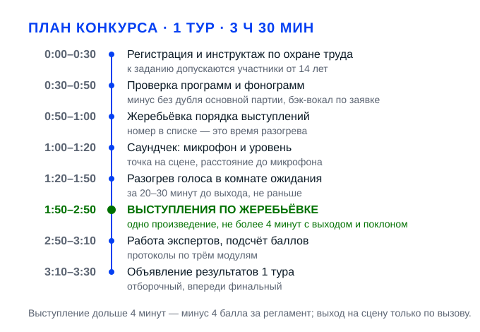
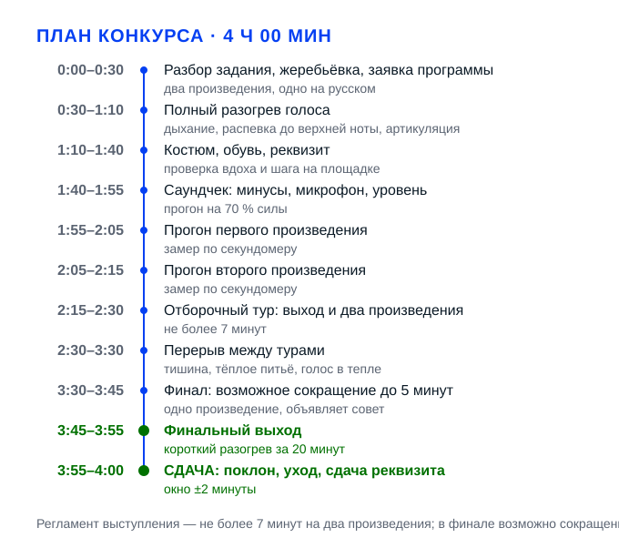
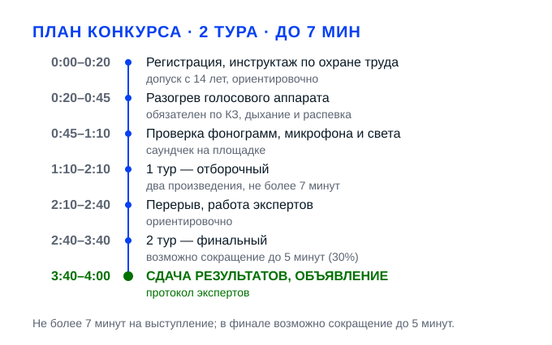

Исполнительское мастерство (вокал) (Р,О)
Задания ниже — официальные файлы «Абилимпикс» (источник: abilympics-russia.ru), разложенные по категориям. Решения написаны по тексту задания, регламенту и критериям оценки; в них указано, что именно проверяет эксперт.
Школьник
14–16 лет, базовый уровень заданияВ официальном файле категории не разделены отдельными разделами — приводим задание целиком; различия по категориям смотрите в таблице модулей.
Пошаговое решение
Школьникам на чемпионате «Абилимпикс» по компетенции «Исполнительское мастерство (вокал)» нужно исполнить одно подготовленное произведение на сцене с микрофоном — под минусовую фонограмму, под аккомпанемент или «а капелла» — и уложиться в четыре минуты. Оценивают сто баллов по трём модулям: вокальное мастерство даёт тридцать пять, сценическое тридцать пять, профессиональное тридцать, и почти половина этих баллов набирается ещё до первого звука — репертуаром, разогревом голоса, костюмом и точным хронометражем. Дальше разобрано всё по порядку: от чтения конкурсного задания до поклона и ухода со сцены, с объяснением, зачем нужен каждый шаг, как проверить результат, что обычно идёт не так и в какой момент на это смотрит эксперт.

Задача 1. Разобрать конкурсное задание и утвердить программу выступленияМодули А и В · до 12 баллов
До первой ноты нужно принять два решения, которые потом уже не переиграть: какое произведение вы исполняете и в каком виде оно звучит на сцене. Школьникам даётся одно произведение и не более четырёх минут, поэтому репертуар подбирается не «что нравится», а под связку трёх требований: возраст, формат сопровождения и реальный рабочий диапазон голоса. Здесь же набираются первые пять баллов за конкурсный репертуар и семь за его сложность, и теряются они тоже здесь — на сцене эти баллы уже не вернуть никакой старательностью.
Действие 1.1. Выписать регламент и допуски
Шаг 1.1.1
Берём распечатку конкурсного задания и выписываем на отдельный лист пять чисел, от которых зависит всё остальное: одно произведение, не более четырёх минут звучания, микрофон на сцене, два тура — отборочный и финальный, и сто баллов в сумме. Рядом расписываем, из чего складывается сотня: вокальное мастерство даёт тридцать пять баллов, сценическое мастерство ещё тридцать пять, профессиональное мастерство тридцать. Ниже подписываем формат сопровождения — минусовая фонограмма, аккомпанемент концертмейстера или исполнение «а капелла», потому что от этой строчки зависит вся дальнейшая подготовка.
Смысл выписки в том, что задание школьников короткое, а теряют баллы почти всегда не на сцене, а до неё — из-за подготовки «по памяти о прошлом годе». Четыре минуты и одно произведение означают, что второй номер, выученный на всякий случай, не прозвучит, а привычная концертная программа из двух песен вообще не ложится в регламент. Когда числа стоят на бумаге, репертуар выбирается под них, а не наоборот.
Проверьте лист простым вопросом: поймёт ли посторонний человек по этой записи, сколько у участника времени, что звучит на сцене и из чего складываются сто баллов. В строках должны стоять числа, а не слова «недолго» и «много баллов»: четыре минуты, тридцать пять, тридцать пять, тридцать.
Обычная ошибка — прочитать задание по диагонали и сразу унестись в выбор песни. Тогда через месяц выясняется, что в минусовке звучит дублирующая основная партия бэк-вокала, а это прямо запрещено, и фонограмму приходится искать в последнюю неделю. Вторая ошибка — готовить два произведения, как на отчётном концерте: время уходит на второе, а первое остаётся сырым.
Эксперт сверяет заявленную программу с текстом задания ещё до выхода участника на сцену, поэтому расхождение в жанре или в длительности он замечает раньше первого звука. Отдельно он смотрит, тот ли это тур и тот ли формат сопровождения, что заявлены в программе, и отмечает несоответствие в протоколе до начала выступления.
Шаг 1.1.2
Отдельным столбиком выписываем, что разрешено и что запрещено приносить на площадку. Разрешено петь под минусовую фонограмму, под собственный аккомпанемент, с личным концертмейстером и «а капелла»; допускается бэк-вокал, но без спецэффектов и без дублирования основной партии. Сопровождающего или волонтёра для выхода и ухода со сцены организаторы дают только по письменной заявке, поданной заранее, — эту строчку обводим, потому что забывают её чаще всего. Спецодежда по заданию не требуется, поэтому костюм участник привозит свой.
Каждый из этих пунктов проверяется на входе, и нарушение снимает баллы не за вокал, а за организацию, что обиднее всего. Бэк-вокал с эффектами или с прописанной основной партией превращает сольный номер в фонограмму «под плюс», и эксперт вправе не засчитать выступление в части вокального мастерства. Заявка на волонтёра, поданная в день конкурса, обычно не успевает пройти согласование.
На листе две колонки, и в каждой по четыре-пять строк, каждая с пометкой «да» или «нет». Проверьте себя на самом частом случае: если вы поёте под минус с прописанным бэк-вокалом, слышно ли в этом бэк-вокале вашу же мелодию — если да, фонограмма не годится.
Типичный промах — взять готовую минусовку из интернета, где припев подпет чужим голосом в унисон: звучит красиво, а требование задания нарушено. Второй промах — рассчитывать, что помочь выйти на сцену успеют и без заявки, и оказаться одному перед ступеньками с микрофоном в руке.
Эксперт слушает фонограмму до выступления, обычно на технической проверке, и отмечает в протоколе, есть ли в ней дублирование основной партии и заявлен ли бэк-вокал. Если участник вышел без заявки на концертмейстера или волонтёра, это тоже попадает в протокол как организационная небрежность.
Шаг 1.1.3
Составляем программу выступления и сдаём её в оргкомитет в том виде, в каком её будут читать ведущий и звукорежиссёр: название произведения, автор музыки и автор слов, жанр — эстрадный, джазовый, народный или академический вокал, точная продолжительность до секунды, формат сопровождения и тональность. Если нужен волонтёр или концертмейстер, это тоже вписывается в программу, а не сообщается на словах за кулисами. Копию оставляем себе и держим в папке с фонограммой.
Программа — документ, по которому потом сверяют номер: расхождение между заявленным жанром и тем, что прозвучало, бьёт по четырём баллам за чувство стиля и по трём за соответствие репертуару конкурсному заданию. Точная продолжительность нужна ещё и звукорежиссёру: по ней он выставляет уровень и готовит минус, а не ищет файл в спешке.
Прочитайте программу вслух как объявление: «Прозвучит такая-то песня, музыка такого-то, слова такого-то, продолжительность три минуты сорок секунд». Если в этой фразе нет ни одного пропуска и всё произносится без запинки, документ готов.
Сдать программу «потом, по почте» и забыть: на регистрации выясняется, что в списке стоит другое название, и ведущий объявляет не то, что вы поёте. Вторая ошибка — указать продолжительность на глаз, а на площадке уложиться в четыре с половиной минуты.
По программе эксперт заранее знает, что слушает, и сверяет с ней жанр, стиль и хронометраж во время выступления. Расхождение между заявленным и прозвучавшим он отмечает сразу в двух строках — за соответствие репертуару заданию и за чувство стиля, поэтому программа должна совпадать с номером до слова.
Действие 1.2. Выбрать произведение под голос и под задание
Шаг 1.2.1
Отбираем три-четыре песни и по каждой отвечаем письменно на два вопроса: соответствует ли она возрасту школьника и соответствует ли конкурсному заданию. Возрастное соответствие — это не про «детскую» песню, а про то, что образ и текст не выглядят натянуто в четырнадцать или семнадцать лет: взрослая драма про измену в устах школьника читается как игра в чужую жизнь, а песня для малышей лишает номер глубины. Из отобранных оставляем ту, где вам есть что сказать своим голосом, а не ту, где проще спрятаться за громким минусом.
Возрастное соответствие стоит два балла, соответствие заданию три, и вместе это половина оценки за репертуар. Оценивают не «нравится — не нравится», а уместность: эксперт смотрит, верит ли он участнику в этом образе. Песня не по возрасту тянет за собой ещё и потерю баллов за передачу авторского замысла, потому что сыграть переживание, которого не было, школьнику почти невозможно.
Покажите список из трёх песен педагогу или родителю и спросите прямо: «В это веришь, когда поёт человек моего возраста?» Если хотя бы по одной песне ответ «не очень» — она уходит в резерв. Проверьте текст: нет ли в нём слов, смысл которых вы не можете объяснить своими словами.
Классика — выбрать песню, которая нравится в записи взрослого артиста, и не заметить, что вся её сила в тембре и опыте, а не в мелодии. На сцене номер выглядит ученическим пересказом, и минус два балла за возрастное соответствие уходят вместе с тремя за смысл.
Эксперт ставит эти баллы в первые двадцать секунд и потом только подтверждает впечатление, поэтому первая фраза должна сразу попадать в возраст и в жанр. Он смотрит не на текст песни, а на участника: верит ли он сам тому, о чём поёт, и не приходится ли ему изображать чужой опыт.
Шаг 1.2.2
Проверяем тональность по самой низкой и самой высокой ноте мелодии, а не по удобному припеву. Играем мелодию на инструменте или в приложении, поём с листа и отмечаем, где голос начинает садиться: если крайняя верхняя нота берётся только криком, а нижняя только сдавленным звуком, произведение транспонируют на полтона или на тон вниз. После переноса перепроверяем всю песню целиком, потому что вместе с удобной вершиной вниз уходит и середина, где голос звучит лучше всего.
Чистота интонирования стоит три балла, тембр четыре, и оба критерия рушатся, если тональность выше рабочего диапазона: на верхних нотах голос теряет опору, появляется напряжение, и эксперт слышит не образ, а борьбу с нотой. Правильная тональность — это когда самая высокая нота поётся в верхней части удобной зоны, с запасом, а не на пределе.
Спойте песню три раза подряд в новой тональности и послушайте записи: голос на верхних нотах остаётся ровным по громкости, лицо не краснеет, шея не тянется вверх. Если после третьего раза появляется першение — тональность всё ещё высоковата.
Оставить «как в оригинале», потому что минус уже готов: на конкурсе верхняя нота выходит скомканной, интонация сползает вниз, и вместе с тремя баллами за чистоту уходит уверенность на весь остальной номер. Вторая ошибка — транспонировать на слух, не проверив новый минус целиком.
Эксперт отмечает именно те места, где голос теряет ровность, и по ним судит о владении голосом, а не о красоте самой песни. В протоколе он фиксирует не «фальшь», а конкретный интервал или фразу, и по этой записи видно, была ли ошибка случайной или тональность выбрана выше рабочего диапазона.
Шаг 1.2.3
Считаем хронометраж по фонограмме, а не по памяти: включаем минус и засекаем время от первого звука до последнего, включая вступление, проигрыш и финальный аккорд, потому что на сцене вы выйдете именно на первый звук, а уйдёте после последнего. Если получилось больше трёх минут пятидесяти секунд, сокращаем: убираем один проигрыш, снимаем повтор последнего припева, договариваемся о минусе с ранним финалом. Целевой хронометраж — три тридцать, три пятьдесят, чтобы остался запас на поклон.
Соблюдение временного регламента — отдельные четыре балла за своевременность окончания выступления, и это самый невосстановимый балл на конкурсе: его снимают один раз и навсегда. Вступление и финал тоже принадлежат номеру, а не фонограмме, и участник, который «вышел на первый звук и ушёл после последнего», почти всегда вылезает за четыре минуты, если не считал время заранее.
Три замера подряд секундомером дают разброс не больше двух-трёх секунд, и худший результат всё равно не превышает три пятьдесят пять. Если разброс больше — вы поёте в разном темпе и на сцене уйдёте за границу.
Считать только «тело» песни без вступления и финала: на площадке номер идёт четыре двадцать, и четыре балла снимаются при формально правильном исполнении. Вторая ошибка — сократить песню на репетиции, а на конкурс поставить старый минус.
Эксперт фиксирует время по секундомеру от выхода на сцену до ухода и сверяет с заявленной продолжительностью в программе. Если номер идёт дольше четырёх минут, четыре балла за регламент снимаются целиком, независимо от того, насколько хорошо спета сама песня.
Шаг 1.2.4
Оцениваем сложность выбранной песни честно, по четырём признакам: широкие скачки в мелодии больше квинты, длинные фразы на одном дыхании длиннее восьми тактов, модуляция или смена динамики от тихого куплета к полному припеву, стилистические приёмы — субтон, фальцет, мелизмы, народная манера, джазовая фразировка. Для семи баллов за сложность и трёх за стилистические приёмы достаточно двух-трёх таких признаков, выполненных чисто, а не всех сразу и грязно. Если признаков больше двух, но голос не держит их стабильно, лучше убрать один приём и спеть остальное уверенно.
Сложность репертуара оценивают в профессиональном модуле, и это последние семь баллов, которые участники часто оставляют на столе, выбирая простую песню «чтобы не ошибиться». При этом грязно спетая сложная песня теряет больше: три балла за стилистические приёмы не дают за попытку, а интонация и ансамбль с минусом рассыпаются, отнимая ещё и баллы вокального модуля.
Запишите песню целиком на телефон и прослушайте с карандашом: отметьте места, где приём не получился. Если срывов больше двух на всю песню, признак считается неосвоенным и в заявку на сложность не идёт.
Взять песню с четырьмя приёмами сразу и провалить два: эксперт слышит не сложность, а нестабильность, и семь баллов превращаются в ноль. Обратная ошибка — спеть ровную песню без единого приёма и удивиться, что сложность оценена низко.
Эксперт слушает именно те места, где заявлен приём, и отличает осознанный субтон от потерянного дыхания, а мелизму от нечистой интонации. Сложность он засчитывает по факту чистого исполнения, поэтому заявка в программе сама по себе баллов не добавляет.
Задача 2. Подготовить голосовой аппарат и техническую основу номераМодуль А · до 26 баллов
Здесь начинается собственно вокальная работа: голос разогревается, дыхание ставится на опору, артикуляция прочищается, а фонограмма и микрофон приводятся в состояние, в котором номер не зависит от случая. Ни один из этих шагов не виден зрителю, но именно они дают тембр, чистоту интонирования и ровность звукового потока — то есть основную часть тридцати пяти баллов вокального мастерства. Требование задания прямо говорит: до начала исполнения обязателен разогрев голосового аппарата и выполнение вокальных упражнений.
Действие 2.1. Разогреть дыхание и голос
Шаг 2.1.1
Начинаем с дыхания, а не с пения. Ставим ноги на ширине плеч, кладём одну руку на живот, вторую на рёбра и делаем вдох носом на четыре счёта так, чтобы живот и рёбра разошлись в стороны, а плечи остались неподвижными, затем выдох на восемь счётов через плотно сомкнутые губы, будто задуваем свечу, которая стоит далеко. Повторяем шесть-восемь раз, потом добавляем короткие активные выдохи «ф», «с», «ш» по восемь-десять подряд, следя, чтобы после каждого выдоха живот сам возвращался в исходное положение.
Певческое дыхание — фундамент всей компетенции: от него зависят ровность потока, длинные фразы и устойчивый тембр, а тембр и интонирование вместе весят семь баллов. Грудной ключичный вдох, который человек делает по привычке, даёт мало воздуха и поднимает плечи, отчего гортань зажимается и звук становится плоским. Диафрагмальный вдох позволяет петь длинную фразу без добирания воздуха посреди слова, а именно на этих местах обычно и рвётся интонация.
После упражнения спина и плечи не устали, в животе появилось ощущение упругости, а выдох на восемь счётов проходит ровно, без рывка в конце. Если воздух кончается на пятом счёте или плечи поднимаются на вдохе — вдох всё ещё грудной, повторите медленнее и тише.
Дышать «как в жизни» — коротко и высоко: в песне не хватает воздуха на второй половине фразы, участник добирает его посреди слова, и в этом месте интонация просаживается. Вторая ошибка — набирать воздух до предела и переполнять лёгкие: тогда первый звук выходит сдавленным и резким.
Эксперт видит дыхание по плечам и по шее на первом же вдохе перед фразой, а слышит его по тому, где у участника заканчивается воздух. Ошибку он отмечает не как вокальную, а как техническую основу: по дыханию он предсказывает, где номер просядет, ещё до середины песни.
Шаг 2.1.2
Переходим к распевке и идём снизу вверх по полутонам в пределах квинты, начиная от удобной середины голоса. Первое упражнение — закрытый рот на сонорных «м» и «н», по три ноты вверх и обратно, чтобы почувствовать резонанс в маске лица. Второе — слог «ми-мэ-ма-мо-му» на пяти нотах, третье — скачок на квинту вверх и плавный спуск. Каждое упражнение поднимаем на полтона, пока голос не дойдёт до верхней ноты вашей песни, и ни в одном упражнении не переходим границу, где звук начинает ломаться.
Распевка разогревает связки постепенно, как мышцы перед нагрузкой, и выводит голос на те ноты, которые нужны в номере: петь на сцене верхнюю ноту холодным голосом — это гарантированная потеря тембра и риск сорваться в середине выступления. Упражнения на сонорных и на слоги с гласными выравнивают регистры, а значит работают прямо на четыре балла за тембр и три за чистоту интонирования.
Голос стал легче и ярче, верхние ноты берутся без нажима, в середине лица появилось ощущение вибрации. Если после распевки голос звучит глуше, чем до неё, — вы пели на слишком большой силе, дайте паузу десять минут и повторите тише.
Распеваться сразу на полной громкости любимой песней: связки не готовы, к третьему куплету появляется сипота, и к выходу на сцену голос уже уставший. Вторая ошибка — не доводить распевку до верхней ноты песни и впервые пробовать её уже на сцене.
Эксперт не слышит распевку, но слышит её результат: первые две фразы показывают, готов ли аппарат. Если голос в начале холодный, а к третьему куплету разошёлся, в протоколе появляется запись о неровности потока, и это стоит три балла.
Шаг 2.1.3
Прочищаем артикуляцию отдельно от голоса. Делаем гимнастику языком — круговые движения по верхним зубам, «лошадка», цоканье, вытягивание языка вперёд; губами — «трубочка» и «улыбка» попеременно по десять раз; затем читаем вслух скороговорку про тридцать три кораблика три раза подряд с ускорением, но без потери согласных. После этого поём текст своей песни нараспев, утрированно выговаривая каждую согласную, особенно на концах фраз и перед паузами.
Дикция стоит три балла, а исполнение без подсказок ещё два, и оба критерия держатся на артикуляции: неразборчивый текст эксперт воспринимает как невыученный. Кроме того, активные согласные помогают атаке звука и делают фразировку точнее, потому что фраза начинается не с гласной, а с согласной, которая даёт импульс.
Запишите на телефон один куплет с расстояния два метра и послушайте на телефоне в обычных наушниках: все слова понятны без знания текста. Если приходится вслушиваться — согласные съедены и на сцене с микрофоном они тоже пропадут.
Пропевать только гласные, а согласные «проглатывать» для красоты звука: в зале слышно мычание, и три балла за дикцию теряются вместе с двумя за исполнение без подсказок. Вторая ошибка — утрировать настолько, что текст становится карикатурным и рвёт фразировку.
Эксперт слушает текст, не глядя в распечатку: если он может записать слова на слух с первого раза, дикция засчитана. Он специально проверяет финальные согласные и слова перед паузами, потому что именно там артикуляция теряется чаще всего.
Шаг 2.1.4
Приводим голос в состояние сценической готовности за двадцать-тридцать минут до выхода, а не за час. Распеваемся коротким кругом из трёх упражнений, затем поём песню один раз не в полную силу, только фразировку и дыхание по фразам, и после этого голосом не пользуемся: говорим мало и тихо, не кричим в коридоре, не поём в компании, пьём воду комнатной температуры маленькими глотками. Если позволяет площадка, делаем эту распевку в отдельной комнате, а не у сцены, где играет чужая фонограмма.
Свежесть голоса к моменту выхода — это и есть тембр, за который дают четыре балла. Уставший или перегруженный голос теряет верхние обертоны, звучит тускло, и никакая техника это не компенсирует. Разогрев за двадцать минут до выхода учитывает, что голос остывает примерно за двадцать-тридцать минут молчания, поэтому распевка за час до сцены почти бесполезна.
Перед выходом скажите две фразы вслух и послушайте себя: голос звучит свободно, без сипоты и без желания откашляться. Если появилась сухость — сделайте два-три глотка воды и помолчите оставшееся время.
Распеваться за полтора часа и потом два часа разговаривать с друзьями за кулисами: к выходу голос садится, и первая же фраза выходит с хрипотцой. Вторая ошибка — перед выходом пропеть песню в полный голос три раза подряд, чтобы «успокоиться».
Эксперт слышит состояние голоса в первых тактах и отличает уставший тембр от природного, даже если интонация чистая. В протоколе это выглядит как снижение оценки за тембр, и восстановить её в середине выступления уже нельзя.
Действие 2.2. Проверить фонограмму и настроить микрофон
Шаг 2.2.1
Слушаем минус в наушниках целиком и проверяем пять вещей: тональность совпадает с той, в которой вы репетировали, темп не «плывёт» в середине, длительность совпадает с замером, качество файла не имеет щелчков и обрывов, а в бэк-вокале не прописана основная мелодия. Формат файла согласуем с организаторами заранее — обычно это качественный звуковой файл на флешке без папок, с названием по шаблону компетенции, и дубль обязательно остаётся у вас и у педагога.
Фонограмма проверяется до конкурса, потому что на площадке менять её уже некогда: звукорежиссёр получает файлы заранее и в день выступления только выставляет уровень. Расхождение в полтона — самая частая причина фальшивого звучания, которую публика и эксперты слышат как плохой слух, а не как техническую накладку. Дублирующая основная партия в бэк-вокале нарушает прямое требование задания.
Спойте первый куплет под этот файл и послушайте запись: голос ложится в минус без подтягивания, на стыке фраз нет «швов». Проверьте длительность на плеере и сверьте с заявленной в программе цифрой до секунды.
Привезти минус в неподдерживаемом формате или в архиве: звукорежиссёр открывает файл в спешке, теряется первая секунда, и участник вступает не вовремя. Вторая ошибка — взять файл с другой тональностью, чем на репетиции, и обнаружить это уже на саундчеке.
Эксперт отмечает, вступает ли участник в такт с фонограммой, и по этому судит о чувстве ритма, которое стоит три балла. Отдельно он слушает, не плывёт ли темп в середине номера, потому что расхождение с минусом он воспринимает как потерю ансамбля, а не как техническую накладку.
Шаг 2.2.2
Репетируем вход и выход по фонограмме отдельно от пения: слушаем вступление и вслух считаем такты до своей первой ноты, отмечая точку вдоха за такт до вступления. Затем проходим все места, где минус делает паузу или фермату, и договариваемся с собой, что делаете в этот момент — держите паузу, идёте по сцене, смотрите в зал. Финальный аккорд отрабатываем так, чтобы точно знать, в какой момент уходить со сцены: на последнем звуке минуса или через такт после него.
Чувство ритма и ровность потока — шесть баллов, и оба критерия видны именно на стыках с фонограммой. Участник, который вступает на полтакта раньше или ждёт лишнюю паузу, звучит неуверенно даже при чистой интонации; точный вход, наоборот, создаёт ощущение, что номер сделан профессионалом. Знание финальной точки защищает четыре балла за своевременность окончания.
Три прогона подряд дают одинаковый вход: вы начинаете петь в одном и том же месте, не глядя на таймер. Попросите педагога отметить на записи момент входа — расхождение между прогонами должно быть меньше секунды.
Репетировать только «тело» песни под инструмент и впервые соединять с минусом на площадке: вступление оказывается длиннее, чем вы ждали, и первый куплет начинается с опозданием. Вторая ошибка — тянуть последнюю ноту после того, как минус закончился, и вылезать за регламент.
Эксперт слушает вход и финал как отдельные события: по ним видно, работает участник с фонограммой или борется с ней. Точный вход он отмечает как профессиональный признак, а ожидание лишней паузы перед первым словом — как неуверенность.
Шаг 2.2.3
На саундчеке встаём в ту точку сцены, где будете петь, и просим выставить микрофон на высоту подбородка, чуть ниже уровня рта, чтобы голову не приходилось запрокидывать. Пробуем три расстояния — ладонь, две ладони и полметра — и на каждом произносим громко и тихо одну фразу из песни, а звукорежиссёр смотрит на уровень. Выбираем то расстояние, где громкая нота не «рвёт» сигнал, а тихая ещё слышна, и запоминаем его по руке: чаще всего это ладонь с небольшим запасом.
Микрофон даёт право петь тихо и всё равно быть услышанным, но только если расстояние выбрано правильно. Слишком близко — громкая кульминация перегружает вход, звук трещит и теряет тембр; слишком далеко — тихие места исчезают, и участник начинает петь громче, чем нужно, теряя динамику. Ровность потока и кульминационные моменты в сумме стоят шесть баллов, и оба балла снимаются именно из-за техники с микрофоном.
Попросите звукорежиссёра сказать вслух, не уходит ли уровень в красное на самой громкой ноте и слышно ли самое тихое место. Запомните положение руки относительно микрофона и не меняйте его в номере, даже если будете двигаться.
Петь, отводя микрофон на громких нотах и придвигая на тихих: звук «дышит» по громкости, и эксперт слышит не динамику образа, а суету у стойки. Вторая ошибка — держать микрофон за головку, закрывая решётку ладонью.
Эксперт слушает баланс громких и тихих мест и по нему оценивает кульминацию и ровность звукового потока. Если на верхней ноте слышен треск перегрузки или провал громкости, он записывает это как технику работы с микрофоном, а не как ошибку голоса.
Действие 2.3. Сделать вокальный текст и фразировку
Шаг 2.3.1
Размечаем текст карандашом по фразам и дыханию: ставим галочки там, где берём воздух, подчёркиваем слова, на которые падает логическое ударение, и обводим согласные, которые нельзя терять. Вокальная фразировка строится так, чтобы дыхание совпадало со смыслом, а не с тактовой чертой: если по музыке получается рвать фразу посреди мысли, берём дыхание раньше, а слово дотягиваем на остатке воздуха. Отдельно решаем, где поём на legato, а где допускаем лёгкое разделение звука.
Вокальная фразировка стоит два балла, ровность потока три, и оба критерия означают одно: звук должен литься без провалов и судорог, а смысл фразы должен дойти до слушателя целиком. Фраза, порванная ради вдоха в случайном месте, разрушает и музыкальную линию, и смысл, а эксперт слышит это как неумение распределять дыхание.
Спойте размеченный текст и послушайте: ни в одном месте не приходится добирать воздух посреди слова, и каждая фраза звучит как законченная мысль. Если галочек больше, чем позволяет дыхание, — разметка неверна, фразы слишком длинные.
Дышать строго по тактовой черте: получаются рваные куски, в которых пропадает смысл, а два балла за фразировку уходят. Вторая ошибка — петь всё на одной силе, чтобы хватило воздуха: поток ровный, но мёртвый, и три балла тоже не ставят.
Эксперт следит за фразой целиком и отмечает места, где участник «выныривает» за воздухом и теряет линию. Ему важно не количество вдохов, а совпадает ли вдох со смыслом: фраза, порванная посреди мысли, читается как непонимание текста.
Шаг 2.3.2
Выбираем одну главную кульминацию на всю песню — обычно это последний припев или предпоследняя фраза — и строим динамику лестницей: куплет тише, первый припев чуть громче, второй ещё громче, кульминация на пределе удобной громкости, и короткий тихий финал после неё. Паузы тоже размечаем: где пауза держится на полном молчании и вдохе, где она заполняется движением или взглядом. Проверяем лестницу на записи, чтобы громкость росла постепенно, а не скачком.
Кульминационные моменты стоят три балла, смысловая нагрузка паузы три, и вместе они дают то, что отличает пение от проговаривания мелодии. Если кульминаций несколько и все на одном уровне, номер звучит ровно и быстро надоедает; если паузы не держатся, исчезает воздух между фразами и слушатель не успевает почувствовать смысл.
Прослушайте запись и отметьте, где вам хочется выключить звук от усталости: если такое место есть до кульминации, значит динамика слишком рано вышла на максимум. Пауза считается выдержанной, если вы успеваете мысленно досчитать до двух.
Петь всю песню на одном напоре «чтобы было мощно»: кульминация растворяется, и три балла теряются вместе с артистизмом. Вторая ошибка — заполнять паузы лишними звуками и вдохами, отчего пауза превращается в дырку.
Эксперт ждёт кульминацию в том месте, где её обещает музыка, и отдельно смотрит, держит ли участник паузу или проскакивает её. Пауза, заполненная суетой, в протоколе выглядит как потеря смысловой нагрузки, и три балла за неё не ставят.
Шаг 2.3.3
Убираем из номера всё, что требует подсказки: распечатку с текстом, шпаргалку на полу, подсказку из-за кулис. Учим текст не подряд, а блоками по две строки, и после каждого блока закрываем глаза и поём его без музыки, а затем проверяем себя, начиная с середины блока, а не с начала. Отдельно прогоняем четыре самых опасных места — начало второго куплета, переход к припеву, модуляцию и финал, потому что именно там память отказывает первой.
Исполнение без подсказок — два балла, но дело не только в них: любой взгляд в сторону текста ломает контакт со зрителем и убивает артистизм, который стоит десять. Кроме того, на конкурсе петь разрешено только наизусть, и участник с текстом в руках рискует получить замечание эксперта ещё до начала.
Спойте песню, начиная с любого места, которое назовёт педагог, и не более двух раз остановитесь. Если остановок больше — текст выучен «по накатанной», а не по смыслу. Проверьте отдельно четыре опасных места: начало второго куплета, переход к припеву, модуляцию и финал; каждое должно запускаться без подсказки с первой попытки.
Учить текст целиком на слух и надеяться, что на сцене память сработает от музыки: на конкурсе с другим минусом и волнением проваливается именно переход между куплетом и припевом. Вторая ошибка — положить распечатку на сцену «на всякий случай»: её видно, и два балла снимаются гарантированно.
Эксперт проверяет, совпадают ли движения губ и звук, и замечает момент, когда участник ищет глазами текст. Он также слушает, не появляется ли в середине песни запинка на одном и том же слове — это верный признак того, что текст выучен на слух, а не по смыслу.
Задача 3. Собрать сценический образ и поведение на площадкеМодуль Б · до 31 балла
Сценическое мастерство — это тридцать пять баллов, почти столько же, сколько вокальное, и набираются они костюмом, движением, взглядом и умением держаться в пространстве сцены. Задание прямо требует наличия костюма для создания определённого сценического образа, и оценивают его отдельной строкой на четыре балла, реквизит — на два, сценическое поведение — ещё на четыре. Задача этого блока — сделать так, чтобы образ был собран до выхода, а не складывался на глазах у эксперта в первые полминуты номера.
Действие 3.1. Подготовить костюм, обувь и реквизит
Шаг 3.1.1
Выбираем костюм под жанр и образ, а не «самый красивый»: для народной песни работает одно решение, для эстрадной баллады другое, для джаза третье, и смешивать их нельзя. Проверяем три технических свойства: костюм не мешает вдоху в поясе, не спадает с плеч при подъёме руки, не блестит так, чтобы софиты выжигали ткань в белое пятно. Обязательно прогоняем номер в этом костюме целиком хотя бы дважды, потому что неудобная вещь обнаруживается только в движении.
Костюм — четыре балла в критерии общего сценического образа, и это самая недооценённая часть подготовки. Тесный пояс не даёт диафрагмального вдоха, и участник начинает дышать грудью, теряя ровность потока и верхние ноты; блестящая ткань в софитах превращается в засвеченное пятно, и эксперт видит не образ, а техническую проблему. Соответствие костюма жанру читается как понимание стиля, которое стоит ещё четыре балла.
Поднимите руки вверх, сделайте глубокий вдох, присядьте и пройдитесь по комнате: ничего не тянет, не сползает, не звенит. Посмотрите на себя на видео с расстояния пяти метров — костюм должен читаться силуэтом, а не деталями.
Надеть концертное платье с жёстким поясом или узкий пиджак: на верхней ноте не хватает воздуха, звук срывается, и вместе с тембром уходит уверенность. Вторая ошибка — привезти костюм, не примерив его с обувью, и обнаружить, что брюки коротки.
Эксперт оценивает костюм с первого взгляда, до звука, и отдельно смотрит, не мешает ли он движению во время номера. Соответствие жанру он отмечает как понимание стиля, а несоответствие — как отсутствие сценического образа, и это сразу четыре балла.
Шаг 3.1.2
Отдельно занимаемся обувью и микрофонной техникой. Обувь — удобная, разношенная, с устойчивой подошвой, без скольжения по сценическому планшету; каблук допустим, но не выше того, в котором вы уверенно стоите сорок минут. Если используется радиомикрофон с передатчиком, передатчик крепится на пояс или под костюм сзади, провод прячется под одежду и фиксируется, головка микрофона остаётся в десяти сантиметрах от рта и не трётся о ткань. Петличку крепим на расстоянии ладони от подбородка, чуть ниже линии воротника.
Сценическое поведение стоит четыре балла, и половина этих потерь происходит из-за обуви и передатчика: скользящая подошва заставляет семенить, а болтающийся провод отвлекает и создаёт шорохи в микрофоне. Правильно закреплённый микрофон даёт стабильный уровень, а значит работает на ровность потока и на кульминацию, за которые в модуле А дают шесть баллов.
Пройдитесь по сцене в этой обуви до конкурса, если есть возможность, и проверьте сцепление на гладком полу. Попросите кого-нибудь пройти вокруг вас и посмотреть, видно ли провод и не выглядывает ли передатчик из-под пиджака.
Выйти в новой обуви на скользящей подошве: первый шаг превращается в поиск равновесия, и сценическое поведение оценивается по этому шагу. Вторая ошибка — закрепить передатчик так, что он бьётся о бедро на каждом движении, и получить в записи стук вместо чистого звука.
Эксперт замечает и шорохи в микрофоне, и то, как участник стоит: устойчиво или переступает с ноги на ногу. Закреплённый провод и уверенная стойка читаются как подготовленность, а поиск равновесия на скользящей подошве — как неопытность.
Шаг 3.1.3
Решаем вопрос реквизита до последнего: он должен быть осмысленным, безопасным и управляемым одной рукой. Если по образу нужен предмет — платок, шляпа, цветок, веер, — заранее определяем, где он лежит до выхода, в какой момент появляется, куда девается после номера, и репетируем эти три действия отдельно от пения. Ничего нельзя брать в руки на кульминации, если в этот момент нужна полная опора дыхания, и ничего нельзя класть на пол так, чтобы за него цеплялась нога.
Реквизит оценивают в два балла, но он же может отнять гораздо больше: предмет в руках сковывает жест, а упавшая на пол вещь сбивает участника с фразы. Осмысленный реквизит, который появляется и исчезает по логике образа, читается как продуманная драматургия номера, а она стоит восемь баллов в профессиональном модуле.
Прогоните номер с реквизитом три раза: предмет появляется в одном и том же месте и исчезает в одном и том же, не мешает вдоху и не задевает микрофон. Если хотя бы раз вы задумались, куда его деть, — жест не отработан.
Взять реквизит «для красоты» и держать его всю песню в руке: жест становится статичным, артистизм падает. Вторая ошибка — положить предмет на пол сцены и искать его глазами в финале.
Эксперт смотрит, работает ли реквизит на образ или просто присутствует, и отмечает моменты, где предмет начинает мешать. Если участник весь номер держит вещь в руке и не использует её, два балла за реквизит он не ставит.
Действие 3.2. Выстроить движение и мизансцену
Шаг 3.2.1
Заранее рисуем на бумаге план сцены: где стоите на первом куплете, куда делаете шаг на припеве, где находитесь в кульминации и откуда уходите. Точка выхода и точка поклона должны совпадать, чтобы не пришлось искать центр зала в темноте. Выход репетируем отдельно: спокойный шаг, остановка, взгляд в зал, вдох, и только потом первый звук минуса. Никаких пробежек и поправлений одежды по дороге к микрофону.
Сценическое поведение оценивают в четыре балла, и это оценка не за танец, а за то, насколько участник владеет пространством. Продуманная мизансцена даёт ощущение, что номер поставлен, а не собран на ходу; суетливый выход и поиск точки читаются как растерянность, даже если потом всё спето чисто. Кроме того, стабильная точка помогает дыханию: стоя на месте, легче петь длинные фразы.
Пройдите свой маршрут без пения и посмотрите на себя на видео с последнего ряда: видно ли, куда вы идёте и зачем. Попросите кого-то из зала сказать, в какой момент вы сместились — если он не может ответить, значит, перемещения были мелкими и суетливыми.
Топтаться на месте весь номер, переступая с ноги на ногу: движение не читается как образ, а четыре балла за поведение снимаются. Обратная ошибка — выбранная слишком широкая мизансцена, где на кульминации вы оказываетесь в дальнем углу и поёте в профиль.
Эксперт фиксирует, где участник стоит в ключевых точках номера, и оценивает цельность рисунка. Суетливые перемещения он читает как потерю пространства, а продуманную мизансцену — как поставленный номер, и это четыре балла за сценическое поведение.
Шаг 3.2.2
Подбираем два-три движения, не больше, и привязываем каждое к музыкальному событию: шаг в сторону на смене аккорда, раскрытие руки на входе в припев, поворот корпуса на кульминации. Все движения делаем из центра тела, а не от локтя, и обязательно проверяем, что в момент движения дыхание не рвётся. Хореографию репетируем сначала без пения под счёт, потом с пением на одной громкости, и только потом в полный голос.
Хореография — четыре балла внутри критерия артистизма, и это самая честная строка: эксперт видит, двигается участник по музыке или просто машет руками. Два точных движения на музыкальные акценты читаются сильнее, чем длинная связка, исполненная не в темп; а движение, сбивающее дыхание, отнимает баллы уже в вокальном модуле.
Снимите номер на видео и выключите звук: движения должны попадать в ритм даже в тишине. Затем включите звук и проверьте, не появилось ли на движениях сипоты или обрыва фразы. Хороший признак — если после двух прогонов подряд вы не сбиваетесь ни в одном движении и не думаете о следующем.
Выучить танец на восемь счётов из клипа и петь под него: на третьем движении не хватает воздуха, кульминация смазана. Вторая ошибка — двигаться всё время одинаково, отчего даже удачный жест перестаёт читаться.
Эксперт смотрит на совпадение движения с музыкальным акцентом и на то, сохраняется ли звук при движении. Движение, после которого слышно обрыв фразы, он засчитывает как минус, даже если жест был красивым.
Шаг 3.2.3
Учимся смотреть в зал: выбираем три точки — левую, центральную и правую часть зрительного зала, — и распределяем взгляд по фразам, задерживаясь в каждой точке не меньше одной строки. На паузах смотрим не в пол и не в потолок, а в зал, чуть выше голов сидящих. Перед выходом проверяем, не слепят ли софиты: если прямо в глаза бьёт свет, заранее выбираем точку чуть выше и в сторону, где зал виден.
Контакт со зрителем стоит три балла, умение держаться на сцене два, и оба критерия проверяются взглядом: участник, поющий в пол, выглядит неуверенным независимо от качества вокала. Распределённый взгляд создаёт ощущение, что песня обращена к каждому, и одновременно помогает управлять волнением, потому что глазам есть за что зацепиться.
Попросите трёх знакомых сесть в разных частях зала и поднять руку, если вы посмотрели в их сторону. К концу номера все три руки должны подниматься хотя бы по одному разу, причём на паузах взгляд остаётся в зале, а не уходит в пол или в потолок.
Петь с закрытыми глазами «для выразительности»: зал выпадает из номера, и три балла за контакт не ставят. Вторая ошибка — смотреть в одну точку всю песню, отчего взгляд становится отсутствующим.
Эксперт сидит в зале и оценивает, чувствует ли он обращение к себе; взгляд в пол он отмечает как потерю контакта. Он специально смотрит на кульминацию: если в этот момент участник поёт в сторону или закрыл глаза, три балла за контакт со зрителем не ставят.
Действие 3.3. Поставить актёрскую задачу
Шаг 3.3.1
Формулируем сверхзадачу одной фразой от первого лица: что вы делаете этой песней и к кому обращаетесь, — например, просите прощения у человека, которого больше не увидите, или зовёте за собой. Дальше разбиваем песню на три-четыре отрезка и подписываем каждому своё действие: уговариваю, вспоминаю, срываюсь, отпускаю. Сверхзадача записывается на бумагу и держится перед глазами всю подготовку, а не только на репетиции.
Передача авторского замысла стоит три балла, актёрская игра три, эмоциональная и смысловая составляющие ещё восемь, и всё это держится на одном: есть ли у номера задача. Без задачи участник иллюстрирует текст лицом, и эксперт видит набор выразительных средств без внутренней логики. Сформулированная сверхзадача сама подсказывает, где тише, где громче и где держать паузу.
Скажите сверхзадачу вслух и проверьте, можно ли её сыграть: она должна требовать действия — просить, звать, обвинять, — а не состояния «быть грустным». Если формулировка состоит из прилагательного, переделайте её в глагол.
Петь «с эмоцией» без задачи: получается гримаса, и все шесть баллов за замысел и игру уходят. Вторая ошибка — придумать задачу, которая противоречит тексту, и играть не то, о чём поётся.
Эксперт формулирует для себя, о чём номер, и сверяет со своим пониманием текста: совпадение и есть переданный замысел. Если он не может одной фразой сказать, что происходило на сцене, три балла за передачу авторского замысла он не ставит.
Шаг 3.3.2
Переводим задачу в конкретные физические действия: на словах воспоминания опускаем плечи и замедляем шаг, на просьбе раскрываем ладонь, на срыве подаёмся корпусом вперёд. Каждое действие привязываем к тексту, а не к такту, и проверяем, совпадает ли оно с логическим ударением во фразе. Мимику не гримируем отдельно: она появляется сама, если действие настоящее, поэтому на репетиции достаточно думать о задаче, а не о лице.
Актёрская игра оценивается в три балла, и оценка идёт по органичности: эксперт отличает действие от изображения действия. Привязанные к тексту движения читаются как часть образа, а «сделанное лицо» — как старание, которое мешает звуку, потому что зажимает челюсть и гортань.
Снимите номер крупным планом и посмотрите без звука: понятно ли по телу, о чём песня и меняется ли состояние к финалу. Если лицо одинаково от начала до конца — действие не выстроено.
Играть брови и закатывать глаза: мимика перекрывает вокал, эксперт видит наигранность, и три балла не ставят. Вторая ошибка — держать одно выражение лица всю песню, потому что «так серьёзнее».
Эксперт смотрит на смену состояний по ходу номера и на то, не мешает ли актёрская задача пению. Наигранную мимику он отличает от настоящего действия по телу: если работает только лицо, а корпус остаётся неподвижным, три балла за актёрскую игру не ставят.
Шаг 3.3.3
Собираем смысл и эмоцию в одно: проходим текст построчно и на каждой строке отвечаем себе, что в этот момент происходит с героем и какое одно слово в строке главное. Главное слово выделяем голосом — чуть громче, чуть дольше, с паузой перед ним, — а остальные произносим ровно. Эмоцию проверяем по телу: если на словах о боли у вас расслаблены плечи и не меняется дыхание, значит, вы поёте слова, а не ситуацию.
Смысловая и эмоциональная составляющие — по четыре балла, и это самая крупная пара критериев в сценическом блоке. Выделение главного слова превращает текст в речь, а речь эксперт понимает и запоминает; ровное проговаривание всех слов одинаково делает даже хорошую песню плоской. Эмоция, подтверждённая телом, считывается залом мгновенно, а изображённая — вызывает недоверие.
Дайте послушать запись человеку, который текста не знает, и спросите, о чём песня и что случилось с героем. Если он пересказывает текст, но не называет ситуацию, смысл не донесён.
Выделять голосом каждое слово: получается крик, в котором нет ни смысла, ни интонации, и восемь баллов тают. Вторая ошибка — изображать эмоцию громкостью, тогда как нужна смена тембра и темпа.
Эксперт в протоколе описывает, о чём был номер, и по этому описанию видно, дошёл ли смысл. Он отдельно слушает, выделено ли главное слово во фразе: ровное проговаривание всех слов он читает как отсутствие смысловой работы, и это стоит четыре балла.
Задача 4. Собрать номер целиком и уложить его в регламентМодули Б и В · до 34 баллов
К этому моменту есть выученный текст, разогретый голос, костюм и движения, но номера ещё нет: есть части. Сборка происходит на генеральных прогонах, где всё соединяется в один отрезок времени длиной не более четырёх минут, и именно здесь участники впервые видят, что их номер длиннее регламента, а кульминация приходится на третью минуту. Тут же решается вопрос драматургии и оригинальности — восемь баллов за постановку номера, семь за оригинальность и три за дополнительные выразительные средства.
Действие 4.1. Провести прогоны с секундомером
Шаг 4.1.1
Делаем полный прогон так, как будет на конкурсе: в костюме и обуви, с реквизитом, с выходом из-за кулис, остановкой, вдохом, минусом с первой секунды и поклоном в конце. Секундомер включаем в момент первого шага на сцену, а не в момент первого звука, и останавливаем после поклона и ухода. Рядом кладём лист и пишем три цифры: время выхода, время последней ноты, время ухода.
Своевременность окончания выступления стоит четыре балла, и на конкурсе время считают от выхода до ухода, а не от песни до песни. Участник, который отрепетировал только музыкальную часть, на площадке обнаруживает, что выход, пауза перед вступлением и поклон добавляют двадцать-тридцать секунд. Полный прогон — единственный способ увидеть настоящую длину номера.
Два прогона подряд дают одинаковое время с разницей не больше трёх секунд, и оба укладываются в три пятьдесят пять. Если разброс больше, значит, вы то ускоряетесь, то тормозите, и на сцене с волнением время уползёт вверх.
Мерить только песню: на конкурсе номер идёт на двадцать секунд дольше, и четыре балла снимаются при идеальном исполнении. Вторая ошибка — считать по памяти, «примерно четыре минуты», не включая секундомер вообще.
Эксперт фиксирует время выхода и ухода по секундомеру и сравнивает с четырьмя минутами из задания. Он не делает скидок на поклон и паузу перед вступлением, поэтому прогон, в котором считали только песню, на конкурсе всегда даёт превышение.
Шаг 4.1.2
Если прогон вышел за три пятьдесят пять, сокращаем по плану: сначала убираем повтор последнего припева, потом сокращаем вступление на четыре такта, потом убираем один проигрыш между куплетом и припевом. Резать нужно музыку, а не смысл: кульминация и финал остаются на месте при любом сокращении. После каждого варианта делаем новый замер и записываем результат, чтобы видеть, сколько секунд дало каждое изменение.
Регламент — жёсткая граница: превышение стоит четыре балла полностью, а не пропорционально. При этом сокращение музыки почти не влияет на оценку, если сохранены кульминация и смысловая линия, тогда как сокращение куплета рвёт драматургию и отнимает баллы в модуле В. Поэтому режем повторы и проигрыши, а не содержание.
После сокращения прогон укладывается в три сорок пять — три пятьдесят, и при этом в номере остаются все три смысловых отрезка и главная кульминация. Послушайте запись и проверьте, не появилось ли ощущение, что песня обрывается.
Убрать второй куплет ради времени: смысл пропадает, замысел не читается, и теряются баллы в двух модулях сразу. Вторая ошибка — сократить музыку на репетиции, но привезти на конкурс старый файл.
Эксперт замечает неровности монтажа фонограммы: склейка посреди фразы слышна и читается как техническая небрежность. Если после сокращения пропадает смысловой отрезок, он отмечает это в драматургии номера, поэтому резать нужно музыку, а не содержание.
Шаг 4.1.3
Отдельно репетируем три сбоя, чтобы они не выбили из номера. Первый: минус оборвался на середине — продолжаем петь «а капелла» ещё четыре такта, не останавливаясь, и спокойно доигрываем фразу. Второй: забыли строку — не останавливаемся, поём любую фразу из этого куплета на ту же мелодию и возвращаемся в текст. Третий: микрофон отключился или упал — делаем шаг к стойке, берём запасной или продолжаем петь в зал без микрофона, увеличив опору дыхания.
Сбой на конкурсе стоит дороже, чем на репетиции, потому что участник теряется и останавливается: после остановки номер уже не восстановить, и оценка падает по всем критериям сразу, включая артистизм и умение владеть собой, которое стоит пять баллов. Отработанный сбой выглядит как часть замысла, и эксперт часто его вообще не засчитывает как ошибку.
Попросите педагога выключить минус в случайный момент и посмотрите, продолжаете ли вы петь без паузы. Второй тест — назвать вслух любую строку из середины песни и спеть её с того места без подготовки.
Остановиться и сказать «извините, можно ещё раз»: право на повтор не предусмотрено, а пять баллов за владение собой уходят. Вторая ошибка — при сбое начинать сначала и не уложиться в регламент.
Эксперт внимательно смотрит на реакцию участника при любом сбое: спокойствие он засчитывает как профессиональное качество. Остановка и просьба начать заново не предусмотрены, и после неё баллы за владение собой уже не восстанавливаются.
Действие 4.2. Выстроить драматургию и оригинальность номера
Шаг 4.2.1
Раскладываем номер на четыре части и проверяем, что у каждой есть функция: завязка в первом куплете, где зал понимает, кто поёт и к кому; развитие во втором, где появляется новое обстоятельство; кульминация в последнем припеве или предпоследней фразе; короткая кода, где ставится точка. У каждой части должно быть своё решение по свету, движению или силе звука, и между ними — переход, который зал замечает.
Драматургия номера стоит три балла, соответствие жанру три, креативность и яркость два, и всё это оценивается по структуре. Номер без коды выглядит оборванным, номер без завязки — как упражнение по вокалу; эксперт ставит баллы за постановку, а не за качество песни. Четыре части — тот минимум, при котором номер читается как законченное высказывание.
Расскажите номер словами за тридцать секунд: что происходит в начале, что меняется, чем всё заканчивается. Если рассказ получается, структура есть; если вы пересказываете текст песни — структуры нет.
Спеть четыре куплета с одинаковой интонацией и остановиться: зал не понимает, что номер закончился, и три балла за драматургию уходят. Вторая ошибка — начинать сразу с кульминации, после которой номеру некуда двигаться.
Эксперт в протоколе отмечает, есть ли у номера развитие и финал, и это видно уже во второй половине выступления. Номер, который закончился на той же интонации, с которой начался, он читает как отсутствие драматургии, и три балла не ставит.
Шаг 4.2.2
Сверяем номер с жанром, который заявлен в программе: эстрадная песня предполагает открытую подачу и прямой контакт, джазовая — фразировку со сдвигом и свободу в ритме, народная — характерную манеру и опору на грудной резонанс, академическая — ровный округлый звук и сдержанное движение. Дальше ищем одну свою деталь, которой нет в оригинале: изменённое вступление, неожиданная тихая третья фраза, вставной такт с хлопком, — и делаем её аккуратно, не разрушая жанр.
Понимание жанра стоит четыре балла, а соответствие жанру внутри постановки номера ещё три; креативность и новизна добавляют два. Эксперт оценивает не оригинальность ради оригинальности, а способность внести своё, не потеряв стиль: одна уместная деталь читается как зрелость, а набор эффектов — как непонимание жанра.
Дайте послушать запись человеку, который знает жанр, и спросите, к какому стилю он отнесёт номер, не зная программы. Ответ должен совпасть с заявленным жанром, а ваша деталь — быть заметной, но не главной.
Спеть народную песню эстрадным звуком или вставить в академическую мелодию рэп-вставку: жанр не читается, и семь баллов теряются. Вторая ошибка — скопировать чужую версию один в один, за что новизну не ставят.
Эксперт знает оригинал и слышит, что участник привнёс своего, а что просто повторил. Жанр он определяет на слух по манере и фразировке, поэтому заявленный в программе стиль должен совпадать с тем, что он слышит, иначе теряются четыре балла за чувство стиля.
Шаг 4.2.3
Решаем, чем усиливаем оригинальность: собственным аккомпанементом — гитара, фортепиано, синтезатор, — или собственной аранжировкой минуса. Если играете сами, проверяем, что инструмент не закрывает голос: аккомпанемент тише вокала настолько, чтобы слова были разборчивы, и не мешает певческой установке — корпус остаётся свободным, дыхание не сжимается. Если делаете аранжировку, оставляем узнаваемую мелодию и меняем фактуру, темп или инструментовку, а не саму песню.
Исполнение под собственный аккомпанемент даёт четыре балла, оригинальная аранжировка три, и это самая выгодная пара в профессиональном модуле: семь баллов за решение, которое готовится заранее. Но собственный аккомпанемент опасен: он сковывает корпус и отвлекает внимание от вокала, поэтому браться за него стоит только при уверенной игре и свободной посадке.
Запишите номер с инструментом с расстояния зала: слова разборчивы, голос впереди аккомпанемента, а на верхних нотах вы не меняете положение корпуса. Если приходится тянуться к грифу или педали — решение не годится.
Взять гитару и петь в неудобной позе: голос теряет опору, интонация плывёт, и четыре балла за аккомпанемент не перекрывают потерь в вокальном модуле. Вторая ошибка — переписать аранжировку до неузнаваемости, потеряв жанр.
Эксперт смотрит и на игру, и на то, остаётся ли вокал ведущим элементом номера. Если инструмент заглушает голос или поза за инструментом сковывает дыхание, четыре балла за собственный аккомпанемент он не компенсирует баллами вокального модуля.
Шаг 4.2.4
Считаем дополнительные выразительные средства по одному баллу за каждое: хореографическое сопровождение, бэк-вокал, спецэффекты и футажи. Выбираем не больше двух и только те, что поддержаны техникой площадки и согласованы заранее: бэк-вокал — без спецэффектов и без дублирования основной партии, футаж — в формате, который принимает оборудование, хореография — с людьми, которые приедут и отрепетируют. На каждый дополнительный элемент закладываем отдельную репетицию с ним.
Три балла за дополнительные средства — небольшие, но их часто теряют целиком из-за организационных провалов: бэк-вокал не приехал, футаж не открылся, танцоры вышли не в тот момент. При этом каждый элемент рискует отнять больше, чем даёт, если он не отрепетирован: сбитая хореография рушит артистизм, а футаж, включённый не вовремя, отвлекает от кульминации.
Составьте список из двух строк с именами людей и форматами файлов и проверьте, что каждое средство отработано в номере минимум дважды в полном составе. Если кто-то не подтвердил участие за три дня — убирайте элемент, а не надейтесь.
Собрать три средства сразу и потерять на них кульминацию: зал смотрит на танцоров, а не на участника, и баллы за артистизм падают. Вторая ошибка — включить футаж, который задерживается на две секунды и накрывает первый припев.
Эксперт фиксирует, работают ли дополнительные средства на номер или существуют отдельно от него. Бэк-вокал, дублирующий основную партию, он отмечает как нарушение задания, а футаж, включённый не в свой момент, — как потерю кульминации.
Задача 5. Выступить на площадке и завершить конкурсный деньМодули А–В · 100 баллов
На площадке всё решают четыре минуты, но приходят к ним через регистрацию, инструктаж по охране труда, саундчек и правильный голосовой режим. Спокойная и точная работа в этот день сохраняет баллы, набранные за месяцы подготовки: певческая установка стоит четыре балла, умение владеть собой пять, а растерянность перед выходом съедает их быстрее, чем любая вокальная ошибка. Здесь же заканчивается конкурс: поклон, уход и разбор — тоже часть работы, потому что конкурс идёт в два тура.
Действие 5.1. Пройти день конкурса до выхода на сцену
Шаг 5.1.1
Приезжаем с запасом не меньше часа и первым делом проходим регистрацию: сверяем фамилию в списке, сдаём программу выступления, если она ещё не сдана, и получаем номер по жеребьёвке. Дальше обязательный инструктаж по охране труда — к выполнению задания допускаются участники от четырнадцати лет, прошедшие инструктаж и ознакомленные с инструкцией; отмечаемся в журнале. Уточняем у эксперта, где комната ожидания, где можно распеться и как вызывают на сцену.
Без отметки об инструктаже участника к выполнению задания не допускают, и никакие сто баллов подготовки это не компенсируют. Порядок выступления по жеребьёвке определяет, сколько времени у вас на разогрев: знать свой номер нужно заранее, чтобы не распеваться за два часа до выхода. Спокойное прохождение формальностей — часть умения владеть собой, за которое дают пять баллов.
В руках программа, в журнале стоит подпись, вы знаете свой номер по порядку и место, где ждать вызова. Если хотя бы один пункт не закрыт — идите к эксперту сразу, а не за пять минут до выхода.
Приехать за двадцать минут и обнаружить, что инструктаж уже прошёл: пока ищут эксперта, уходит время разогрева, и участник выходит с холодным голосом. Вторая ошибка — не уточнить порядок выступления и распеться за полтора часа до сцены.
Эксперт сверяет список участников с журналом инструктажа и отмечает опоздания и суету на регистрации. Участника без отметки о инструктаже к выполнению задания не допускают, и это единственная формальность, которую невозможно обойти хорошим вокалом.
Шаг 5.1.2
До выступления проверяем площадку своими глазами: большой зал около ста пятидесяти трёх квадратных метров с количеством мест чуть больше ста тридцати — значит, зал глубокий, и последние ряды слышат хуже передних. Смотрим, где стоят софиты и не бьёт ли свет в глаза с точки, которую вы выбрали, где находится вход на сцену и ступеньки, куда положить реквизит. Отдельно проверяем, что фонограмма принята и стоит в списке под вашим номером.
Глубокий зал меняет манеру: то, что кажется громким у сцены, до последнего ряда доходит тише, поэтому динамику и артикуляцию рассчитывают на дальнюю точку. Свет в глаза — частая причина, по которой участник поёт в пол и теряет три балла за контакт со зрителем. Проверка входа и ступенек заранее снимает риск споткнуться на выходе, а это прямой удар по сценическому поведению.
Встаньте на свою точку и посмотрите в зал: видно ли последний ряд, не слепит ли свет, понятно ли, где ступенька. Пройдите путь от кулисы до точки один раз в той обуви, в которой будете выступать.
Выйти и обнаружить, что софит бьёт прямо в лицо: глаза приходится щурить, взгляд уходит вниз, три балла за контакт теряются. Вторая ошибка — не проверить, принята ли фонограмма, и услышать на сцене чужой минус.
Эксперт сидит в зале и оценивает слышимость и обзор, поэтому ваша проверка заранее — это работа на его же точку зрения. Он отмечает, смотрит ли участник в зал или щурится от софитов, и по этому судит о контакте со зрителем.
Шаг 5.1.3
За тридцать минут до выхода уходим в тихое место и делаем короткий круг: дыхание, три распевки, один прогон фразировки вполголоса. Дальше голосом не пользуемся: говорим односложно, не отвечаем на вопросы развёрнуто, не подпеваем чужой фонограмме из-за кулис. Пьём воду комнатной температуры маленькими глотками, не едим сладкого и не пьём газированного. За пять минут до вызова делаем три спокойных вдоха с длинным выдохом и повторяем про себя сверхзадачу номера.
Голосовой режим прямо влияет на тембр, за который дают четыре балла: разговоры в шумном коридоре и подпевание чужим песням устают голос быстрее, чем сам номер. Длинный выдох перед выходом снижает пульс и убирает дрожь в дыхании, а это уже пять баллов за умение владеть собой. Холодная и газированная вода раздражает связки, сладкое даёт вязкость во рту и мешает дикции.
Скажите две фразы вслух: голос звучит свободно, без сипоты, дыхание ровное, руки не дрожат. Если появилась сухость — два глотка воды; если голос сел — не пытайтесь «прокашляться» громко, а помолчите и подышите носом.
Провести час за кулисами в разговорах и на чужих выступлениях: к выходу голос уставший, первая фраза выходит с хрипотцой. Вторая ошибка — выпить холодной воды или съесть шоколадку перед выходом и получить першение на верхней ноте.
Эксперт слышит свежесть голоса в первых тактах и по ней оценивает тембр и подготовку участника. Уставший голос он отличает от волнения: волнение снимается к третьей фразе, а усталость остаётся до конца номера.
Действие 5.2. Выйти, спеть и уйти в регламенте
Шаг 5.2.1
На вызов выходим спокойным шагом, встаём на отмеченную точку, разворачиваем стопы на ширине плеч, вес распределяем на обе ноги, руки свободно опускаем. Плечи разводим назад и вниз, грудь не поднимаем, голову держим прямо, подбородок параллельно полу. Смотрим в зал, делаем вдох, ждём первых звуков минуса и вступаем. Микрофон держим на выбранном на саундчеке расстоянии, локоть не прижимаем к корпусу.
Певческая установка — четыре балла, и это самая быстрая оценка на конкурсе: эксперт видит её до первого звука. Свободная прямая спина даёт диафрагмальное дыхание и полный тембр, а ссутуленные плечи и поднятый подбородок сжимают гортань, отчего верхние ноты теряют округлость. Стоять на двух ногах с распределённым весом — ещё и вопрос устойчивости, которую замечают в критерии сценического поведения.
Проверьте себя по трём точкам: стопы на ширине плеч и не перекрещены, плечи не подняты к ушам, подбородок не задран. Сделайте вдох — живот должен разойтись, а плечи остаться на месте.
Выйти и сразу начать петь, ссутулившись над микрофоном: дыхание поверхностное, фраза рвётся, и четыре балла за установку уходят вместе с ровностью потока. Вторая ошибка — переносить вес на одну ногу и покачиваться в такт, что читается как неуверенность.
Эксперт оценивает установку в первые секунды, до вступления, и отмечает её в протоколе отдельной строкой. Он смотрит на стопы, плечи и подбородок, поэтому поправить установку в середине номера уже невозможно — четыре балла фиксируются до первого звука.
Шаг 5.2.2
Поём по размеченному плану: держим фразировку и дыхание по галочкам, не добавляем громкости от волнения, контролируем себя по внутреннему слуху — слышим не зал, а свой звук в голове. На паузах не заполняем тишину вдохами и не поправляем одежду: стоим, смотрим в зал, держим паузу до конца. Если чувствуете, что голос «садится», не поднимайте громкость, а усильте опору дыхания и оставьте ту же динамику.
Ровность потока и вокальная фразировка вместе стоят пять баллов, а слуховой контроль — единственный инструмент, который позволяет их удержать: участник, который ориентируется на громкость зала, начинает форсировать звук и теряет тембр. Смысловая нагрузка паузы стоит ещё три балла, и пауза, заполненная суетой, эти баллы снимает.
После выступления послушайте запись, если её ведут: громкость от куплета к припеву растёт плавно, без скачков, а паузы длятся не меньше двух счётов. Если в записи слышно дыхание перед каждой фразой — вы торопились.
От волнения спеть громче, чем на репетиции: на кульминации звук срывается в крик, интонация уходит вверх, и теряются баллы сразу в трёх критериях. Вторая ошибка — заполнять паузы словами «да» и вдохами, разрушая смысл.
Эксперт сверяет услышанное с текстом песни и отмечает, где участник потерял фразировку или не выдержал паузу. Форсированную громкость он читает как потерю контроля, и это одновременно бьёт по тембру, ровности потока и кульминации.
Шаг 5.2.3
Кульминацию делаем в одном заранее выбранном месте и не выше того уровня, который отработан на репетиции; после неё сразу уходим в тихую коду, не пытаясь удержать громкость до конца. Финал отрабатываем как отдельное действие: последнюю ноту допеваем полностью, досчитываем два счёта тишины после минуса, и только потом начинаем поклон. Если минус закончился раньше вашей последней ноты, ноту всё равно дотягиваем — это ваша нота, а не фонограммы.
Кульминационные моменты стоят три балла, своевременность окончания четыре, и обе оценки зависят от умения управлять финалом. Участники, которые держат максимальную громкость до последнего такта, к концу выдыхаются и смазывают именно то место, за которое дают баллы. Два счёта тишины после последней ноты нужны, чтобы номер не оборвался на полуслове и эксперт успел зафиксировать окончание.
На репетиции отметьте момент, когда минус умолкает, и убедитесь, что ваша последняя нота звучит до него или вместе с ним, но не после на две секунды. Проверьте по секундомеру: от первой ноты до последней не больше четырёх минут вместе с паузами.
Тянуть финальную ноту «на публику» ещё четыре секунды: время уходит за регламент, и четыре балла снимаются. Вторая ошибка — оборвать песню вместе с минусом на середине фразы, отчего номер выглядит недоделанным.
Эксперт смотрит на секундомер и на финал одновременно: окончание выступления — самая формальная, но и самая неумолимая строка. Растянутая последняя нота или оборванная вместе с минусом фраза стоят четырёх баллов независимо от качества вокала.
Шаг 5.2.4
После последней ноты выдерживаем паузу, переводим взгляд в зал, делаем спокойный поклон — наклон корпуса примерно на тридцать градусов, руки свободно вдоль тела, — выпрямляемся, снова коротко смотрим в зал и уходим тем же шагом, что и выходили. Реквизит забираем по заранее отработанному движению, микрофон возвращаем на стойку, а не оставляем на полу. За кулисами не обсуждаем выступление и не садимся на пол: эксперт может видеть вас до конца блока.
Сценическое поведение оценивают до последней секунды пребывания на площадке, и четыре балла за него включают поклон и уход. Поклон с опущенной головой и суетливый уход читаются как растерянность, тогда как спокойное завершение оставляет впечатление законченного номера. Возвращённый на стойку микрофон и убранный реквизит — ещё и вопрос безопасности следующего участника.
Поклон отработан, если вы успеваете сосчитать до трёх на наклоне и не теряете равновесие. Проверьте на репетиции, что после поклона ваш уход укладывается в пять-семь шагов и не превращается в бег.
Убежать со сцены сразу после последней ноты: номер выглядит брошенным, и часть баллов за поведение снимается. Вторая ошибка — низкий поклон с болтающимися руками и разговорами с залом.
Эксперт фиксирует поведение после выступления, потому что оно показывает, насколько участник владеет ситуацией. Спокойный поклон и уверенный уход он отмечает как часть сценического образа, а бегство со сцены — как потерю четырёх баллов за поведение.
Действие 5.3. Завершить конкурс и сохранить голос
Шаг 5.3.1
Сразу после выступления голосом не пользуемся десять-пятнадцать минут: не отвечаем на поздравления развёрнуто, не пересказываем, как всё прошло, не поём «на бис» для знакомых. Пьём воду комнатной температуры небольшими глотками, дышим носом, при ощущении сухости делаем два-три упражнения на закрытый рот «м-м-м» в удобной середине. Если предстоит второй тур, это не отдых, а часть подготовки к нему.
Конкурс идёт в два тура — отборочный и финальный, и голос, растраченный после первого выступления, ко второму приходит уставшим. Восстановление после нагрузки влияет на тембр и интонацию не меньше, чем разогрев до неё. Кроме того, спокойные упражнения на закрытый рот снимают мышечный зажим, который остаётся после волнения.
Через пятнадцать минут скажите фразу вслух: голос звучит так же свободно, как утром, без сипоты и без желания откашляться. Если появилась усталость — продлите молчание ещё на полчаса.
Полчаса обсуждать выступление с педагогом и друзьями на повышенных тонах: к вечеру голос садится, и второй тур начинается с потерянного тембра. Вторая ошибка — пить холодное или есть мороженое после нагрузки.
Эксперт второго тура слышит разницу между отдохнувшим и изношенным голосом сразу, поэтому восстановление — часть стратегии на два тура. Тембр, потерянный после первого выступления, в протоколе финального тура отражается как снижение оценки, и вернуть его за одну ночь нельзя.
Шаг 5.3.2
Пока впечатление свежее, записываем на лист три вещи: что получилось лучше, чем на репетиции, где номер «поехал» и в каком месте вы почувствовали неудобство в дыхании или в костюме. Если есть видеозапись, смотрим её без звука и со звуком отдельно и отмечаем расхождения с замыслом: куда ушёл взгляд на кульминации, где вы отошли от точки, совпал ли финал с последней нотой. Эти заметки — план работы перед финальным туром.
Разбор по горячим следам даёт то, чего не даст память через неделю: конкретные места, где терялись баллы. Между турами обычно есть время на одну-две репетиции, и потратить их нужно на слабое место, а не на повторение того, что и так получается. Такой разбор — ещё и профессиональная привычка, которую оценивают в критерии умения владеть собой.
На листе не меньше трёх конкретных пунктов с указанием места в песне, например «на втором припеве ушёл вправо и потерял точку». Если запись состоит из слов «всё нормально» — разбор не сделан.
Разбирать выступление по эмоциям, «понравилось — не понравилось», и не найти ни одного конкретного места: перед вторым туром работа идёт вслепую. Вторая ошибка — смотреть только видео без звука и не услышать потерю интонации.
Эксперт между турами не обязан ничего объяснять, поэтому собственный разбор — единственный источник точной информации о слабых местах. Он отмечает в протоколе те же места, что и участник при просмотре записи, и совпадение показывает, насколько точно вы себя слышите.
Шаг 5.3.3
Заканчиваем день по правилам: забираем реквизит и костюм, сдаём фонограмму, если она была на носителе организаторов, приводим в порядок место, где переодевались, и сообщаем эксперту о любых неполадках оборудования, которые заметили, — отключившийся микрофон, щелчки в минусе, неисправную стойку. По окончании работы оборудование выключается, а о найденных неисправностях сообщается эксперту. Уточняем время и порядок второго тура, если он предстоит.
Требования охраны труда прямо предписывают привести в порядок рабочее место, выключить оборудование и сообщить эксперту о выявленных неполадках, и это часть оценки организации. Кроме того, сообщённая вовремя неисправность может спасти выступление следующему участнику, а ваша репутация в глазах экспертов стоит дороже, чем скрытая мелочь. Уточнённый порядок второго тура избавляет от спешки на следующий день.
Костюм и реквизит у вас, фонограмма сдана или забрана по правилам, эксперт поставлен в известность о неполадках, время второго тура записано. Место переодевания оставлено таким, каким вы хотели бы его найти.
Уехать сразу после выступления, оставив реквизит и не сообщив о неработающем микрофоне: замечание уходит в протокол, а следующий участник выходит в тишину. Вторая ошибка — не уточнить порядок второго тура и приехать не к своему времени.
Эксперт отмечает, как участник завершает работу: аккуратность после выступления он переносит на общее впечатление о подготовке. Сообщённая вовремя неисправность оборудования — тоже часть оценки, потому что от неё зависит выступление следующего участника.
Студент
учащиеся колледжей и техникумовВ официальном файле категории не разделены отдельными разделами — приводим задание целиком; различия по категориям смотрите в таблице модулей.
Пошаговое решение
Студентам на чемпионате «Абилимпикс» по компетенции «Исполнительское мастерство (вокал)» нужно исполнить два разнохарактерных и разножанровых произведения на сцене с микрофоном — под минусовую фонограмму, под аккомпанемент или «а капелла», — уложившись в семь минут, причём одно из них обязательно звучит на русском языке. Конкурс идёт в два тура, а в финале время может быть сокращено до пяти минут, то есть до одного произведения. Оценивают сто баллов по трём модулям: вокальное мастерство даёт тридцать пять, сценическое тридцать пять, профессиональное тридцать, и почти половина набирается до первого звука — парой произведений, разогревом, костюмом, мизансценой и хронометражем. Дальше — всё по порядку: от чтения конкурсного задания до поклона и ухода со сцены: зачем нужен каждый шаг, как проверить результат, что обычно идёт не так и в какой момент на это смотрит эксперт.

Задача 1. Разобрать конкурсное задание и утвердить программу из двух произведенийМодули А и В · до 9 баллов
Студенческая категория отличается от школьной не старательностью, а объёмом: на сцене звучат два разнохарактерных и разножанровых произведения, одно из них обязательно на русском языке, и на всё вместе даётся не более семи минут. До первой ноты нужно принять решение, которое потом не переиграть: какая именно пара вещей поедет на конкурс. Здесь же набираются первые девять баллов — пять за соответствие репертуара заданию и четыре за чувство стиля, — и теряются они тоже здесь, потому что на сцене эти баллы старанием уже не вернуть.
Действие 1.1. Выписать регламент и разложить сто баллов
Шаг 1.1.1
Берём распечатку конкурсного задания и выписываем на отдельный лист девять чисел, от которых зависит вся подготовка: два произведения, не более семи минут на выступление, одно произведение обязательно на русском языке, два тура — отборочный и финальный, микрофон на сцене, минусовая фонограмма или аккомпанемент, сто баллов в сумме, три модуля и возможность сокращения финала до пяти минут. Рядом столбиком расшифровываем сотню: вокальное мастерство даёт тридцать пять баллов, сценическое тридцать пять, профессиональное мастерство тридцать.
Смысл выписки в том, что задание студенческой категории читается обманчиво просто, а проваливаются участники на деталях, которых в тексте много: язык одного из произведений, разножанровость пары, письменная заявка на сопровождающего. Когда числа и условия стоят на бумаге, программа собирается под них, а не под воспоминания о прошлом концерте. Два произведения вместо одного — это ещё и двойная нагрузка на голос, и её надо увидеть заранее.
Проверьте лист вопросом: поймёт ли по нему посторонний человек, сколько звучит выступление, сколько в нём вещей, на каком языке хотя бы одна из них и из чего складывается сто баллов. В строках должны стоять числа — семь, два, сто, тридцать пять, а не слова «недолго» и «прилично баллов».
Обычная ошибка — прочитать задание по диагонали и сразу унестись в выбор песен. Тогда выясняется, что обе вещи эстрадные и разножанровости нет, а это прямое несоответствие конкурсному заданию: минус три балла и слабое место в протоколе. Вторая ошибка — не заметить требование русского языка и привезти два номера на иностранном.
Эксперт сверяет заявленную программу с заданием до выхода участника: смотрит названия, авторов, язык и жанр каждой вещи. Расхождение по языку или по жанру он видит раньше первого звука и фиксирует в графе соответствия заданию, а исправить на сцене это уже нельзя.
Шаг 1.1.2
Переписываем критерии оценки столбиками по модулям и против каждого ставим балл. В модуле А: музыкальный слух десять, из них тембр четыре, ритм три, чистота интонирования три; конкурсный репертуар пять; певческое голосоведение пять; грамотность текста пять; навыки вокально-музыкальной деятельности десять. В модуле Б: артистизм десять, общий сценический образ десять, эмоциональность семь, чувство стиля четыре, регламент четыре. В модуле В: постановка номера восемь, оригинальность семь, дополнительные средства три, сложность репертуара семь, умение владеть собой пять.
Разложенная сотня меняет приоритеты: становится видно, что вокальные критерии весят тридцать пять баллов, сценические тридцать пять и профессиональные тридцать, то есть красиво спетый номер без образа и движения теряет почти половину оценки. Одновременно видно, где баллы дешёвые: регламент четыре, реквизит два, дополнительные средства три — их берут без усилий, если о них помнить. Работа с листом и есть планирование результата.
Проверьте сумму по каждому модулю: тридцать пять, тридцать пять, тридцать, и в итоге сто. Если сумма не сходится, значит часть критериев потеряна при переписывании, и дальше вы будете готовиться не к тому, что оценивают. Отдельно обведите критерии, которые набираются до выхода на сцену: репертуар, стиль, постановка, сложность.
Частая ошибка — считать, что сто баллов набираются голосом, и всё время репетировать только пение. Тогда сильный вокал даёт тридцать пять баллов, а образ, движение, драматургия и регламент остаются неотработанными, и итог выходит около шестидесяти. Вторая ошибка — наоборот, увлечься постановкой и недобрать вокальные критерии.
Эксперт заполняет протокол по этим же столбикам, поэтому участник, знающий структуру сотни, заранее понимает, за что получит балл в каждой строке, и не тратит силы на то, что не оценивают.
Шаг 1.1.3
Отдельным пунктом выписываем тридцатипроцентное изменение: по решению совета по компетенции в финале время выступления для студентов может быть сокращено до пяти минут, что соответствует исполнению одного произведения вместо двух. Из этого делаем организационный вывод — определяем, какая из двух вещей остаётся в финале, если сокращение объявят, и готовим её как самостоятельный номер с собственной точкой входа и финала, а не как первую половину программы.
Условие сокращения объявляют не всегда заранее, и участник, у которого вторая вещь выстроена как продолжение первой, в финале оказывается с обрубленным номером: без вступления, без выстроенной кульминации и без понятного финала. Кроме того, сокращённый финал означает, что решает одна вещь, и ставку надо делать на самую сильную. Это прямо влияет на баллы за постановку номера и драматургию — восемь баллов в модуле В.
Проверьте обе вещи по отдельности, поставив их в разном порядке: каждая должна начинаться так, чтобы зал понял, что происходит, и заканчиваться так, чтобы было ясно, что номер закончен. Если вторая вещь без первой «не читается», порядок и финал надо переделать до конкурса.
Типичный промах — выстроить программу как единое действо с общим вступлением на две вещи: при сокращении до пяти минут половина заготовок пропадает, а оставшаяся вещь начинается с середины. Второй промах — узнать о сокращении в день финала и начать переставлять программу на ходу.
Эксперты объявляют формат финала до его начала. Участник, у которого обе вещи автономны и каждая имеет свой финал, выглядит собранным; тот, кто связал их в одно действо, теряется и правит программу на ходу.
Действие 1.2. Собрать контрастную пару под свой голос
Шаг 1.2.1
Отбираем шесть-восемь произведений и раскладываем их на пары по контрасту стиля и образного содержания. Контраст — это не «громко и тихо», а разная природа звука и разный мир: академический вокал рядом с народным, джазовая баллада рядом с эстрадной песней, лирика рядом с гротеском. В задании прямо перечислены допустимые манеры — эстрадный, джазовый, народный и академический вокал, — поэтому пару собираем из разных граф этого перечня и записываем, какая вещь в какой графе.
Разножанровость — обязательное условие задания, а не пожелание: две лирические песни в одной манере формально не проходят, и три балла за соответствие конкурсному заданию снимаются целиком. Кроме того, контраст даёт возможность показать диапазон: эксперт видит, что участник владеет не одной краской, и это отражается в тембре, артистизме и чувстве стиля — в сумме больше двадцати баллов.
Проверьте пару тестом на пересказ: опишите двумя предложениями, о чём каждая вещь, и сравните описания. Если получается почти одно и то же, контраста нет. Второй тест — спойте первые строки обеих подряд: звук и настроение должны меняться слышимо, а не только по названию.
Частая ошибка — взять две любимые песни одного артиста одного жанра: участнику они удобны, но задание не выполнено, и это видно по протоколу раньше, чем по звуку. Вторая ошибка — понимать контраст как смену темпа: быстрая и медленная песня в одинаковой манере контрастом не считаются.
Эксперт отмечает в протоколе жанровую принадлежность каждой вещи. Если манеры совпадают, он пишет замечание в графе соответствия конкурсному заданию и снимает три балла, даже когда обе песни спеты хорошо.
Шаг 1.2.2
По каждой вещи отвечаем письменно на два вопроса из критериев: соответствует ли она возрастной категории и соответствует ли конкурсному заданию. Возрастное соответствие означает, что образ и текст достоверны в восемнадцать-двадцать лет: драма о прожитой жизни в устах студента читается как игра в чужой опыт, а подростковая песня лишает номер глубины. Соответствие заданию означает микрофон, допустимую манеру, длительность и язык — одно из двух произведений обязательно на русском.
Эти два пункта стоят два и три балла, вместе половина оценки за репертуар, и они решаются один раз, письменно, а не на сцене. Возрастное соответствие тянет за собой ещё и передачу авторского замысла на три балла: сыграть переживание, которого не было, студенту почти невозможно, и эксперт видит натяжку в первые секунды. Языковое требование проверяется по заявке буквально.
Покажите список педагогу и задайте прямой вопрос по каждой вещи: «В это веришь, когда поёт человек моего возраста?» Если хотя бы по одной вещи ответ «не очень», она уходит в резерв. Отдельно проверьте русский текст: вы должны уметь пересказать каждую строчку своими словами, иначе смысл не дойдёт до зала.
Классический промах — выбрать вещь, которая нравится в записи взрослого артиста, и не заметить, что вся её сила в тембре и опыте, а не в мелодии: на сцене получается ученический пересказ, минус два балла за возраст и три за смысл. Второй промах — привезти оба произведения на иностранном языке.
Эксперт ставит баллы за возраст и за замысел по первым фразам и дальше только подтверждает первое впечатление, поэтому вещь должна попадать в возраст с первой строки, а не раскрываться к финалу.
Шаг 1.2.3
Определяем рабочий диапазон голоса и проверяем по нему обе вещи: находим самую низкую и самую высокую ноту мелодии, играем их на инструменте или в приложении и поём. Если крайняя верхняя нота берётся только криком, а нижняя только сдавленным звуком, вещь транспонируем на полтона или на тон вниз и перепроверяем целиком, потому что вместе с вершиной вниз уходит и середина, где голос звучит лучше всего. Для двух вещей тональности подбираем отдельно, не подгоняя одну под другую.
Чистота интонирования и тембр вместе весят семь баллов, и оба рушатся, если тональность выше рабочего диапазона: на верхних нотах голос теряет опору, появляется напряжение, и эксперт слышит борьбу с нотой вместо образа. Во второй вещи ошибка стоит дороже, чем в первой, потому что голос к этому моменту уже нагружен: семь минут звучания подряд не оставляют запаса на неудобную тесситуру.
Спойте каждую вещь три раза подряд в выбранной тональности и послушайте запись: громкость на верхних нотах остаётся ровной, лицо не краснеет, шея не тянется вверх. Если после третьего раза появляется першение или сипота — тональность всё ещё высоковата для программы из двух вещей.
Оставить «как в оригинале», потому что минус уже готов: на конкурсе верхняя нота выходит скомканной, интонация сползает, и вместе с тремя баллами за чистоту уходит уверенность на остаток выступления. Вторая ошибка — транспонировать на слух и не проверить, в какой тональности получился новый минус.
Эксперт отмечает места, где голос теряет ровность и где верхняя нота берётся с нажимом, и по ним судит о владении голосом — не о красоте выбранной песни и не о силе природного тембра.
Шаг 1.2.4
Оцениваем сложность пары и стилистические приёмы, которые в ней есть. Сложность — это не количество нот, а требования к технике: широкие скачки, длинное дыхание, подвижность, смена регистров, ритмическая свобода, импровизационный фрагмент. Приёмы выписываем по вещам: в академической — округлый ровный звук и филировка, в народной — открытая манера и специфическая подача, в джазовой — свинг и вокальная импровизация, в эстрадной — речевая позиция и работа с микрофоном. Приёмов должно быть столько, сколько вы реально покажете чисто.
Сложность репертуара стоит четыре балла, стилистические вокальные приёмы три, и это те баллы, которые нельзя добрать старанием на сцене — они зашиты в выбранный материал. Одновременно здесь спрятан риск: слишком сложная вещь даёт минус в чистоте интонирования и ровности потока, то есть отнимает больше, чем приносит. Оптимум — вещь на пределе удобного, но без участков, где вы выживаете, а не поёте.
Проверьте каждую вещь по записи с карандашом: отметьте места, где приём получается уверенно, и места, где вы «проскакиваете» ноту в надежде, что не заметят. Если таких мест больше двух в вещи, она либо упрощается в аранжировке, либо меняется.
Типичный промах — взять максимально сложную вещь ради четырёх баллов и потерять семь на интонации и ровности. Второй промах — спеть обе вещи одинаково ровно и чисто, но без единого стилистического приёма: три балла за приёмы остаются незанятыми.
Эксперт слушает именно приёмы — свинг, филировку, открытую манеру — и в протоколе пишет, какие из них прозвучали осознанно, а какие получились случайно, и соотносит это со сложностью заявленного материала.
Задача 2. Подготовить голос и текст под две разные манерыМодуль А · до 30 баллов
Здесь начинается собственно вокальная работа, и у студенческой категории она сложнее школьной вдвое: аппарат должен выдержать семь минут и перестроиться между двумя манерами без потери тембра. Требование задания прямо говорит, что до начала исполнения обязателен разогрев голосового аппарата и выполнение вокальных упражнений. Дыхание, распевка, артикуляция, разметка текста и фразировка дают в сумме тридцать баллов модуля А — тембр, интонацию, ровность потока, дикцию и кульминации.
Действие 2.1. Разогреть дыхание и голосовой аппарат
Шаг 2.1.1
Начинаем с дыхания, а не с пения. Ставим ноги на ширине плеч, одну руку кладём на живот, вторую на рёбра и делаем вдох носом на четыре счёта так, чтобы живот и рёбра разошлись в стороны, а плечи остались неподвижными; выдох — на восемь счётов через плотно сомкнутые губы, будто задуваем свечу, стоящую далеко. Повторяем шесть-восемь раз, затем добавляем короткие активные выдохи «ф», «с», «ш» по восемь-десять подряд, следя, чтобы после каждого выдоха живот возвращался сам.
Певческое дыхание — фундамент компетенции: от него зависят ровность потока, длинные фразы и устойчивый тембр, а тембр и интонирование вместе весят семь баллов. Привычный ключичный вдох даёт мало воздуха и поднимает плечи, отчего гортань зажимается и звук выходит плоским. Для программы из двух вещей это критично: если воздуха хватает только на одну, вторая поётся на остатках и звучит устало.
После упражнения плечи и спина не устали, в животе появилось ощущение упругости, выдох на восемь счётов проходит ровно, без рывка в конце. Если воздух кончается на пятом счёте или плечи поднимаются на вдохе — вдох всё ещё грудной, повторите медленнее и тише, не увеличивая силу.
Дышать «как в жизни» — коротко и высоко: в песне не хватает воздуха на второй половине фразы, участник добирает его посреди слова, и там интонация просаживается. Вторая ошибка — набирать воздух до предела: первый звук выходит сдавленным и резким, а к концу фразы голос звучит громче, чем в начале.
Эксперт видит дыхание по плечам и шее на первом вдохе перед фразой, а слышит его по тому, где у участника заканчивается воздух: короткий выдох в середине фразы читается как отсутствие опоры.
Шаг 2.1.2
Переходим к распевке и идём снизу вверх по полутонам в пределах квинты, начиная от удобной середины голоса. Первое упражнение — закрытый рот на «м» и «н», по три ноты вверх и обратно, чтобы почувствовать резонанс в маске лица; второе — слоги «ми-мэ-ма-мо-му» на пяти нотах; третье — скачок на квинту вверх и плавный спуск. Каждое упражнение поднимаем на полтона, пока голос не дойдёт до самой высокой ноты той из двух вещей, где эта нота выше, и ни в одном упражнении не переходим границу, где звук ломается.
Распевка разогревает связки постепенно, как мышцы перед нагрузкой, и выводит голос на те ноты, которые нужны в номере. Петь верхнюю ноту холодным голосом — гарантированная потеря тембра и риск сорваться в середине выступления, а при двух вещах подряд срыв в первой означает, что вторая не прозвучит вообще. Упражнения на сонорных выравнивают регистры, то есть работают прямо на четыре балла за тембр и три за чистоту интонирования.
Голос стал легче и ярче, верхние ноты берутся без нажима, в середине лица появилось ощущение вибрации. Если после распевки голос звучит глуше, чем до неё, вы пели на слишком большой силе: дайте паузу десять минут и повторите тише.
Распеваться сразу на полной громкости любимой песней: связки не готовы, к третьему куплету появляется сипота, и к выходу на сцену голос уже уставший. Вторая ошибка — не доводить распевку до верхней ноты самой высокой вещи и впервые пробовать её уже на сцене.
Эксперт не слышит распевку, но слышит её результат: первые две фразы показывают, готов ли аппарат к семи минутам работы и держится ли верхняя нота без нажима с самого начала.
Шаг 2.1.3
Разогреваем артикуляционный аппарат отдельно: круговые движения языком по внутренней стороне губ, «прокол» щёк языком, покусывание кончика языка, губы «трубочкой» и в улыбку по десять раз, затем скороговорки — «на мели мы налима ловили» и подобные — сначала медленно и шёпотом, потом в среднем темпе с утрированной артикуляцией. Отдельно проговариваем самые трудные по согласным строки из обеих вещей в медленном темпе, задерживаясь на каждом согласном звуке.
Дикция стоит три балла, грамотность исполнения текста пять, и в студенческой программе это особенно заметно: во второй вещи манера меняется, а артикуляция часто остаётся от первой, и текст в ней «плывёт». Разогретый артикуляционный аппарат даёт возможность произносить согласные быстро и точно на любой громкости, а без разогрева к концу выступления язык деревенеет и слова сливаются.
Проверьте на скороговорке: она произносится без запинки три раза подряд в среднем темпе. Затем прочитайте вслух текст второй вещи и попросите кого-то записать: если при прослушивании слышны все согласные без напряжения — аппарат готов.
Пренебречь артикуляцией, считая, что «главное — пение»: на записи половина согласных пропадает, эксперт слышит невнятный текст и снимает баллы за дикцию. Вторая ошибка — утрировать артикуляцию настолько, что лицо начинает работать отдельно от образа, и это читается как гримаса.
Эксперт смотрит на артикуляцию вживую, а не только слушает запись: при пении в микрофон видно, работает ли рот, или звук уходит в нос, и насколько чётко читаются согласные на концах слов.
Шаг 2.1.4
Планируем разогрев по времени, а не по настроению: полный цикл дыхания, распевки и артикуляции занимает двадцать пять-тридцать минут и делается за час-полтора до выхода, второй короткий цикл на пять-семь минут — непосредственно перед сценой, уже в костюме. Между циклами голос держим в тепле: не разговариваем громко, не шепчем — шёпот нагружает связки сильнее речи, — пьём воду комнатной температуры маленькими глотками и не едим холодного и острого.
Певческий голос, разогретый за час и остывший за двадцать минут ожидания, выходит на сцену неподготовленным, а второй разогрев с нуля в спешке только утомляет. Тишина и тёплое питьё — это гигиена голоса, прямо упомянутая в требованиях к квалификации, и практическая защита тембра и ровности потока. Кроме того, холодный или пересушенный воздух площадки сушит слизистую, и первый же громкий звук выходит с хрипом.
Проверьте себя за десять минут до выхода: голос звучит свободно на средней силе, нет першения и желания откашляться, верхняя нота берётся легко. Если появилась сухость — два-три маленьких глотка воды, а не леденцы и не газировка.
Обычная ошибка — распеться дома и приехать на площадку «готовым»: к моменту выхода голос остыл, а зал сухой и прохладный. Вторая ошибка — заглушать волнение холодной водой или сладким, от которого в горле образуется вязкость и звук теряет яркость.
Эксперт замечает состояние голоса по первой фразе: сипота, покашливание и осторожное вступление считываются как неподготовленность, а свободный ровный звук — как умение держать форму весь день.
Действие 2.2. Развести две манеры технически
Шаг 2.2.1
Выписываем для каждой вещи техническую карту: манера, тип звука, положение гортани, преобладающий резонатор, характер атаки, работа с дыханием, отношение к микрофону. Академическая манера — округлый прикрытый звук, высокая позиция, плавная атака, микрофон нужен только для подзвучки зала. Народная — открытый звук с опорой на грудной резонатор, более плотная атака, допустимая речевая подача. Джазовая — свинг, свобода в ритме, импровизационные вставки. Эстрадная — речевая позиция, динамические нюансы, близость к микрофону.
Карта нужна потому, что манера — это не украшение, а набор технических решений, и четыре балла за тембр вместе с четырьмя за чувство стиля ставятся именно за попадание в них. Если петь академическую вещь «как эстрадную», эксперт слышит несоответствие жанру и снимает баллы сразу в двух модулях. Кроме того, карта позволяет репетировать не «песню целиком», а конкретные технические задачи, и подготовка идёт быстрее.
Проверьте карту практикой: спойте по одной фразе из каждой вещи и послушайте, меняется ли положение звука — в академической он «в куполе», в народной ближе к груди, в эстрадной у самого лица. Если разницы не слышно на записи, карта осталась на бумаге.
Типичная ошибка — петь обе вещи одной манерой, меняя только громкость и темп: формально разножанровость есть, по звуку её нет, и эксперт фиксирует несоответствие жанру. Вторая ошибка — утрировать манеру до пародии, когда академическая вещь звучит «оперно» на грани комизма.
Эксперт слушает именно смену манеры и в протоколе отмечает, прозвучал ли стилистический контраст: если вторая вещь звучит как копия первой с другой мелодией, баллы за чувство стиля и соответствие жанру снижаются.
Шаг 2.2.2
Отрабатываем переход между вещами отдельно от самих вещей. Между номерами проходит двадцать-тридцать секунд: пауза, шаг, вдох, смена положения корпуса — и аппарат должен перестроиться с одной манеры на другую. Делаем это как упражнение: поём последнюю фразу первой вещи, держим паузу в три счёта, делаем два спокойных диафрагмальных вдоха, произносим первую строку второй вещи вслух, и только потом поём её. Повторяем переход десять раз подряд, пока он не станет автоматическим.
Переход — самое уязвимое место программы из двух произведений: голос, только что работавший в одной манере, при резкой смене теряет позицию, и первая фраза второй вещи выходит сиплой или плоской. Именно на первой фразе эксперт ставит баллы за тембр и интонацию, поэтому тридцать секунд перехода стоят дороже, чем кажется. Кроме того, спокойный переход — часть сценического поведения на четыре балла.
Проверьте записью: первая фраза второй вещи звучит так же свободно, как если бы вы начинали с неё. Если приходится «прокашливаться» или подтягивать звук — переход не отработан, добавьте ещё один спокойный вдох и произнесите текст вслух перед пением.
Частая ошибка — репетировать вещи по отдельности и ни разу не соединить их: на конкурсе переход превращается в судорожный вдох и потерянную первую ноту. Вторая ошибка — заполнять паузу разговором с залом или объявлением названия, отчего ритм номера рассыпается.
Эксперт смотрит на паузу между вещами: спокойная смена образа с ровным дыханием читается как признак школы, суетливая — как неотработанная программа, и это отражается в графе сценического поведения.
Шаг 2.2.3
Выбираем по одному-два стилистических приёма на вещь и отрабатываем их изолированно, замедляя темп. В академической вещи это может быть филировка — плавное усиление и ослабление звука на одной ноте, или мягкое piano в конце фразы. В народной — характерная подача слога и огласовка. В джазовой — свинговая фразировка, когда восьмые играются неровно, и короткая импровизационная вставка в две-четыре фразы. В эстрадной — приём «шёпотом в микрофон» или выразительный речитатив на грани речи.
Стилистические вокальные приёмы стоят три балла в модуле В, и это те баллы, которые отличают участника со школой от участника с хорошим слухом. Приём, отработанный изолированно в медленном темпе, потом не рассыпается на сцене от волнения. При этом важно не превращать номер в демонстрацию техники: приёмы должны обслуживать образ, иначе они бьют по передаче авторского замысла на три балла.
Проверьте каждый приём на записи в трёх прогонах: он получается одинаково, интонация в этом месте не сползает, громкость не проваливается. Если приём получается через раз — он либо упрощается, либо убирается из номера.
Обычная ошибка — набрать приёмов больше, чем вещь выдерживает: номер превращается в упражнение, и баллы за образ падают. Вторая ошибка — вставлять приём в место, где он не предусмотрен музыкой, и ломать тем самым фразировку.
Эксперт отмечает приёмы отдельной строкой протокола и смотрит, работают ли они на стиль: приём, вставленный для демонстрации техники, снижает оценку за передачу авторского замысла и за драматургию номера.
Шаг 2.2.4
Проверяем, что вторая манера не разрушает базовую технику: слушаем обе вещи на предмет провалов интонации, дрожания на длинных нотах и потери опоры. Особое внимание — участкам, где манера меняется внутри вещи: переход с речевой подачи на пение, с открытого звука на прикрытый, со свинга на ровный ритм. Каждый такой стык проходим отдельно, замедленно, и отмечаем в тексте карандашом место, где надо сменить положение звука.
Ровность потока стоит три балла, чистота интонирования ещё три, и именно стилизация чаще всего их и отнимает: гоняясь за манерой, участник теряет опору дыхания, и звук начинает «качаться». Стыки внутри вещи — самая частая причина фальшивого места, которое эксперт слышит как плохой слух, хотя на самом деле это неотработанный переход.
Прослушайте запись с карандашом и отметьте каждое место, где звук дрогнул или интонация ушла. Если таких мест больше двух на вещь, значит манера взята не по силам: упростите стилизацию до той степени, в которой интонация остаётся чистой.
Ошибка — считать, что «живое» исполнение допускает неточности: эксперт слышит разницу между стилистической свободой и грязной интонацией. Вторая ошибка — петь стыки только в быстром темпе, где погрешность маскируется.
Эксперт слушает стыки как отдельные события и по ним судит, управляет ли участник своим звуком или следует за манерой: дрогнувшая нота на смене приёма трактуется как потеря контроля, а не как краска.
Действие 2.3. Сделать текст, фразировку и смысл
Шаг 2.3.1
Размечаем текст обеих вещей карандашом по фразам и дыханию: ставим галочки там, где берём воздух, подчёркиваем слова с логическим ударением, обводим согласные, которые нельзя терять, и помечаем места, где дыхание по музыке не совпадает с концом мысли. Если фраза рвётся посреди слова, берём дыхание раньше, а слово дотягиваем на остатке воздуха. Отдельно решаем, где поём legato, а где допускаем лёгкое разделение звука.
Вокальная фразировка стоит два балла, ровность потока три, дикция три, и все они держатся на одной разметке. Фраза, порванная ради вдоха в случайном месте, разрушает и музыкальную линию, и смысл, а эксперт слышит это как неумение распределять дыхание. Для двух вещей разметка обязательна вдвойне: манеры разные, а дыхание одно, и его надо распределить на семь минут.
Спойте размеченный текст и послушайте: ни в одном месте не приходится добирать воздух посреди слова, каждая фраза звучит законченной мыслью. Если галочек больше, чем позволяет дыхание, разметка неверна — фразы слишком длинные и их надо сократить по смыслу.
Дышать строго по тактовой черте: получаются рваные куски, в которых пропадает смысл, и два балла за фразировку уходят. Вторая ошибка — петь всё на одной силе, чтобы хватило воздуха: поток ровный, но мёртвый, и три балла тоже не ставят.
Эксперт следит за фразой целиком и отмечает места, где участник выныривает за воздухом и теряет линию. Именно эти места он потом называет при разборе, и они же стоят в протоколе как потеря фразировки.
Шаг 2.3.2
Отдельно отрабатываем дикцию перед микрофоном, потому что она работает иначе, чем в зале. Микрофон ставим на расстоянии ладони, двадцать-тридцать сантиметров, чуть выше уровня рта, и говорим текст в него, а не «в зал»: согласные произносим чётко, но без взрыва, взрывные «п», «б», «т» смягчаем, чтобы не было щелчков, шипящие «с», «ш» направляем чуть в сторону от капсюля. Согласные на конце слов не глотаем — именно они несут смысл.
Дикция и исполнение без подсказок вместе дают пять баллов модуля А, и микрофон здесь работает против участника: он усиливает всё, включая нечленораздельность и взрывные согласные. При двух вещах разной манеры разница особенно слышна: в академической текст более округлый, в эстрадной ближе к речи, и если не перестроить артикуляцию, вторая вещь звучит невнятно на фоне первой.
Запишите фрагмент на телефон с того же расстояния, что и микрофон на площадке, и прослушайте в наушниках: все слова понятны без напряжения, щелчков и свистящих призвуков нет. Если приходится вслушиваться — увеличьте артикуляцию, а не громкость.
Съедать окончания слов: в записи их не слышно, а эксперт, сверяющий текст, отмечает потерю текста и снимает баллы. Вторая ошибка — петь слишком близко к микрофону, отчего появляется «бубнение» и пропадает тембр.
Эксперт слушает текст и сверяет его с заявленным произведением: подмена слов, пропуск куплета и проглоченные окончания фиксируются как грамотность исполнения, а не как мелкая погрешность артикуляции.
Шаг 2.3.3
Строим фразировку как дыхание смысла: определяем, где фраза набирает силу, где идёт на спаде, какое слово в ней главное. В академической вещи линия должна быть непрерывной, звук — тянуться без толчков; в эстрадной допускаются речевые акценты и паузы внутри фразы; в джазовой фраза смещается относительно доли. Проходим каждую вещь по фразам, добиваясь, чтобы к концу фразы звук не терял опору и не «садился» по высоте.
Певческое голосоведение — пять баллов, из них два за вокальную фразировку и три за ровность потока, и это тот критерий, который отличает пение от проговаривания мелодии красивым голосом. Ровность особенно важна на длинных нотах и на переходах между регистрами, где чаще всего слышен «шов». Для программы из двух вещей ровность — это ещё и запас на усталость к концу.
Прослушайте вещь целиком и отметьте места, где звук «толкается» или проваливается по громкости. Хороший признак — если на записи не слышно, где вы берёте дыхание: фраза должна звучать как одна линия, а не как набор слогов.
Промах — форсировать звук в верхней части фразы, чтобы «дотянуть»: голос садится, и на следующей фразе уже не хватает опоры. Вторая ошибка — выравнивать всё до одинаковой громкости, отчего пропадает и смысл, и кульминация.
Эксперт отмечает ровность потока по длинным нотам и по переходам между регистрами: там, где слышен шов или звук садится к концу фразы, балл снижается независимо от того, насколько трудна сама вещь.
Шаг 2.3.4
Выбираем по одной главной кульминации на каждую вещь и строим динамику лестницей: начало тише, середина чуть плотнее, кульминация на пределе удобной громкости, после неё короткий спад и тихий финал. Паузы размечаем отдельно: где держим полное молчание и вдох, где заполняем паузу шагом или взглядом. Проверяем лестницу на записи, чтобы громкость росла постепенно, а не скачком, и чтобы кульминации двух вещей не оказались на одном уровне.
Кульминационные моменты стоят три балла, смысловая нагрузка паузы три, а вместе они делают номер живым. Если кульминаций несколько и все на одной высоте, вещь звучит ровно и быстро надоедает; если паузы не держатся, исчезает воздух между фразами и слушатель не успевает почувствовать смысл. В программе из двух вещей важно, чтобы вторая кульминация была сильнее первой — иначе номер заканчивается на спаде.
Прослушайте запись и отметьте, где хочется выключить звук от усталости: если такое место есть до кульминации, динамика слишком рано вышла на максимум. Пауза считается выдержанной, если вы успеваете мысленно досчитать до двух.
Петь всю вещь на одном напоре «чтобы было мощно»: кульминация растворяется, и три балла теряются вместе с артистизмом. Вторая ошибка — заполнять паузы лишними звуками и вдохами, отчего пауза превращается в дырку.
Эксперт ждёт кульминацию там, где её обещает музыка, и отдельно смотрит, держит ли участник паузу или проскакивает её: выдержанная пауза перед финальной фразой читается как работа с формой.
Шаг 2.3.5
Учим оба текста наизусть так, чтобы их нельзя было «потерять». Способ проверки жёсткий: читаем текст с любого места, начиная с середины куплета, и проверяем себя вслух; поём вещь, начиная со второго припева; поём под минус, который кто-то останавливает в случайном месте, и продолжаем без аккомпанемента. Отдельно проговариваем текст в темпе в полтора раза быстрее — если слова не сбиваются, они заучены, а не подсмотрены.
Исполнение без подсказок стоит два балла, и в студенческой категории это проверяется легко: две вещи разных жанров, длинный текст, волнение. Потеря текста в середине номера — самая обидная потеря, потому что она обнуляет впечатление от всей предыдущей работы и тянет за собой сбой интонации. Заученный наизусть текст освобождает внимание для образа и контакта с залом.
Проверьте три раза подряд с интервалом в день: каждый раз начинайте с другого места. Текст считается выученным, если вы можете спеть вещь, занимаясь при этом простым делом — например, шагая по прямой линии, — и не сбиться.
Учить текст «по верхам», надеясь на подсказку из зала: подсказка в конкурсном исполнении запрещена и фиксируется как нарушение. Вторая ошибка — учить текст только вместе с мелодией: тогда при сбое в музыке рассыпается и текст.
Эксперт следит за глазами и за паузами: взгляд в сторону, поиск подсказки, запинка на слове читаются как незнание текста, и два балла за исполнение без подсказок снимаются сразу, без обсуждения.
Задача 3. Собрать техническую основу: фонограммы, микрофон, хронометражМодули А и В · до 4 баллов
Техническая часть приносит всего четыре балла — столько стоит соблюдение временного регламента, и в этом её коварство: работа большая, а прямая награда маленькая. Зато эти четыре балла защищают остальные девяносто шесть. Сбитый минус, провалившийся в микрофон голос или номер, который не влез в семь минут, рушат впечатление целиком, и никакая вокальная техника уже не спасает. Здесь два произведения получают каждый свою фонограмму, свой уровень и своё место в общем хронометраже.
Действие 3.1. Проверить оба минуса и файлы
Шаг 3.1.1
Слушаем каждую фонограмму целиком в наушниках и сверяем пять вещей: тональность совпадает с той, в которой репетировали, темп не «плывёт» в середине, длительность совпадает с замером, в файле нет щелчков и обрывов, а в бэк-вокале не прописана основная мелодия. По правилам задания бэк-вокал допускается только без спецэффектов и без дублирования основной партии, поэтому именно этот пункт проверяем в первую очередь, отдельно по каждому произведению.
Фонограмма проверяется до конкурса, потому что на площадке менять её некогда: звукорежиссёр получает файлы заранее и в день выступления только выставляет уровень. Расхождение в полтона — самая частая причина фальшивого звучания, которую публика и эксперты слышат как плохой слух, а не как техническую накладку. Дублирующая основная партия прямо нарушает требование задания и ставит под вопрос зачёт вокальной части.
Спойте первый куплет под этот файл и послушайте запись: голос ложится в минус без подтягивания, на стыках фраз нет «швов». Сверьте длительность на плеере с цифрой в заявленной программе — до секунды, а не «примерно».
Привезти файл в неподдерживаемом формате или в архиве: звукорежиссёр открывает его второпях, теряется первая секунда, и участник вступает не вовремя. Вторая ошибка — взять минус с прописанным дублированием мелодии, потому что «так удобнее держать строй».
Эксперт прослушивает фонограммы до выступления и отмечает в протоколе, есть ли в бэк-вокале дублирование основной партии и заявлен ли бэк-вокал вообще: нарушение этого пункта ставит под вопрос зачёт вокальной части.
Шаг 3.1.2
Приводим файлы к одному формату и одной громкости. Оба трека сохраняем как качественные звуковые файлы с понятными именами по шаблону компетенции, без папок и без вложенных архивов, на двух носителях: своя флешка и копия у педагога или сопровождающего. Уровень громкости выравниваем так, чтобы вторая вещь не звучала тише первой: нормализуем оба файла до одинакового пикового уровня, оставляя запас по перегрузке, и проверяем на той же аппаратуре, на которой будет прослушивание.
Разная громкость двух треков означает, что звукорежиссёр будет подкручивать уровень между вещами, и в зале это слышно как провал: первая вещь «орёт», вторая звучит робко, а участнику кажется, что он поёт тише и хуже. Ровный уровень сохраняет тембр и динамику, которые вы выстраивали, и не даёт потерять баллы за ровность потока. Копия на втором носителе — страховка от единственной нечитаемой флешки.
Прослушайте оба трека подряд на одной громкости и оцените: переход от первой вещи ко второй не требует подкрутки. Проверьте файлы на другом устройстве — если там появляется шум или файл не открывается, носитель ненадёжен.
Записать оба трека «как есть», не выравнивая уровень, и надеяться, что на площадке поправят. Вторая ошибка — привезти единственную флешку без копии и узнать на саундчеке, что она не читается. Копия стоит минуты, а её отсутствие — всего выступления.
Эксперт и звукорежиссёр отмечают, приходится ли менять уровень между вещами: ровный баланс читается как профессиональная подготовка, а провал громкости во второй вещи — как небрежность.
Шаг 3.1.3
Готовим вариант «а капелла» для каждой вещи — на случай, если техника откажет или фонограмма не запустится. Репетируем первую фразу и последнюю без минуса: первую — чтобы уверенно начать в тишине, последнюю — чтобы так же уверенно закончить. Заодно проверяем, что вещь не «проваливается» без аккомпанемента: если без опоры мелодия уходит, значит вы держитесь за минус, а не за интонацию, и это надо исправить заранее.
Умение спеть без фонограммы — прямое доказательство чистоты интонирования, на которое в модуле А отведено три балла, и одновременно страховка на случай технического сбоя, который на чемпионатах случается. Участник, который может продолжить без минуса, не теряет номер целиком, а участник, привязанный к треку, останавливается и просит перезапуск — это видно и стоит баллов за умение владеть собой.
Спойте обе вещи без аккомпанемента целиком и запишите: интонация остаётся на месте, темп не ускоряется от волнения. Если без минуса мелодия «съезжает» вниз, значит опора дыхания слабая и работать надо над ней, а не над фонограммой.
Считать «а капелла» необязательным и ни разу не пробовать. Вторая ошибка — начинать без минуса с середины фразы, когда трек уже пошёл, и терять первую долю: вступление получается смазанным. Без фонограммы номер должен звучать так же уверенно, как с ней.
Эксперт отмечает случаи, когда участник продолжает петь при сбое техники: способность провести номер без фонограммы он читает как профессиональную устойчивость и косвенное доказательство чистоты интонирования.
Действие 3.2. Настроить микрофон и пройти саундчек
Шаг 3.2.1
На саундчеке проверяем микрофон по трём параметрам: высота, расстояние, уровень. Стойку ставим так, чтобы капсюль был на уровне подбородка или чуть выше и не перекрывал лицо; расстояние до рта — ладонь, двадцать-тридцать сантиметров; уровень просим выставить на средней громкости, чтобы не «заводился» зал. Отдельно проверяем мониторы: слышно ли себя настолько, чтобы контролировать интонацию, но не настолько, чтобы перекрывать зал.
Певческая установка стоит четыре балла, и микрофон на эти баллы влияет напрямую: при низкой стойке участник сутулится и поёт в пол, при слишком близком микрофоне теряется тембр и появляются взрывные щелчки. Правильно выставленный микрофон позволяет петь свободно, а значит сохраняет и дыхание, и артикуляцию, и внешний вид, который оценивают в модуле Б.
Проверьте на месте: спойте самую громкую фразу и послушайте, не «заводится» ли зал; затем самую тихую — слышно ли её в последнем ряду. Микрофон не должен закрывать рот на видео, а стойка — заставлять вас наклоняться.
Обычная ошибка — подойти к микрофону вплотную «чтобы было громче»: звук становится глухим, шипящие бьют по ушам, тембр теряется. Вторая ошибка — не проверить мониторы и не слышать себя всю первую вещь.
Эксперт смотрит, работает ли участник с микрофоном осознанно: отходит на forte, приближается на piano, не закрывает лицо стойкой и не наклоняется к капсюлю — это часть певческой установки на четыре балла.
Шаг 3.2.2
Отрабатываем вход и выход на сцене отдельно от пения. Отмечаем точку, из которой выходим, — за кулисами, в двух шагах от занавеса; считаем шаги до центра сцены (обычно четыре-шесть), определяем, где останавливаемся, где берём микрофон в руку, если он съёмный, и в какой момент делаем вдох перед первой нотой. То же самое с уходом: последний звук, пауза, поклон, шаг назад и уход в ту же кулису.
Сценическое поведение стоит четыре балла, и вход — первое, что видит эксперт: суетливый выход, поиск микрофона и разговоры с залом читаются как неуверенность раньше, чем прозвучит первая нота. Отработанный вход даёт спокойствие, а спокойствие — это ровное дыхание на первой фразе, то есть прямой вклад в тембр и интонацию.
Пройдите вход трижды и заметьте, сколько шагов и секунд он занимает: должно получаться одинаково. Плохой признак — если на третьем проходе вы останавливаетесь в другом месте или делаете лишний шаг к стойке.
Типичный промах — выходить, глядя под ноги, и начинать петь, ещё не дойдя до точки: первая фраза звучит «на ходу», дыхание сбито. Вторая ошибка — выхватывать микрофон из стойки в последний момент и ронять уровень.
Эксперт фиксирует вход как часть сценического поведения и отдельно отмечает, начинает ли участник петь с устойчивой позы: вступление на ходу видно сразу, и балл за поведение снижается.
Шаг 3.2.3
Сразу после саундчека делаем короткий прогон в условиях площадки: проходим первую вещь целиком с микрофоном и минусом, но не в полную силу — на семьдесят процентов, чтобы не устать. Слушаем зал: есть ли эхо, слышно ли текст, не «съедает» ли акустика согласные. По результатам правим две вещи: расстояние до микрофона и плотность артикуляции, если зал гулкий.
Акустика зала меняет всё: то, что хорошо звучало в классе, на площадке с высокими потолками и мягкими креслами превращается в кашу из согласных или, наоборот, в резкий звук. Дикция стоит три балла, и её сохранение в конкретном зале — вопрос настройки, а не силы голоса. Прогон на семьдесят процентов даёт эту информацию без потери голоса.
Попросите педагога или сопровождающего встать в последний ряд и показать большим пальцем вверх или вниз на каждой фразе: слышно ли слова, не слишком ли громко. Если в зале гулко — прибавьте артикуляцию и уберите лишнюю силу.
Пренебречь саундчеком, считая его формальностью, и выяснить на выступлении, что микрофон стоит слишком низко. Вторая ошибка — спеть на саундчеке в полную силу и подойти к конкурсному выходу уже уставшим.
Эксперт слышит разницу между номером, отрепетированным в зале, и номером, сыгранным вслепую: во втором случае текст плывёт, динамика не совпадает с акустикой, а согласные теряются в гулком зале.
Действие 3.3. Уложить две вещи в семь минут
Шаг 3.3.1
Замеряем каждую вещь секундомером от первого звука до последнего, включая паузу между ними, и записываем цифры. Дальше складываем: если первая вещь идёт три минуты двадцать, а вторая три сорок, вместе это шесть минут плюс двадцать секунд на переход и поклон — уже семь. Запас должен остаться не меньше тридцати-сорока секунд, потому что на сцене от волнения темп ускоряется, а вступление и финал занимают больше времени, чем на репетиции.
Соблюдение временного регламента стоит четыре балла и оценивается по факту: своевременность окончания выступления фиксируется экспертом с секундомером. Правило «не более семи минут» означает, что восемь минут — это уже нарушение, даже если номер блестящий. Запас нужен ещё и потому, что в финале возможно сокращение до пяти минут, и программа должна ужиматься без потери смысла.
Три замера подряд дают разброс не больше пяти-семи секунд. Если разброс больше, значит вы поёте «по настроению»: на сцене это превратится в минуту сверху, и регламент будет нарушен. Записывайте замеры в блокнот, а не держите в голове.
Мерить «на глаз» и считать, что вещь короткая: на конкурсе выясняется, что вступление фонограммы длиннее, чем в репетиции, и вы уходите за семь минут. Вторая ошибка — закладывать ровно семь минут без запаса.
Эксперт запускает секундомер при первом звуке и останавливает на поклоне: превышение семиминутного регламента отражается в графе своевременности окончания выступления и обнуляет четыре балла.
Шаг 3.3.2
Если сумма вылезает за семь минут, сокращаем не музыку, а структуру: убираем один куплет, повтор припева, длинное вступление или растянутую коду. Решение принимаем по смыслу: убирается то, что не несёт новой информации для образа. После каждого сокращения перепроверяем стыки — переход из куплета в припев не должен звучать обрубленным, а финал — неожиданным. Затем замеряем снова и записываем новую цифру в программу выступления.
Сокращение через музыку — это выбор в пользу драматургии номера, которая стоит восемь баллов в модуле В: обрубленный переход читается как небрежность. Одновременно сокращение защищает четыре балла регламента. Если этого не сделать заранее, участник начинает сокращать на ходу, прямо на сцене, и теряет и то, и другое: номер рассыпается, а время всё равно выходит.
После правки прогоняем вещь дважды: стык на месте сокращения звучит естественно, смысл сохранён, финал понятен. Попросите постороннего послушать и сказать, заметил ли он шов. Если шов слышен, сокращение выбрано неверно.
Ошибка — резать вещь в кульминации, потому что «так быстрее»: номер теряет точку, ради которой существовал. Вторая ошибка — ускорять темп, чтобы влезть в регламент: интонация и дикция рассыпаются, и теряется больше баллов, чем экономится времени.
Эксперт слышит швы в аранжировке и отмечает их в графе постановки номера: обрубленный переход на месте сокращения он читает как небрежность драматургии, а ускоренный темп — как потерю качества.
Шаг 3.3.3
Прогоняем программу целиком, как на конкурсе: вход, первая вещь, пауза, вторая вещь, поклон, уход — с секундомером и без остановок. Записываем видео, чтобы видеть не только звук, но и поведение: где поправляете костюм, где смотрите в пол, где ускоряетесь. Затем прогоняем второй раз в укороченном формате финала — одно произведение, пять минут, — и проверяем, что номер читается как самостоятельный.
Регламент проверяется только целым прогоном: сумма замеров по частям всегда оптимистичнее, чем реальное выступление, потому что паузы и поклон тоже занимают время. Кроме того, прогон в формате финала страхует от тридцатипроцентного изменения: если сокращение объявят, участник уже знает, как звучит укороченная версия, и не теряется.
Время целого прогона укладывается в шесть двадцать — шесть сорок, то есть с запасом. Видео показывает, что вход, переход и уход занимают столько же, сколько на репетиции без зала. Разница больше тридцати секунд означает, что зал съедает темп.
Прогонять только пение и не прогонять номер целиком: на конкурсе время уходит на выход, паузу и поклон, и участник вылезает за регламент на минуту. Вторая ошибка — не репетировать укороченный финальный вариант.
Эксперт оценивает своевременность окончания и общее впечатление от номера: цельный прогон виден по тому, как участник держит паузу, как уходит со сцены и не остаётся ли он стоять после финала.
Задача 4. Собрать сценический образ и профессиональную часть номераМодули Б и В · до 52 баллов
Самый весомый блок программы: пятьдесят два балла из ста. Здесь решается, выглядит ли выступление номером или концертным исполнением песни. Костюм, реквизит, сценическое поведение, движение, актёрская задача, драматургия и оригинальность — всё это оценивается отдельно от вокала, и всё это можно подготовить заранее, без риска сорвать голос. Для двух разножанровых вещей задача усложняется: образ должен меняться вместе с манерой, оставаясь при этом одним вечером одного артиста.
Действие 4.1. Подготовить костюм, обувь и реквизит под обе вещи
Шаг 4.1.1
Собираем костюм под каждую вещь, а не один «на выход». Для академической или народной вещи это может быть концертное платье или костюм с характерными деталями, для эстрадной или джазовой — более свободный силуэт. Если костюм один, продумываем съёмную деталь: платок, жилет, брошь, — которую можно снять или надеть за те двадцать секунд, что идут между вещами, и которая сразу меняет силуэт. Костюм проверяем в движении: поднимаем руки, наклоняемся, шагаем.
Костюм стоит четыре балла в графе общего сценического образа, и это баллы, которые берутся без вокального риска. Ошибка с костюмом обходится дороже, чем кажется: тесная пройма не даёт сделать полный вдох, а значит рушит дыхание и ровность потока, то есть работает против тридцати баллов модуля А. Сменная деталь решает задачу двух образов без переодевания за кулисами.
Поднимите руки над головой и сделайте глубокий вдох в костюме: пройма не тянет, пояс не давит, воротник не сжимает шею. Пройдитесь по сцене — подол не цепляется, обувь не скользит, каблук устойчив. Проверяйте до выхода, а не за кулисами.
Обычная ошибка — надеть красивое, но тесное: на второй вещи не хватает дыхания, и голос садится именно там, где нужна кульминация. Вторая ошибка — новый костюм или новая обувь впервые надеваются на конкурсе.
Эксперт оценивает костюм по соответствию образу и жанру, а также по тому, не мешает ли он двигаться: скованность в пройме видна сразу, и она же слышна по короткому дыханию на длинных фразах.
Шаг 4.1.2
Отдельно занимаемся обувью и устойчивостью. Обувь должна быть разношенной, с устойчивым каблуком или плоской подошвой, не скользящей по сценическому полу: проверяем подошву на месте, походив по площадке до выступления. Если пол скользкий, выбираем обувь с рифлёной подошвой или отказываемся от сложного движения в пользу устойчивой статики. Длинные шнурки и развязанные ленты убираем сразу.
Сценическое поведение и умение держаться на сцене вместе дают шесть баллов, и неустойчивая походка рушит их быстрее, чем любой вокальный промах: участник, который боится оступиться, поёт «в пол», и контакт с залом пропадает. Кроме того, падение на сцене — это прямая травма, а по требованиям охраны труда при плохом самочувствии или травме участник обязан сообщить эксперту, и выступление может быть прервано.
Пройдите по сцене в этой обуви от кулисы до точки и обратно, сделайте поворот и шаг назад: ни скольжения, ни давления в подъёме нет. Если скользит — меняем обувь, а не походку. Проверяйте на том полу, на котором будете выступать, а не дома.
Типичная ошибка — выйти в новой обуви на высоком каблуке, которую надели впервые: к середине второй вещи ноги устают, и поза «плывёт». Вторая ошибка — устойчивая обувь, но скользкая подошва на гладком полу сцены.
Эксперт смотрит на позу и на походку в первые секунды: устойчивость читается как уверенность, а осторожные шаги — как страх сцены, и это отражается в графах сценического поведения и артистизма.
Шаг 4.1.3
Решаем вопрос реквизита и дополнительных выразительных средств. Реквизит стоит два балла, хореографическое сопровождение, бэк-вокал и спецэффекты — по одному баллу. Берём только то, что действительно работает на образ и не мешает петь: реквизит должен быть лёгким, помещаться в одну руку и не требовать внимания во время пения. Если используется бэк-вокал, он должен быть без спецэффектов и без дублирования основной партии; если спецэффекты и футажи — согласовываем их с организаторами заранее и проверяем на саундчеке.
Три балла за дополнительные средства — самые дешёвые в программе, но взять их можно только осмысленно: реквизит, который отвлекает или падает, отнимает больше, чем даёт, потому что бьёт по сценическому поведению на четыре балла и по драматургии на три. Кроме того, любое дополнительное средство — это риск: футаж не запустился, бэк-вокал вышел громче, реквизит зацепился за костюм.
Проверьте каждое средство вопросом: если убрать — образ станет хуже? Если ответ «нет», средство лишнее. Затем прогоните номер с реквизитом и без него и сравните записи: с реквизитом номер должен быть яснее, а не суетливее.
Ошибка — набрать максимум средств ради трёх баллов и превратить номер в аттракцион, где вокал уходит на второй план. Вторая ошибка — использовать бэк-вокал с прописанной мелодией, что запрещено заданием.
Эксперт отмечает каждое дополнительное средство отдельной строкой и оценивает, работает ли оно на образ: реквизит, который отвлекает или требует внимания во время пения, снижает оценку за драматургию.
Действие 4.2. Выстроить движение и мизансцену
Шаг 4.2.1
Разводим номер по сцене: отмечаем три-четыре точки, между которыми двигаемся. Начало — у центра или чуть сбоку, чтобы сразу быть в свете; середина — шаг вперёд на кульминации; финал — возврат или уход в глубину. Для второй вещи мизансцену делаем отличной от первой по рисунку: если первая построена на статике, вторая может строиться на движении, и наоборот. Каждый переход привязываем к музыкальной фразе, а не к «когда захочется».
Хореография и сценическая пластика дают четыре балла, а сценическое поведение ещё четыре. Мизансцена, привязанная к музыке, читается как продуманный номер; движение «по настроению» — как беспокойство. Для программы из двух вещей разный рисунок движения помогает эксперту увидеть контраст, а значит поддерживает и чувство стиля на четыре балла.
Отметьте точки малярным скотчем или запомните по ориентирам зала. Прогоните номер и проверьте: вы не выходите за пределы светового пятна, не закрываете себя стойкой микрофона, не поворачиваетесь спиной к залу в ключевых фразах.
Частая ошибка — хаотично ходить по сцене, чтобы «не стоять столбом»: движение без привязки к музыке сбивает дыхание и раздражает. Вторая ошибка — стоять неподвижно весь номер и потерять четыре балла за пластику.
Эксперт смотрит, связан ли рисунок движения с музыкальной драматургией: шаг, попавший во фразу, читается как режиссура, а хождение по сцене без привязки к музыке — как беспокойство.
Шаг 4.2.2
Отрабатываем жест и пластику отдельно от пения: сначала без голоса, под фонограмму, повторяем ключевой жест каждой вещи до автоматизма — не больше трёх-четырёх жестов на номер, иначе они перестают читаться. Жест должен начинаться от корпуса, а не от кисти: рука идёт от плеча, локоть свободен, кисть договаривает. Отдельно проверяем, что жесты не перекрывают лицо и не поднимаются выше линии глаз во время пения высоких нот.
Хореографическая составляющая в критерии артистизма стоит четыре балла, и оценивают не количество движений, а осмысленность: жест, который повторяет слово, читается слабее, чем жест, который его углубляет. Кроме того, зажатая или суетливая пластика мешает дыханию — руки, прижатые к корпусу, сковывают рёбра, и опора теряется.
Запишите номер на видео без звука и посмотрите: движение читается как осмысленное? Если без звука номер выглядит как набор случайных взмахов, жестов слишком много. Если как статуя — слишком мало. Больше четырёх жестов на вещь не нужно.
Ошибка — «дирижировать» мелодию руками: жест дублирует ноты и выглядит непрофессионально. Вторая ошибка — заученный жест, не совпадающий по времени с музыкой, который читается как заготовка. Жест должен договаривать фразу, а не спорить с ней.
Эксперт смотрит пластику в связке со звуком: совпадение жеста и музыкального акцента он отмечает как признак школы, а «дирижирование» мелодии руками — как неотработанную хореографию.
Шаг 4.2.3
Собираем мизансцену перехода между вещами: где вы стоите на последнем звуке первой вещи, как держите паузу, куда делаете шаг, как меняется поза и взгляд перед первой нотой второй. Переход — это отдельная маленькая сцена на двадцать секунд, и её надо отрепетировать так же тщательно, как кульминацию. Если костюм имеет съёмную деталь, репетируем снятие-надевание до автоматизма, считая секунды.
Пауза и переход оцениваются в нескольких строках сразу: смысловая нагрузка паузы три балла, сценическое поведение четыре, драматургия номера три. Переход, заполненный суетой, разрушает впечатление от двух вещей сильнее, чем любая вокальная погрешность, потому что он на виду и длится долго. Спокойный, выстроенный переход, наоборот, создаёт ощущение профессионализма.
Прогоните переход десять раз подряд: время одинаковое, движения те же, дыхание не сбито. Проверьте на видео: в паузе вы выглядите как артист, который меняет образ, а не как человек, забывший, что делать.
Обычная ошибка — заполнять паузу разговором, объявлением названия или поправлением костюма: это читается как неуверенность. Вторая ошибка — переставлять микрофон в паузе и ронять уровень. Обе ошибки видны в записи сразу: пауза выглядит пустой.
Эксперт смотрит именно на паузу между произведениями: по ней видно, выстроен номер целиком или собран из двух отдельных песен, и в протоколе она проходит сразу по трём строкам модуля Б.
Действие 4.3. Поставить актёрскую задачу и драматургию
Шаг 4.3.1
Формулируем для каждой вещи актёрскую задачу одним предложением: чего хочет герой, к кому обращается и что меняется к финалу. Не «спеть грустно», а «убедить человека, который уже решил уйти». Задача должна быть действенной, то есть предполагать действие, а не настроение. Записываем её на карточку и держим перед глазами на репетициях, чтобы каждая фраза работала на это действие, а не на «выразительность» вообще.
Передача авторского замысла стоит три балла, актёрская игра три, эмоциональная составляющая четыре, смысловая четыре — и всё это вместе невозможно без конкретной задачи. Актёрская задача превращает пение в высказывание: появляется адресат, появляется напряжение, появляется необходимость в паузах. Без задачи номер выглядит как демонстрация голоса.
Проверьте задачу тестом: если убрать музыку и прочитать текст с этой задачей, он звучит убедительно? Если текст сам по себе ничего не делает, задача сформулирована как настроение, а не как действие. Задача — это глагол, а не прилагательное.
Типичная ошибка — играть «эмоцию»: участник изображает грусть лицом, а тело остаётся нейтральным, и эксперт видит маску. Вторая ошибка — ставить задачу, которая противоречит тексту песни. Задача, сформулированная как настроение, всегда даёт маску.
Эксперт оценивает, верит ли он происходящему: наличие действия видно по тому, меняется ли что-то в поведении участника от куплета к финалу, или он поёт одну и ту же интонацию все четыре минуты.
Шаг 4.3.2
Строим драматургию номера: завязка, развитие, кульминация, развязка — для каждой вещи и для программы в целом. Определяем, в какой момент номера зритель должен понять, о чём речь, где напряжение достигает предела и как номер заканчивается. Если две вещи идут подряд, вторая должна восприниматься как новая история, а не как продолжение: меняем исходное положение, направление взгляда, пластику.
Постановка номера стоит восемь баллов, из них драматургия три и соответствие жанру три. Драматургия — это то, что отличает номер от исполнения песни: у него есть форма, и эксперт читает её как замысел, а не как случайность. Кроме того, выстроенная драматургия решает проблему двух вещей: у каждой появляется собственная арка, и программа не выглядит «двумя песнями подряд».
Расскажите драматургию номера вслух за тридцать секунд: что происходит в начале, что в середине, чем кончается. Если рассказ получается связным и без подсказок — форма есть. Отдельно ответьте, чем номер отличается от простого исполнения песни.
Ошибка — строить обе вещи по одной схеме «тихо — громко — тихо»: программа выглядит однообразной, и восемь баллов за постановку снижаются. Вторая ошибка — делать кульминацию в середине второй вещи и терять финал.
Эксперт отмечает драматургию отдельной строкой и смотрит, есть ли у номера форма и финал: номер, который заканчивается на середине эмоции, он читает как отсутствие постановки, а не как замысел.
Шаг 4.3.3
Работаем с эмоциональной и смысловой составляющими по отдельности. Смысловую проверяем через текст: каждое слово должно быть понятно и присвоено, то есть вы можете объяснить, почему герой говорит именно это. Эмоциональную — через телесную память: вспоминаем ситуацию, в которой было похожее чувство, и держим её в фоне, не играя лицом. Затем соединяем: эмоция идёт от задачи и текста, а не наоборот.
Смысловая составляющая стоит четыре балла, эмоциональная четыре, и вместе это восемь — почти десятая часть всей оценки. Эксперт отличает проживание от изображения по мелочам: по дыханию, по тому, меняется ли темп речи, появляется ли пауза там, где она нужна по смыслу. Изображение эмоции даёт ровный, «правильный» номер, который не запоминается.
Запишите видео и посмотрите без звука: выражение лица и поза соответствуют смыслу текста? Затем прослушайте без видео: слышно ли напряжение в голосе в тех местах, где оно должно быть. Если лицо живёт отдельно от текста, эмоция изображается, а не проживается.
Частая ошибка — играть эмоцию «на зал», то есть изображать переживание для эксперта: получается театральщина, и баллы снижаются. Вторая ошибка — петь «правильно и нейтрально», считая, что эмоция появится сама.
Эксперт смотрит на лицо и на дыхание в моменты смысловых поворотов: там видно, проживает участник текст или изображает переживание, и именно по этим точкам он ставит смысловую и эмоциональную составляющие.
Шаг 4.3.4
Отрабатываем контакт с залом и владение собой. Взгляд распределяем по трём точкам: центр, левая часть зала, правая, — задерживаясь на каждой по одной фразе, а не бегая глазами. Перед выходом делаем два медленных выдоха длиннее вдоха и опускаем плечи; если руки дрожат, держим их на уровне пояса, а не прячем. На сцене разрешаем себе маленькую паузу перед первой нотой — она читается как уверенность.
Контакт со зрителем стоит три балла, умение держаться на сцене два, и это те баллы, которые не зависят от голоса совсем. Волнение, снятое дыханием, сохраняет и тембр: на адреналине голос уходит вверх и теряет низ, а интонация «плывёт». Отработанный контакт работает и на артистизм на десять баллов, потому что зал чувствует, обращаются к нему или поют в пространство.
Проверьте на прогоне с людьми: попросите двух-трёх человек сесть в разных местах и потом сказать, смотрел ли участник на них. Если взгляд не задерживался нигде — контакт не выстроен. Спросите также, в каком месте вы смотрели в сторону.
Ошибка — смотреть в одну точку или поверх голов: зал чувствует отсутствие адресата, и три балла теряются. Вторая ошибка — бороться с волнением зажимом: скованные плечи слышны по звуку. Взгляд в пол перед кульминацией стоит тех же трёх баллов.
Эксперт оценивает контакт в первые тридцать секунд: по взгляду видно, обращается участник к залу или к собственному волнению, и дальше он только подтверждает первое впечатление в графе контакта со зрителем.
Действие 4.4. Проверить оригинальность и сложность
Шаг 4.4.1
Оцениваем оригинальность и новизну номера по трём пунктам: есть ли собственное решение в аранжировке, есть ли неожиданный, но оправданный поворот в трактовке, и отличается ли номер от «стандартного исполнения» этой песни. Оригинальность стоит семь баллов, из них три за собственную аранжировку и четыре за исполнение под собственный аккомпанемент. Если участник играет сам — это самый весомый способ взять баллы: четыре балла за инструмент против трёх за аранжировку.
Креативность, новизна и яркость стоят ещё два балла в постановке номера, и вместе это девять баллов, которые нельзя получить старательным повторением оригинала. При этом оригинальность должна быть слышимой и объяснимой: эксперт отличает осмысленное решение от произвольного изменения мелодии, которое ломает стиль.
Сформулируйте своё отличие одним предложением — что именно в номере сделано не так, как у всех, и зачем. Если формулировка не получается, оригинальности нет, есть только аккуратное исполнение. Оригинальность должна объясняться одной фразой.
Ошибка — менять мелодию «для оригинальности» и ломать интонацию: три балла за приёмы и три за интонацию уходят в минус. Вторая ошибка — копировать известную конкурсную версию и получить ноль за новизну.
Эксперт сравнивает номер с типовым исполнением этой вещи и фиксирует, есть ли собственное решение: оригинальность он ставит отдельной строкой, а исполнение под собственный аккомпанемент отмечает особо.
Шаг 4.4.2
Собираем всё в один прогон и проверяем сложность против чистоты. Сложность репертуара стоит семь баллов, но она заявлена в материале, а не в исполнении: если на прогоне вы «выживаете» на каком-то участке, эти баллы не стоят потерянных семи за интонацию и ровность. Прогоняем программу целиком, отмечаем два самых рискованных места и решаем по каждому: упростить или оставить, но снять лишнюю громкость и добавить опоры.
Смысл этой проверки в балансе: в модуле В сложность и приёмы дают десять баллов, а в модуле А чистота интонирования, тембр и ровность — тринадцать. Арифметика простая: участок, который звучит грязно, отнимает больше, чем приносит. Опытные участники поэтому оставляют сложность только там, где она звучит уверенно, и упрощают остальное без потери образа.
Сравните два прогона — со сложным участком и с упрощённым: по записи второй должен звучать убедительнее, даже если технически скромнее. Если разницы нет, оставляйте сложный вариант. Слушайте именно интонацию, а не общее впечатление.
Типичная ошибка — держаться за сложный пассаж из упрямства и терять на нём интонацию каждый раз. Вторая ошибка — упростить всё до безопасного уровня и недобрать семь баллов за сложность. Обе крайности одинаково заметны в протоколе.
Эксперт фиксирует и сложность материала, и чистоту исполнения: несделанная сложность видна ему как срыв, а не как смелость, поэтому участок, спетый грязно, отнимает больше, чем приносит заявленная трудность.
Задача 5. Пройти день конкурса: разогрев, два тура и финалМодули Б и В · до 5 баллов
Последняя задача решает исход всей подготовки, и при этом стоит всего пять баллов — столько весит умение владеть собой. Логика здесь не в арифметике, а в риске: день конкурса идёт по чужому расписанию, с ожиданием, волнением и сокращённым финалом, и любая потеря управления в этот день обнуляет то, что набрано месяцами. Задача — пройти два тура так, чтобы к первой ноте голос был готов, а к финалу остался запас.
Действие 5.1. Пройти утро конкурса без потерь
Шаг 5.1.1
Утро начинаем с расчёта времени назад от своего выхода: за два часа — подъём и спокойный завтрак без острого, холодного и газированного; за полтора часа — дорога на площадку; за час — полный цикл разогрева голоса; за тридцать минут — костюм; за десять минут — короткий разогрев перед сценой. Время выхода узнаём у организаторов заранее и записываем, потому что расписание может сдвинуться. С собой берём воду комнатной температуры, копию фонограмм и запасной комплект костюма.
Голос — инструмент с задержкой: то, что съедено и выпито утром, сказывается к выходу, а разогрев, сделанный слишком рано, к моменту пения уже не работает. Ошибка в тайминге стоит тембра и ровности потока, а в программе из двух вещей ещё и запаса сил на вторую. Кроме того, спокойное утро — это профилактика волнения: когда план ясен, адреналин не бьёт в голос.
Проверьте себя по часам в середине утра: разогрев сделан в нужное время, костюм готов, фонограмма на месте, до выхода осталось не меньше двадцати минут. Если опаздываете — сокращайте сборы, но не разогрев.
Типичный промах — приехать за двадцать минут до выхода и распеться в спешке: голос не успевает выйти на верхние ноты, и первая фраза звучит сипло. Вторая ошибка — плотный завтрак или кофе на голодный желудок, от которого пересыхает горло.
Эксперт видит состояние участника до выхода: суетливые поиски фонограммы, разговоры с организаторами в последнюю минуту и спешная распевка в коридоре отмечаются как неподготовленность к дню конкурса.
Шаг 5.1.2
На площадке первым делом уточняем три вещи у организаторов: точное время своего выхода, порядок выступлений и формат тура. Отдельно спрашиваем, не объявлено ли тридцатипроцентное изменение и не сокращён ли финал до пяти минут с одним произведением. Если сокращение объявлено, сразу переходим на заранее отрепетированный короткий вариант и больше не перестраиваем программу. Все ответы записываем, чтобы не переспрашивать в спешке.
Формат тура определяет, сколько сил нужно: два произведения в отборочном и, возможно, одно в финале — это разная нагрузка, и от неё зависит, как распределять разогрев. Уточнение формата — не бюрократия, а защита от самой обидной ошибки: подготовить длинную программу там, где ждут короткую, и наоборот. В финале ошибка стоит дороже, потому что оценка выставляется заново.
К моменту своего выхода вы точно знаете, какое произведение звучит первым, какое вторым и что делаете, если объявят сокращение. Если хотя бы по одному пункту есть неясность — идите и уточняйте, а не додумывайте.
Ошибка — не спросить про формат и узнать о сокращении, уже стоя за кулисами. Вторая ошибка — перестраивать программу за пять минут до выхода, когда голос разогрет под другой порядок. Уточняйте формат у главного эксперта, а не у соседей по гримёрке.
Эксперты объявляют формат тура до его начала: участник, который знает порядок выступлений и возможное сокращение, выглядит уверенно и не тратит нервы на выяснение деталей у сцены.
Шаг 5.1.3
Перед выходом проходим ритуал входа в состояние: убираем телефон, два медленных выдоха, опускаем плечи, проверяем позу — стопы на ширине плеч, вес по центру, макушка вверх. Проговариваем про себя актёрскую задачу первой вещи одним предложением и первую строку текста. Слушаем вступление фонограммы и считаем такты до своей ноты. Всё остальное — вне внимания: разговоры за кулисами, чужие выступления, суета организаторов.
Умение владеть собой стоит пять баллов и проверяется именно здесь: собранный участник выходит с ровным дыханием, и первая фраза получается такой, как на репетиции. Тот, кто в последние минуты обсуждает с педагогом ошибки и слушает чужие номера, выходит с сбитым дыханием и потерянным фокусом, а это сразу слышно по тембру и по интонации на входе.
Проверьте себя за минуту до выхода: дыхание ровное, руки не дрожат, в голове есть задача и первая строка. Если мысли заняты «как я выгляжу» или «что было на репетиции», вернитесь к задаче — она вытесняет волнение.
Частая ошибка — слушать конкурентов и сравнивать себя с ними за кулисами: волнение растёт, и голос уходит вверх. Вторая ошибка — получать последние замечания за минуту до выхода и пытаться что-то исправить на ходу.
Эксперт видит вход и первые секунды: по позе, по дыханию и по тому, куда направлен взгляд, понятно, справляется участник с волнением или выходит на сцену, чтобы просто пережить эти семь минут.
Действие 5.2. Спеть два произведения в регламенте
Шаг 5.2.1
Выходим на сцену по отработанному маршруту: шаг из кулисы, четыре-шесть шагов до точки, остановка, вдох, взгляд в зал. Микрофон берём так, как репетировали — в руку или оставляем в стойке, — и не меняем решение в последний момент. Пауза перед первой нотой в полторы-две секунды: она даёт залу и экспертам понять, что номер начался, и позволяет сделать спокойный вдох.
Певческая установка стоит четыре балла, и она формируется в эти первые секунды: прямая спина, свободные плечи, вес на обеих стопах. Именно с этой позы начинается опора дыхания, а значит тембр и ровность потока. Смена решения по микрофону на ходу ломает всё: участник начинает подстраиваться под аппарат вместо того, чтобы петь.
Проверьте на записи входа: спина прямая, подбородок не задран, плечи не подняты, взгляд в зал. Если на видео видно, что вы смотрите в пол или на стойку — вход не отработан. Смотрите видео без звука — поза читается отдельно от пения.
Ошибка — начинать петь на ходу, не дойдя до точки: дыхание сбито, первая фраза звучит слабее, чем должна. Вторая ошибка — менять положение микрофона в последний момент и не слышать себя. Поза входа задаёт всё выступление, а не только первую фразу.
Эксперт оценивает певческую установку в первые секунды и дальше только подтверждает впечатление: прямая спина, свободные плечи и вес на обеих стопах читаются как школа, а не как случайная поза.
Шаг 5.2.2
Первую вещь ведём по выстроенной динамике: не выкладываемся в первом куплете, держим кульминацию в намеченной точке, финал оставляем тихим. Вторую вещь начинаем с полным вниманием к смене манеры — первая фраза после перехода самая уязвимая. Внутри каждой вещи следим за тремя вещами: дыхание на опоре, дикция в конце фраз, взгляд в зал по трём точкам. Всё остальное — музыкальная сторона — уже отработано и не требует контроля.
Распределение сил — главный риск программы из двух произведений: участник, спевший первую вещь «на максимуме», вторую поёт на остатках, и тембр во второй половине теряет яркость. Именно там эксперты и слышат разницу между подготовленным и выносливым голосом, а тембр и ровность потока стоят семь баллов.
После первой вещи голос не уставший, верхние ноты второй берутся свободно, к финалу нет сипоты. Если после выступления хочется откашляться — сила была распределена неверно. Сравните записи первой и второй вещи по яркости тембра.
Типичная ошибка — петь первую вещь «чтобы сразу понравиться» на пределе громкости: вторая вещь выходит бледной. Вторая ошибка — забыть про дикцию во второй вещи, где манера более речевая, и потерять три балла.
Эксперт сравнивает две вещи между собой: если вторая звучит слабее по тембру и ровности, он отмечает это как потерю вокальной формы, и оценка ставится по худшей из двух, а не по средней.
Шаг 5.2.3
Держим паузу между вещами выстроенно: последний звук, две-три секунды молчания, шаг, смена положения корпуса, при необходимости съёмная деталь костюма, вдох, первая строка второй вещи. Не объявляем название, не разговариваем с залом, не поправляем аппаратуру — всё это решено заранее. После второй вещи держим финальную паузу, затем поклон: шаг назад, наклон корпуса на три счёта, подъём, взгляд в зал, уход в ту же кулису.
Переход и поклон оцениваются сразу в нескольких строках: смысловая нагрузка паузы, сценическое поведение, артистизм, своевременность окончания. Правильный поклон — это ещё и сигнал экспертам, что номер закончен: без него выступление выглядит оборванным, а секундомер продолжает идти. Суетливая пауза с разговорами съедает время регламента и внимание зала.
Проверьте на видео: пауза между вещами длится двадцать-тридцать секунд и не заполнена суетой; поклон занимает три счёта и не превращается в бегство со сцены. Общее время номера не превышает семи минут.
Ошибка — уходить со сцены сразу после последней ноты, не дав залу и экспертам паузы: впечатление смазывается, а регламент фиксируется раньше времени. Вторая ошибка — затягивать поклон и выходить за семь минут.
Эксперт фиксирует время окончания по поклону и оценивает, выглядит ли финал завершённым: уход со сцены сразу после последней ноты он читает как неумение держать форму номера до конца.
Действие 5.3. Пройти финал и сохранить голос до конца дня
Шаг 5.3.1
Между турами голос не «отдыхает» полностью: держим его в тёплом режиме — тишина, тёплое питьё маленькими глотками, короткий разогрев за двадцать минут до финала на пять-семь минут, без полной распевки. Если объявлен финал с сокращением до пяти минут и одного произведения, берём ту вещь, которая сильнее по образу, и играем её как самостоятельный номер с собственным финалом, а не как половину программы.
Охлаждённый голос после перерыва требует повторного разогрева, но полная распевка утомит связки, поэтому нужен короткий цикл. Выбор вещи для финала — решение, принятое заранее, а не за десять минут: в спешке выбирают ту, что легче петь, а не ту, что сильнее впечатляет, и теряют баллы за постановку номера. Самостоятельный финал важен, потому что в финале судьба оценки решается заново.
За двадцать минут до финала голос звучит свободно, верхняя нота берётся без нажима, сипоты после первого тура нет. Если сипота есть — сокращаем динамику в кульминации и поём ровнее, а не громче. Проверяйте голос на средней силе, а не на максимуме.
Ошибка — провести перерыв в разговорах и на холоде: к финалу голос остывает и садится. Вторая ошибка — в финале пытаться спеть громче, чем в отборочном туре, чтобы «произвести впечатление». Финал оценивают заново, поэтому голос должен дойти до него.
Эксперт сравнивает туры и отмечает, сохранился ли голос: потеря тембра во втором туре видна ему сильнее, чем любая отдельная погрешность отборочного, а восстановление после перерыва он оценивает как часть школы.
Шаг 5.3.2
После выступления приводим себя в порядок и завершаем день по правилам: убираем за собой в зоне подготовки, возвращаем согласованный реквизит и оборудование, сообщаем эксперту о любых неполадках, с которыми столкнулись. Голос после нагрузки остужаем постепенно: не пьём ледяного, не говорим громко в шумном помещении, не поём «на бис» для друзей. Затем спокойно разбираем записи: отмечаем, что прозвучало, а что нет.
Требования охраны труда прямо говорят, что о неполадках оборудования и инвентаря нужно сообщать эксперту, а рабочее место приводить в порядок — это часть профессионального поведения и общей организации. Охлаждение голоса после нагрузки — вопрос гигиены: резкий перепад температуры и громкая речь в шуме дают отёк связок, и восстанавливаться придётся неделю. Разбор записей нужен, чтобы следующий конкурс начинался не с нуля.
Проверьте: зона подготовки в том же виде, в каком её получили; реквизит сдан; о неполадках сказано. Голос к вечеру не саднит, к утру нет осиплости — значит нагрузка была по силам. Запишите, что прозвучало, а что нет, пока впечатление свежее.
Обычная ошибка — уйти сразу после выступления, оставив вещи и не сообщив о проблеме с аппаратурой: это фиксируется и переносится в личное дело. Вторая ошибка — вечером петь в компании, чтобы «отметить»: связки после конкурса уже уставшие.
Эксперт отмечает, как участник ведёт себя после выступления: аккуратность, сданный реквизит и спокойный уход читаются как профессиональная привычка, а брошенные вещи и несообщённая неполадка переносятся в личное дело.
Специалист
работающие профессионалыВ официальном файле категории не разделены отдельными разделами — приводим задание целиком; различия по категориям смотрите в таблице модулей.
Пошаговое решение
Конкурсное задание категории «Специалисты» — это два разнохарактерных разножанровых произведения, исполненные наизусть на сцене с микрофоном, не более семи минут на всё выступление, причём одно из них обязательно на русском языке. Оценивают три модуля: вокальное мастерство (35 баллов), сценическое мастерство (35) и профессиональное мастерство (30), всего сто баллов, и провал в одном модуле не компенсируется удачей в другом. Решение ниже разложено на пять задач: сбор программы и фонограмм, подготовка голосового аппарата, отработка вокальной партии, сценическое решение номера и, наконец, прогон с секундомером и само выступление. Отдельно учтено тридцатипроцентное изменение задания: в финале время могут сократить до пяти минут, то есть до одного произведения, и к этому варианту нужно быть готовым заранее.

Задача 1. Собрать конкурсную программу и подготовить фонограммыМодуль А · репертуар 5 баллов · Модуль В · сложность репертуара 7 баллов
Программа и фонограммы — единственная часть работы, которую можно спокойно доделать до конкурса, и именно здесь лежат 12 баллов из ста: пять за конкурсный репертуар и семь за его сложность. Ошибка на этом этапе не лечится на сцене — если два произведения окажутся одного жанра или суммарно вытянут на восемь минут, участник теряет баллы раньше, чем откроет рот. Поэтому сначала собираем и проверяем программу, потом оформляем её для оргкомитета, и только после этого работаем с файлами сопровождения, потому что минус должен соответствовать той тональности и тому темпу, в которых произведение реально будет спето.
Действие 1.1. Выбрать два разнохарактерных произведения
Шаг 1.1.1
Берём два произведения и раскладываем каждое на три признака: жанр, характер и манера звукоизвлечения. Контраст должен быть слышен с первых тактов, а не угадываться по названию: академический романс рядом с народной протяжной, джазовый стандарт рядом с эстрадной балладой, обработка народной песни рядом с соул-балладой. Формулируем контраст одной строкой — «академический вокал и народная плясовая» — и записываем её в программу, чтобы эксперт видел логику выбора, а не догадывался о ней.
Критерий «репертуар соответствует конкурсному заданию» стоит 3 балла, а соответствие возрастной категории — ещё 2, и оба снимаются целиком, если два номера окажутся вариантами одного настроения. Понимание жанра идёт отдельным критерием в модуле Б на 4 балла: считывается оно по манере, и если обе песни спеты одинаково «красиво», жанровая разница исчезает.
Спойте по тридцать секунд каждого произведения и послушайте запись подряд, не объявляя названия. Если переход слышен как смена мира — контраст есть. Если приходится объяснять, чем номера отличаются, программа не прошла проверку.
Самая частая ошибка — взять два лирических произведения одного жанра, различающихся только тональностью: эксперт фиксирует один жанр и снимает 3 балла за соответствие заданию. Вторая ошибка — контраст «громко и тихо»: это динамика, а не жанр, и она тоже не засчитывается.
Эксперт сверяет заявленную программу с тем, что звучит со сцены, и делает отметку по жанру уже после первого номера, ожидая контраста во втором. Отметку он ставит после второго номера, когда контраст прозвучал целиком, а не по названиям в программе.
Шаг 1.1.2
Проверяем язык: одно из двух произведений обязательно исполняется на русском, и это условие конкурсного задания, а не пожелание. Смотрим не название, а текст — бывает, что песня называется по-русски, а поётся на украинском, белорусском или английском. В программе для оргкомитета язык указываем отдельной графой рядом с названием, чтобы вопрос не возник на регистрации за десять минут до выхода.
Требование о русском языке прописано в задании для категории «Специалисты» прямо, и его нарушение бьёт по критерию «репертуар соответствует конкурсному заданию» — те самые 3 балла, которые невозможно вернуть пением. Кроме того, русский текст даёт эксперту возможность оценить дикцию в полном объёме: 3 балла за дикцию ставятся по понятным словам, а не по звуковому потоку.
Откройте распечатку текста и прочитайте её вслух без музыки. Если вы понимаете каждое слово без подсказки — язык тот. Дополнительно сверьте программу и фонограмму: язык в документе и язык в записи должны совпадать.
Типичный провал — оба произведения на иностранном языке, потому что «так удобнее по тесситуре». Тогда задание считается невыполненным, и вместе с тремя баллами за репертуар теряется часть впечатления от всего номера.
Эксперт отмечает язык в оценочном листе до начала выступления и в спорной ситуации поднимает заявленную программу, а не полагается на слух. Отдельно он смотрит, совпадает ли язык в заявке и в звучащем тексте, и сверяет это до старта.
Шаг 1.1.3
Оцениваем сложность честно: выписываем диапазон каждого произведения (нижняя и верхняя нота), количество скачков больше кварты, тесситурную нагрузку на переходных нотах, длину фраз на одном дыхании и приёмы — мелизмы, фальцет, штробас, народный «распев». Если верхняя нота встречается один раз в кульминации и вы её берёте стабильно на репетиции, произведение по силам. Если верх держится полтакта в каждом припеве — это риск, а не сложность.
Сложность репертуара оценивается в 7 баллов: 4 за сложное произведение и 3 за стилистические вокальные приёмы. Но баллы дают только за сложность, которая получилась: сорванная верхняя нота обнуляет и «чистоту интонирования» (3 балла), и тембр (4 балла), то есть цена ошибки выше цены выигрыша.
Спойте произведение целиком три раза подряд с интервалом в десять минут и запишите третий раз. Если к третьему разу верхние ноты теряют опору или тембр мутнеет — сложность выбрана выше сегодняшней формы.
Брать произведение «на вырост», рассчитывая, что на адреналине получится: на сцене дыхание учащается, и первое, что рассыпается, — верхний регистр и переходные ноты. Вторая ошибка — наоборот, выбрать слишком простое: тогда 4 балла за сложность теряются без борьбы.
Эксперт слушает кульминацию и переходные ноты: именно там видно, выбран репертуар по голосу или под амбицию. Если заявлено сложное произведение, а верхний регистр не звучит, балл за сложность снижается вместе с оценкой тембра.
Действие 1.2. Оформить программу для оргкомитета
Шаг 1.2.1
Собираем паспорт каждого номера в одной таблице: название, автор музыки, автор слов, жанр, тональность, длительность в минутах и секундах, способ сопровождения — минусовая фонограмма, живой аккомпанемент или «а капелла». Тональность указываем не «примерно», а точно, потому что по ней потом сверяется файл. Длительность ставим по секундомеру, а не по памяти: разница в двадцать секунд на двух номерах — это уже риск выйти за семь минут.
Программа сдаётся в оргкомитет до конкурса, и по ней проверяется соответствие заданию — те 5 баллов за конкурсный репертуар. Точная тональность и точная длительность нужны ещё и технической службе: по ним готовят фонограмму и планируют порядок выступлений, а расхождение выясняется в самый неподходящий момент.
Прочитайте таблицу глазами постороннего человека: из неё должно быть понятно, что звучит, сколько длится и чем сопровождается, без дополнительных вопросов. Сверьте длительность с реальным прогоном под секундомер.
Писать в графе «сопровождение» просто «фонограмма», не уточняя, минус это или запись с бэк-вокалом: на площадке выясняется, что файл содержит дублирующую партию, а это прямое нарушение условий задания.
Эксперт и техническая служба работают по этой таблице: неточность в ней читается как неготовность участника к конкурсу. Неточность в таблице он читает как неготовность участника, а не как случайную описку, и проверяет данные ещё до старта.
Шаг 1.2.2
Выстраиваем порядок номеров и сразу считаем сумму: два произведения плюс выход, пауза между ними и уход должны уложиться в семь минут. Первым ставим то произведение, которое быстрее «заводит» голос и зал, вторым — то, где есть кульминация. Отдельно решаем, какое из двух останется, если в финале время сократят до пяти минут: по заданию допускается изменение на 30 процентов, и это означает исполнение одного произведения.
Соблюдение временного регламента — отдельные 4 балла за своевременность окончания выступления, и они снимаются механически, по секундомеру, без обсуждения качества пения. Заранее выбранное «одно произведение» на случай сокращения спасает от паники в финале, когда менять программу уже поздно.
Прогоните оба номера подряд с секундомером, включая выход и паузу. Если суммарно выходит 7 минут 20 секунд — режьте вступление второго номера или сокращайте проигрыш, а не темп исполнения. Если суммарно выходит семь минут десять секунд, сдвигайте начало второго номера, а не темп исполнения.
Ставить длинное произведение первым и короткое вторым «чтобы закончить на подъёме»: при сокращении до пяти минут остаётся именно первое, и участник выходит с самым трудным номером без разогретого зала.
Эксперт фиксирует время от первого звука до последнего, а не по вашим часам, и 4 балла за регламент ставятся по этим цифрам. Отсечка идёт по последнему звуку, поэтому пауза после финала тоже входит в ваши семь минут.
Шаг 1.2.3
Пишем заявки заранее и по правилам: личный концертмейстер указывается в программе отдельной строкой, сопровождающий или волонтёр для выхода и ухода со сцены запрашивается письменно до конкурса, а не в день выступления. В той же заявке перечисляем технические пожелания: тип микрофона, необходимость монитора, стойка, вода на сцене. Всё, что не заявлено, организаторы не обязаны предоставлять.
В задании прямо сказано, что сопровождающий предоставляется по ранее поданной письменной заявке: без неё помощь у кулисы может не появиться, а самостоятельный выход по ступеням отнимает силы и время регламента. Технические пожелания влияют на то, как слышно голос, то есть на оценку тембра и ровности потока косвенно, но вполне реально.
Проверьте, что заявка отправлена и подтверждена: у вас на руках должна быть копия с датой. Перед выступлением сверьте по ней, что стойка и монитор действительно стоят там, где нужно. Копию заявки держите при себе: подтверждение по телефону на конкурсе ничего не доказывает.
Договариваться на словах с волонтёром за полчаса до выхода: в момент вызова его может не оказаться рядом, и участник тратит дыхание и нервы на подъём по лестнице. Вторая часть провала — незнание, куда идти после выхода: участник теряет первые секунды на ориентирование в незнакомом зале.
Эксперт видит, насколько спокойно и организованно участник выходит на площадку: суета у кулисы считывается как потеря сценического поведения. Он отмечает, выходит ли участник на площадку уверенно и знает ли заранее, где его место.
Действие 1.3. Подготовить и проверить фонограммы
Шаг 1.3.1
Слушаем минус целиком в наушниках и отдельно в колонке, а не по памяти. Ищем в записи бэк-вокал, который дублирует основную мелодию, любые спецэффекты поверх вокала, а также вокальные партии в припеве: по условиям задания бэк-вокал допустим без спецэффектов и без дублирования основной партии. Если в файле слышна мелодия, повторяющая вашу строчку, ищем другой минус — переделать запись на площадке не дадут.
Это условие конкурсного задания, а не вкусовое пожелание: дублирующий бэк-вокал создаёт впечатление, что участник поёт в унисон с записью, и подрывает сразу и чистоту интонирования (3 балла), и оригинальность исполнения (7 баллов в модуле В). Кроме того, дубль маскирует дыхание, и эксперту труднее оценить ровность потока звука.
Прослушайте минус в наушниках на громкости выше средней: если вы слышите свою мелодию чужим голосом — это дубль. Дополнительно откройте файл в редакторе и посмотрите на спектр: вокальная линия видна как плотная полоса в средних частотах.
Взять первый найденный минус из открытого источника: там почти всегда остаётся бэк-вокал, повторяющий припев, и участник узнаёт об этом на саундчеке, когда менять уже нечего. Проверять минус в наушниках на малой громкости: дублирующий голос слышен только на средней и высокой.
Эксперт слышит дублирование сразу: голос звучит «в два слоя», и отметка идёт в графу оригинальности исполнения. Он слушает припев: именно там дубль звучит громче всего и выдаёт запись.
Шаг 1.3.2
Приводим файл к площадочному виду: стерео, частота дискретизации 44,1 кГц, уровень минуса около минус шести децибел по индикатору, чтобы голос не тонул. Проверяем тональность тюнером по первому аккорду и темп метрономом: расхождение с репетиционным темпом на пять ударов уже сбивает дыхание. Файл называем латиницей по схеме «фамилия_номер_название», делаем две копии на разных носителях и берём с собой распечатку с тональностью и темпом.
Уровень записи определяет, слышно ли тембр: тихий минус заставляет поднимать голос, и первым страдает тембр — 4 балла. Точная тональность нужна потому, что минус в другой тональности превращает точное интонирование в постоянную борьбу с сопровождением.
Сведите минус и свой голос на репетиции: если на фортиссимо голос перекрывает запись, а на пиано остаётся слышен — баланс верный. Проверьте оба носителя на чужом проигрывателе. Если голос «плавает» над минусом, значит запись тише нормы или тональность сдвинута на полтона.
Принести единственный файл на телефоне без резервной копии: техника на площадке чужая, разъём другой, и номер оказывается под угрозой срыва из-за формата, а не из-за вокала. Третья ошибка — назвать файл кириллицей: часть плееров на площадке его просто не видит в списке.
Эксперт оценивает ровность потока и тембр на слух, и провал минуса по громкости читается как неумение работать с техническими средствами. Он оценивает и то, как участник реагирует на техническую заминку: спокойствие читается как опыт.
Шаг 1.3.3
На саундчеке выходим на центр сцены и просим включить минус с самого начала, а не с середины: важно услышать вступление, от которого строится первый вдох. Слушаем себя в зале, а не в мониторе, и просим звукорежиссёра добавить голос на два-три децибела, если минус перекрывает. Обязательно поём в микрофон громкий и тихий фрагменты: баланс проверяется на двух крайностях, а не на среднем уровне.
Зал на 137 мест и 153 квадратных метра даёт заметную реверберацию: то, что звучит сухо у микрофона, в зале превращается в кашу, и страдает дикция — 3 балла. Проверка на двух крайностях динамики показывает, не уйдёт ли пиано в шёпот и не сорвётся ли фортиссимо в крик.
Попросите помощника сесть в последний ряд и показать большой палец вверх или вниз после каждого фрагмента. Если слова не разобрать из последнего ряда, дикция на сцене не сработает. Повторите проверку на громком припеве: если слова теряются там, добавляйте согласных, а не громкости.
Пропустить саундчек «я и так знаю, как звучит»: на выступлении обнаруживается, что монитор стоит за спиной, и участник не слышит ни себя, ни тональность. Ещё одна ошибка — проверять звук в наушниках, а не в зале: баланс в зале всегда другой.
Эксперт присутствует на площадке во время подготовки и отмечает, насколько участник умеет организовать свою проверку звука. Он смотрит, поёт ли участник в проверку полным голосом или ограничивается «раз-два».
Задача 2. Подготовить голосовой аппарат к выходуМодуль А · певческая установка 4 балла · тембр 4 балла
Конкурсное задание прямо требует разогрева голосового аппарата и вокальных упражнений до исполнения, и это не формальность: на сцену выходит инструмент, который нельзя заменить и трудно починить. Голос, разогретый за сорок минут, звучит ровно, с открытым верхом и чистой серединой; голос, разогретый за две минуты, даёт дрожание на первом же длинном звуке, и эксперт фиксирует это как недостаток певческой установки и тембра. Поэтому день конкурса строится вокруг голоса: сначала режим, потом дыхание и резонаторы, и только в конце — распевка под конкретную программу, а не абстрактные гаммы.
Действие 2.1. Выдержать голосовой режим в день конкурса
Шаг 2.1.1
Спим не меньше восьми часов перед конкурсом и встаём так, чтобы до выхода осталось не меньше трёх часов: голос просыпается медленнее тела. Утро начинаем с пятнадцати минут полной тишины, потом тёплый душ и спокойный разговор вполголоса. Шёпот исключаем полностью — при шёпоте связки смыкаются сильнее, чем при обычной речи, и устают быстрее. Кричать, перекликаться через зал и обсуждать номера у кулисы на повышенных тонах тоже нельзя.
Певческая установка оценивается в 4 балла и включает в себя не только стойку, но и состояние аппарата: отёчные, уставшие связки дают сипловатый тембр, а тембр — это ещё 4 балла из блока музыкального слуха. Осиплость после утреннего разговора на морозе или после крика в коридоре слышна на первой же фразе и не маскируется микрофоном.
Проверьте себя на тихом «м-м-м» на удобной ноте: если звук идёт свободно, без першения и без желания откашляться, аппарат в норме. Если после двух-трёх звуков хочется прочистить горло — сокращаем речь до минимума и пьём воду.
Классическая ошибка — приехать за час, весь этот час проговорить с наставником и знакомыми, а потом выйти с «севшим» голосом. Первые высокие ноты в таком состоянии не берутся, и вместе с ними уходит уверенность в первых секундах номера.
Эксперт слышит состояние аппарата с первого звука: сипота и «песок» в тембре фиксируются в графе тембра, даже если остальное спето хорошо. Если голос звучит глухо и с придыханием, это читается как усталость аппарата, а не как манера.
Шаг 2.1.2
Пьём негазированную воду комнатной температуры, по сто — сто пятьдесят миллилитров небольшими глотками каждые двадцать-тридцать минут, а не литр залпом перед выходом. Последний полноценный приём воды — за сорок минут до номера, чтобы не мешала диафрагме. Едим за два с половиной — три часа до выступления, лёгкую еду без острого и жареного. Сухость во рту снимаем маленьким глотком тёплой воды, а не леденцом.
Слизистая должна быть увлажнена: на сухих связках появляется трение, и звук теряет округлость — это прямая потеря в тембре (4 балла). Полный желудок давит на диафрагму, и опора, за которую дают 4 балла по певческой установке, перестаёт работать: дыхание становится верхним, фразы рвутся.
Проверьте по ощущению: во рту не сухо, но и пить не хочется постоянно. Спойте фразу на одном выдохе — если воздуха хватает без «добора» в середине слова, питьевой и пищевой режим выдержаны. Проверьте это дважды: за час до выхода и за десять минут, когда волнение усиливается.
Выпить пол-литра воды за десять минут до выхода: на сцене слышно бульканье и приходится сглатывать, а низкие ноты теряют опору. Обратная ошибка — не пить вовсе весь день, тогда к вечеру голос садится.
Эксперт отмечает работу диафрагмы по движению корпуса и по ровности фраз: верхнее дыхание видно по поднятым плечам на вдохе. Он замечает, не сглатывает ли участник посреди фразы: это признак неправильного питьевого режима.
Шаг 2.1.3
Убираем из дня конкурса всё, что тянет слизь и сушит слизистую: молоко и сливочные соусы, орехи, семечки, шоколад, ледяные напитки, крепкий кофе и тем более курение. Телефонные разговоры сокращаем до минимума, а если нужно говорить — говорим ровным голосом на выдохе, не форсируя. В помещении с сухим воздухом держим горло в тепле, но не кутаем шею в синтетический шарф, под которым кожа потеет.
Молочные продукты и орехи дают вязкую слизь, которая садится на связки и добавляет призвук к голосу: тембр теряет чистоту, а это 4 балла. Холодные напитки вызывают сужение сосудов и временную потерю гибкости, из-за чего верхний регистр звучит напряжённо и дикция становится вялой (3 балла за дикцию).
Спойте скороговорку в среднем темпе и послушайте согласные: если они идут чисто и без призвука «хлюпанья», слизистая в порядке. Запишите себя на диктофон — призвук слышен на записи отчётливее, чем изнутри.
Выпить кофе «для бодрости» перед выходом: кофе сушит слизистую, и через двадцать минут голос начинает «цепляться» на верхних нотах. Семечки и орехи в буфете дают тот же эффект, только быстрее. Отдельная ловушка — мятные леденцы: они сушат слизистую сильнее, чем помогают.
Эксперт слышит призвуки и «песок» в тембре, а также вялые согласные: это читается как небрежная подготовка аппарата. Он отмечает чистоту гласных: призвук и «песок» слышны на длинных нотах отчётливее всего.
Действие 2.2. Разогреть дыхание и резонаторы
Шаг 2.2.1
Ставим ладони на нижние рёбра, большие пальцы назад, и дышим по схеме четыре — два — восемь: вдох носом на четыре счёта с расширением рёбер, задержка на два, выдох на восемь через узкую щель губ или на звук «с». Делаем восемь — десять повторов, потом добавляем «собачье дыхание» — короткие активные вдохи-выдохи носом в течение тридцати секунд. Плечи при этом стоят, двигаются только рёбра и живот.
Певческая установка — 4 балла, и половина этого критерия приходится на дыхание: эксперт смотрит, поднимаются ли плечи на вдохе и хватает ли выдоха на фразу. Упражнение с удлинённым выдохом включает диафрагму и снимает привычку дышать верхней частью груди, из-за которой фраза обрывается на середине.
Руки на рёбрах должны чувствовать расширение в стороны, а не подъём вверх. Выдох на «с» должен тянуться ровно, без толчков, все восемь счетов. Если на четвёртом счёте воздух кончается — выдох идёт не диафрагмой.
Дышать «в грудь» и поднимать плечи: звук получается плоским, а на длинной ноте не хватает воздуха, и участник добирает его посреди слова — слышимый разрыв фразы и потеря баллов за фразировку. Дышать только носом на выдохе тоже неверно: звук требует свободного выдоха через рот.
Эксперт смотрит на корпус в первые такты: движение рёбер и живота вместо плеч видно даже из зала на 137 мест. Он смотрит на первые вдохи перед фразой: поднятые плечи видны из зала сразу.
Шаг 2.2.2
Включаем резонаторы до полного голоса: мычим на удобной ноте с закрытым ртом, ловя вибрацию в области переносицы и верхних зубов, затем переводим это же ощущение в слоги «мэ», «мо», «му» и в сонорный «нг». Держим по три-четыре секунды на каждом звуке, скользим вверх и вниз на терцию, следя, чтобы гортань не поднималась. На всё уходит пять — семь минут, и только после этого можно петь открытым звуком.
Резонаторное пение даёт тот самый тембр, за который в блоке музыкального слуха стоит 4 балла: звук становится объёмным без прибавления громкости. Если начать сразу с полного голоса, гортань поднимается, звук зажимается и верхние ноты уходят в крик — а это уже и чистота интонирования (3 балла).
Положите пальцы на крылья носа: при мычании должна чувствоваться лёгкая вибрация. Если вибрация уходит в горло, а звук остаётся тусклым, резонатор не включился — повторите «нг» и перенесите ощущение вперёд.
Начинать распевку с громкого верхнего звука «чтобы сразу проснуться»: связки не готовы, и вместо разогрева получается микротравма, после которой голос сипит весь конкурс. Ещё одна ошибка — петь «в нос» и считать это резонатором: звук становится гнусавым и плоским.
Эксперт оценивает тембр по плотности и объёму звука: резонаторное пение слышно как «полёт» голоса, а не как усилие. Он слушает, есть ли в тембре «полёт»: плоский звук слышен даже через микрофон.
Шаг 2.2.3
Распеваемся по полутонам от удобной середины: начинаем с ноты, которую берёте без усилия, поднимаемся на полтона вверх и возвращаемся, затем сдвигаем весь рисунок на полутон выше. На каждом шаге поём простую формулу — пять нот вверх и пять вниз на слог «ля» или «ми», ровным звуком. Доходим до ноты на два-три полутона ниже предельной и останавливаемся:саму предельную ноту не трогаем, на сцене он всё равно поднимется на адреналине.
Диапазон, разогретый по полутонам, работает предсказуемо: переходные ноты перестают «щелкать», и чистота интонирования (3 балла) держится на всём номере. Попытка сразу взять предельную ноту даёт усталость за десять минут до выхода и характерный сип на верхах.
Запишите последний круг распевки на диктофон: все ноты должны быть одного тембра, без «провала» на переходных. Если на каком-то полутоне звук меняется на сиплый — на этом шаге останавливаемся. Если после распевки голос звучит легче, чем до неё, порядок упражнений выбран верно.
Распеваться до предела «чтобы наверняка»: к третьему произведению голос садится, и вторая песня звучит тускло. Обратная ошибка — петь только в середине, тогда верх первого же припева ломается. Третья ошибка — распеваться на скороговорках в быстром темпе: они утомляют язык задолго до выхода.
Эксперт судит по первым фразам: ровный тембр на входе в номер показывает, что аппарат разогрет, а не «разогнан». Он сверяет тембр первого и второго произведения: ровно разогретый аппарат даёт одинаковую окраску.
Действие 2.3. Настроить голос под конкретную программу
Шаг 2.3.1
Достаём из первого произведения три-четыре самых трудных фрагмента: скачок на сексту или октаву, длинную ноту в конце фразы, быстрый пассаж с текстом. Поём каждый отдельно под инструмент или под минус в темпе на двадцать процентов медленнее, потом в конкурсном темпе и только один раз целиком. Между фрагментами делаем паузу в тридцать секунд, чтобы не накапливать усталость.
Распевка «под программу» готовит не абстрактный голос, а конкретные движения: вокальная фразировка (2 балла) и ровность потока (3 балла) ставятся именно на сложных переходах. Если петь произведение целиком пять раз до выхода, к сцене остаётся усталость, а не готовность.
Трудное место должно прозвучать три раза подряд одинаково — с той же интонацией и тем же дыханием. Если с каждым разом верх уходит выше или ниже, фрагмент ещё не отработан. Повторите фрагмент после паузы: если он снова звучит так же, движение закреплено.
Репетировать перед выходом весь номер в полную силу: голос устаёт ровно к тому моменту, когда нужно петь лучше всего, и первый куплет звучит ярче последнего припева — наоборот от нужного. Третья ошибка — разучивать фрагмент без инструмента: без опоры слух привыкает к неверной высоте.
Эксперт оценивает фразировку по рисунку: там, где фраза провисает, видно, что место не проработано, а спето «как получится». На сложных переходах он смотрит, совпадает ли дыхание с движением мелодии.
Шаг 2.3.2
Отдельно готовим верхние ноты второго произведения: находим переходную зону, поём две-три ноты ниже неё на прикрытом звуке, затем саму верхнюю ноту один раз, не больше трёх подходов подряд. Верх берём не громче среднего уровня, на хорошей опоре: смысл в том, чтобы запомнить координацию, а не «пробить» ноту. После каждого подхода — пауза и глоток воды.
Верхние ноты — самое заметное место номера и самое уязвимое: тембр (4 балла) и чистота интонирования (3 балла) оцениваются в первую очередь там. Прикрытый звук и экономная динамика дают попадание в ноту без форсажа, а форсаж на адреналине почти всегда даёт «петуха».
Верхняя нота должна звучать без подъёма гортани: положите два пальца на кадык и спойте — он не должен уходить вверх больше, чем на сантиметр. Запишите подход: если слышен «вскрик», а не нота, снижаем громкость.
Пробовать верх много раз подряд «пока не получится»: с каждой попыткой связки отекают, и на сцене нота не берётся вовсе. Вторая ошибка — ставить верх на крике: он слышен как срыв тембра. Третья ошибка — менять приём перед выходом: тело не успевает запомнить новую координацию.
Эксперт ждёт кульминацию: срыв на верхней ноте снимает баллы сразу в трёх графах — тембр, интонация и кульминационные моменты. Он слушает именно тот фрагмент, который в программе заявлен как сложный.
Шаг 2.3.3
После распевки молчим двадцать-тридцать минут: это время уходит на костюм, грим и проверку фонограмм. За три минуты до выхода делаем «дежурную» распевку на полторы октавы вниз-вверх на закрытом звуке и один раз пропеваем первую фразу первого произведения — только её, чтобы вспомнить ощущение первого вдоха. Дальше стоим у кулисы, дышим по схеме четыре — два — восемь и не разговариваем.
Пауза нужна, чтобы дыхание и слух «остыли» и не несли в номер усталость от упражнений: разогретый, но отдохнувший аппарат даёт лучший тембр. Первая фраза, спетая перед выходом, снимает риск «холодного» входа, за который теряются баллы по певческой установке.
К моменту вызова голос должен звучать легко на среднем «м-м-м», а дыхание — идти низко, без спешки. Если сердце частит и хочется откашляться, дышите медленнее и не пейте холодного. Дополнительно проверьте, не хрипит ли голос на низких нотах: это признак переутомления.
Распеваться вплоть до выхода и вбегать на сцену с сбитым дыханием: первая фраза начинается с добора воздуха, и весь номер идёт «на голодном пайке». Вторая ошибка — молчать до самого выхода и начинать с холодного аппарата.
Эксперт слышит первые пять секунд: ровный вход и спокойное дыхание читаются как профессиональная подготовка. Он отмечает, как участник входит в номер: суета перед выходом слышна в первом вдохе.
Задача 3. Отработать вокальную партиюМодуль А · 35 баллов
Модуль А — самый дорогой на конкурсе: тридцать пять баллов из ста, и почти все они ставятся за слышимое: чистая интонация, ровный поток, внятный текст, осмысленная пауза и подготовленная кульминация. Здесь нельзя выиграть за счёт костюма или артистизма — либо нота попадает, либо нет. Работа идёт тремя слоями: сначала вычищаем интонацию и ритм по фразам, затем выстраиваем дыхание и фразировку, и только потом доводим дикцию и текст до состояния, в котором слова слышны в последнем ряду зала на 137 мест.
Действие 3.1. Вычистить интонацию и ритм
Шаг 3.1.1
Раскладываем произведение на фразы по две-четыре такта и поём каждую отдельно под фортепиано или синтезатор, попадая в ноты голосом. Там, где мелодия уходит от инструмента, поём медленнее и по слогам, пока не совпадёт. Полезно петь упражнение «на одну ноту — потом на свою»: сначала тянем звук инструмента, затем мелодию фразы, сравнивая унисон на слух. На одну фразу уходит три-пять повторов, и лучше сделать пять фраз идеально, чем всё произведение приблизительно.
Чистота интонирования — 3 балла, тембр — 4 балла, и оба критерия снимаются по самым заметным местам: скачкам и переходам. Фальшь на одном скачке эксперт запоминает лучше, чем двадцать точных тактов до него, а привычка «подъезжать» к ноте сверху слышна даже неподготовленному слушателю.
Спойте фразу и сразу после неё сыграйте её на инструменте: расхождение слышно как «дрожание» на длинной ноте. Проверьте тюнером в телефоне финальную ноту фразы — стрелка должна стоять, а не гулять на полтона.
Разучивать произведение целиком «на слух», по записи исполнителя: вместе с манерой перенимаются и его отклонения, а свои ошибки не слышны, пока не запишешь себя. Вторая ошибка — петь всегда в полный голос: на форте слух хуже контролирует точность.
Эксперт слушает скачки и окончания фраз: именно там слышно, работал участник над интонацией или надеялся на микрофон. Он слушает первый куплет, где голос ещё не разошёлся, и отмечает неточности до кульминации.
Шаг 3.1.2
Ставим метроном на темп на треть медленнее конкурсного и прохлопываем ритмический рисунок, называя доли вслух: сильные — громко, слабые — тихо. Затем то же самое поём на слог, и только потом с текстом. Отдельно прорабатываем синкопы и затакты: затакт всегда поётся тише сильной доли, иначе фраза начинается с «толчка». Темп поднимаем ступенями по пять-десять ударов, пока не дойдём до конкурсного.
Чувство ритма — 3 балла из блока музыкального слуха, и оно проверяется не только по совпадению с минусом: эксперт слышит, как участник держит пульс, когда сопровождение уходит на второй план. Сбитый затакт или «съеденная» длительность ломает и фразировку (2 балла), потому что дыхание перестаёт совпадать со структурой.
Запишите пение под метроном и послушайте, не «плывёт» ли пульс на синкопах: щелчок должен попадать в одну и ту же точку фразы. Если на третьем куплете темп ускоряется — вы держите ритм на эмоции, а не на счёте.
Разучивать сразу с фонограммой в конкурсном темпе: рисунок запоминается приблизительно, и на сцене синкопы «смазываются». Вторая ошибка — ускорять там, где текст плотный: зал слышит спешку, и дикция пропадает.
Эксперт сверяет пение с сопровождением по каждому входу: систематическое опережение читается как отсутствие чувства ритма. Он проверяет входы после инструментальных проигрышей: именно там темп чаще всего уезжает вперёд.
Шаг 3.1.3
Поём произведение полностью без сопровождения и записываем на диктофон с расстояния в два-три метра — так слышно то же, что слышит зал. Слушаем запись с карандашом в руках и отмечаем места, где строй уехал вверх или вниз: обычно это происходит после длинных нот и на смене регистра. Затем поём эти фрагменты а капелла отдельно, пока не выровняем. Запись слушаем в наушниках, а не через динамик телефона: динамик сглаживает фальшь и делает её незаметной.
Пение без сопровождения обнажает интонацию: минус и фортепиано подтягивают голос, и ошибка маскируется. На конкурсе допускается исполнение «а капелла», и если участник выбрал такой формат, чистота интонирования (3 балла) становится единственной опорой.
При повторном прослушивании строй должен держаться в пределах двадцати центов по тюнеру, а тембр не «сползать» к концу фразы. Если последняя нота куплета всегда ниже — виновато дыхание, а не слух. Если строй уходит вниз к концу номера, причина в дыхании, а не в слухе.
Считать, что «с минусом подтянусь»: на записи слышно, что мелодия живёт отдельно от сопровождения, и эксперты фиксируют систематическую фальшь. Вторая ошибка — слушать себя в наушниках во время записи и слышать не то, что уходит в зал.
Эксперт отмечает устойчивость строя в конце номера, когда усталость максимальна: там видно, натренирован слух или держится на удаче. Он слушает последний куплет: там усталость обнажает всё, что не вычищено.
Действие 3.2. Выстроить дыхание и фразировку
Шаг 3.2.1
Берём распечатку нот или текста и карандашом ставим галочки там, где будет вдох: перед началом фразы, после запятой, на длинной паузе. Считаем, сколько вдохов приходится на куплет, и сверяем с дыхательными возможностями: если на фразу нужно два вдоха, фразу надо разбить по смыслу, а не по слогам. В припеве, где текст плотный, отмечаем цепное дыхание — короткий добор в конце слова, незаметный для зала.
Вокальная фразировка — 2 балла и ровность потока — 3 балла, и обе ставятся по тому, где участник берёт воздух. Вдох посреди слова или «добор» на гласной слышен как разрыв музыкальной мысли, даже если все ноты точные. Кроме того, точная разметка экономит силы: участник не тратит воздух на лишние вдохи и не задыхается к финалу.
Пропойте куплет и отметьте, где воздух кончился. Если вдох приходится на середину слова — разметка неверна, фразу нужно перестроить или перевести на цепное дыхание. Отметьте на записи все вдохи и сравните с разметкой: расхождения показывают, где фраза длиннее, чем кажется на бумаге.
Дышать «где получится», ориентируясь на длину строки в тексте: в нотной записи фраза часто длиннее строки, и вдох попадает в самое неудобное место — посреди слова, на гласной. Третья ошибка — брать вдох ртом на шумной гласной: в записи это слышно как «х» перед словом.
Эксперт слушает музыкальную мысль: фраза, разорванная вдохом не по смыслу, сразу снижает оценку за фразировку. Он слушает, где участник дышит: вдох не по смыслу выдаёт неотработанную фразировку.
Шаг 3.2.2
Поём длинные ноты на одном выдохе, начиная с пиано и ведя звук ровно, без «толчков» и без подъездов: звук должен стоять на одной громкости от начала до конца. Работаем по слогам «ма-мэ-ми-мо-му» на одной ноте, затем переносим это ощущение в текст. Отдельно убираем подъезды: если мелодия идёт скачком, первую ноту скачка берём точно, а не «подползаем» к ней снизу.
Ровность потока — 3 балла, и это самый честный критерий: он слышен без всякой подготовки. Подъезд к ноте снизу и «толчок» на каждой фразе создают ощущение непрофессионального пения, даже когда интонация в итоге точная. Кроме того, ровный звук легче удержать в микрофоне: перепады громкости заставляют звукорежиссёра постоянно двигать фейдер.
Запишите длинную ноту и посмотрите на индикатор громкости в редакторе: линия должна быть ровной, без горбов и провалов. На слух звук не должен «качаться», как волна. Сравните два дубля: на записи громкость длинной ноты должна совпадать в пределах двух децибел.
Подъезжать к верхней ноте снизу «чтобы наверняка попасть»: это слышно как любительское пение и снимает баллы и за ровность, и за интонацию. Вторая ошибка — усиливать звук к концу ноты, отчего фраза заканчивается криком.
Эксперт держит в голове эталон ровного звука: качание и подъезды фиксируются как недостаток вокального мастерства. Он слушает, как звучит нота после скачка: там подъезд и толчок слышны отчётливее всего.
Шаг 3.2.3
Размечаем смысловые паузы: находим в тексте места, где молчание говорит больше слов, — обычно перед последним куплетом и перед финальной фразой. Паузу держим ровно столько, сколько нужно, чтобы зал успел перевести дыхание: от одного до двух тактов, не больше. Кульминацию ставим в одной точке — обычно на предпоследней фразе припева — и готовим её дыханием: глубокий вдох за такт до неё, а не за полтакта.
Смысловая нагрузка паузы — 3 балла и кульминационные моменты — ещё 3: это те баллы, которые отличают пение «по нотам» от исполнения. Пауза, выдержанная точно, делает кульминацию заметной, а кульминация, сыгранная на крике, наоборот разрушает форму номера.
Прослушайте запись и отметьте, слышна ли пауза как событие, а не как заминка. Кульминация должна быть одна: если громких мест три, слушатель перестаёт понимать, какое главное. Пауза должна быть слышна как тишина, а не как провал: минус в это время продолжает играть.
Держать паузу слишком долго, пока зал не начнёт хлопать: номер разваливается на части. Обратная ошибка — «проглатывать» паузу и петь без остановки, тогда кульминация сливается с остальным текстом. Третья ошибка — ставить кульминацию в самом начале: дальше номеру некуда развиваться, и вторая половина провисает.
Эксперт отмечает, работает ли пауза на смысл: в оценочном листе это отдельная графа, и она редко ставится «на всякий случай». Он отмечает, работает ли пауза на смысл и совпадает ли кульминация с музыкальной вершиной.
Действие 3.3. Довести дикцию и текст
Шаг 3.3.1
Перед пением делаем артикуляционную гимнастику: восемь-десять движений языком по кругу за губами, «лошадка» на тридцать секунд, подтягивание кончика языка к нёбу, разминание губ в трубочку и в улыбку по десять раз, открывание челюсти с контролем у зеркала. Отдельно читаем скороговорку в медленном темпе, затем в среднем. Всё вместе занимает пять-семь минут и делается до распевки, а не после.
Дикция — 3 балла из блока грамотности исполнения текста, и она зависит от подвижности языка и челюсти, а не от громкости. Зажатая челюсть съедает согласные, и вместо слов зал слышит поток гласных: на площадке с реверберацией это особенно заметно. Кроме того, артикуляция напрямую влияет на ровность потока: зажатая челюсть даёт «толчки» на каждой фразе.
Произнесите скороговорку «на дворе трава» три раза подряд без ошибок и без запинки. Если язык «спотыкается» на третьем повторе, гимнастики было мало — повторите круг. Проверьте перед зеркалом, не зажимается ли челюсть: рот должен открываться свободно, без усилия шеи.
Пропускать гимнастику, считая, что дикция «и так есть»: на сцене с непривычки язык деревенеет от волнения, и первая же быстрая фраза превращается в невнятицу. Третья ошибка — разминать артикуляцию слишком энергично: после такого «разогрева» губы устают к первому куплету.
Эксперт проверяет дикцию на быстрых фразах с плотным текстом: именно там видно, работает артикуляция или нет. Он слушает быстрые фразы и отмечает, доходят ли согласные до конца слова.
Шаг 3.3.2
Пропеваем текст в темпе вдвое медленнее конкурсного, с намеренно утрированной артикуляцией: каждую согласную доводим до конца, особенно на конце фраз — «с», «т», «к», «п» не должны исчезать. Затем поём в нормальном темпе, сохраняя ту же работу губ и языка. Полезно один раз спеть, подчёркивая только согласные, и один раз — только гласные: так слышно, что перевешивает.
Дикция стоит 3 балла, но она же влияет на смысловую составляющую эмоциональности (4 балла): если слов не разобрать, зал не понимает образ, и любая актёрская работа выглядит бессмысленной. В зале на 137 мест с софитами согласные на концах фраз теряются первыми.
Попросите человека встать в противоположном конце зала: он должен разобрать не меньше девяноста процентов текста без напряжения. Если приходится вслушиваться, согласные не дотянуты. Повторите проверку на быстрой фразе с шипящими: там дикция проверяется строже всего.
Работать только над гласными, «чтобы звук был красивым»: получается вокализ вместо песни, и зал не понимает, о чём номер. Вторая ошибка — утрировать настолько, что появляется театральность и страдает ровность потока.
Эксперт слушает с середины зала и отмечает, разборчив ли текст: это графа дикции и графа смысловой составляющей. Он ориентируется на смысл: если текст понятен с середины зала, дикция засчитывается.
Шаг 3.3.3
Убираем все внешние опоры: поём без листка, без суфлёра, без подсказок напарника, глядя в зал, а не в текст. Находим «слепые» места — обычно это второй куплет и переход после инструментального проигрыша — и прорабатываем их отдельно: пишем первые слова этих фрагментов на карточке, повторяем перед сном и утром. Проверяем себя так: начать петь с любого места с середины, не подходя к началу.
Исполнение без подсказок — 2 балла, и они снимаются автоматически, если участник запнулся и посмотрел в сторону. Кроме того, взгляд в текст убивает контакт со зрителем (3 балла в модуле В), а на конкурсе это заметно с первых секунд. Кроме того, выученный текст освобождает внимание для образа: думать приходится о смысле, а не о словах.
Попросите кого-то назвать любую строку второго куплета — вы должны продолжить без паузы. Если для этого нужно вернуться к началу куплета, место не выучено. Проверьте оба номера: во втором «слепых» мест обычно больше, потому что он учился вторым.
Держать текст на полу у монитора «на всякий случай»: взгляд всё равно уходит вниз в самый ответственный момент, и эксперт фиксирует и потерю контакта, и неуверенность. Третья ошибка — учить текст перед сном один раз: без утреннего повтора он забывается к обеду.
Эксперт специально следит за взглядом в сложных местах: опущенный взгляд читается как подсказка, даже если её нет. Он отмечает взгляд в момент сложной строки: если глаза уходят вниз, текст не выучен.
Задача 4. Построить сценическое решение номераМодуль Б · 35 баллов
Модуль Б весит столько же, сколько вокальный: тридцать пять баллов за артистизм, сценический образ, эмоциональность, чувство стиля и регламент. Здесь выигрывают те, кто пришёл на сцену с готовым номером, а не с песней: у номера есть событие, у события — точка «до и после», у точки — пластика, костюм и реквизит, которые работают на одно и то же. Всё это ставится заранее и прогоняется в том же костюме и той же обуви, в которых участник выйдет: менять что-то в день конкурса уже поздно и опасно.
Действие 4.1. Собрать драматургию номера
Шаг 4.1.1
Читаем текст как маленькую пьесу и отвечаем на три вопроса письменно: кто поёт, кому адресована песня и что происходит от первой строки к последней. Формулируем событие одной фразой — «прощание без слёз» или «первое признание» — и определяем точку «до и после»: с каким состоянием участник выходит и с каким уходит. Дальше каждая строка текста получает своё намерение, и в номере не остаётся фраз, спетых «просто красиво».
Драматургия номера — 3 балла, передача авторского замысла — ещё 3: эксперт оценивает, складывается ли происходящее на сцене в историю. Без события номер распадается на куплеты, и эмоциональность (7 баллов) становится ровной, то есть никакой. Кроме того, событие держит дыхание: когда участник знает, о чём поёт, фразы не рвутся на середине.
Перескажите событие номера в одном предложении, не упоминая мелодию. Если получается — история есть. Если выходит «девушка поёт о любви», событие ещё не найдено. Проверьте обратное: попросите другого человека пересказать событие после прослушивания номера.
Петь текст «по настроению» без разбора: получается ровная лирика, в которой нечего запомнить. Вторая ошибка — придумать событие, которого нет в тексте: эксперт видит натяжку и снимает баллы за передачу замысла.
Эксперт следит за тем, меняется ли состояние по ходу номера: это видно уже по второму куплету. Он смотрит на второй куплет: если там ничего не изменилось, история не выстроена.
Шаг 4.1.2
Раскладываем номер по тактам и ставим четыре опорные точки: вход, завязка, кульминация, финал. На вход даём четыре такта вступления, на завязку — первый куплет, кульминацию ставим на предпоследнем припеве, финал оставляем на последнюю фразу и паузу. Между точками планируем движение: где шаг, где остановка, где поворот корпуса. Записываем это на бумаге с указанием тактов и держим перед глазами на репетиции.
Постановка номера — 8 баллов: драматургия 3, соответствие жанру 3 и креативность с новизной 2. Раскадровка превращает набор приёмов в форму: без неё номер выглядит как случайные движения, даже если каждое из них красиво. Кроме того, раскадровка экономит силы: участник не тратит внимание на импровизацию в незнакомом зале.
Пройдите номер по записи с секундомером и отметьте, совпадают ли опорные точки с тактами. Если кульминация приходится на середину второго куплета, форма сбита. Сверьте записи двух прогонов: опорные точки должны совпадать по тактам, а не «примерно».
Импровизировать на сцене «как пойдёт»: в волнении тело выбирает самые простые движения, и номер скатывается к переступанию с ноги на ногу. Вторая ошибка — перенасытить раскадровку: десять событий в трёхминутной песне не читаются.
Эксперт оценивает форму целиком: видно, есть ли у номера начало, развитие и точка, или он просто закончился. Он ждёт кульминацию в той точке, где её обещает музыка, а не там, где громче.
Шаг 4.1.3
Сверяем манеру с жанром: в академическом вокале корпус стоит, движения сдержанные и округлые, звук прикрытый; в народном пении допустим открытый звук, распев, хороводный шаг и работа рук на уровне груди; в эстрадном и джазовом микрофон становится частью образа, движение свободнее, но не суетливее. Выбираем одну манеру на произведение и проверяем, что пластика, артикуляция и динамика не противоречат друг другу.
Соответствие жанру — 3 балла в постановке номера и понимание жанра — 4 балла отдельным критерием: это ровно те баллы, которые теряют, когда академическую вещь поют с эстрадными «подъездами». Жанровое соответствие оценивается на слух и на глаз одновременно.
Посмотрите видеозапись прогона без звука: по пластике должно быть понятно, что это за жанр. Если без звука номер читается как эстрадный при любом репертуаре, манера не выстроена. Включите запись без звука: пластика должна читаться как академическая, народная или эстрадная.
Смешивать манеры в одном номере: академическое произведение с эстрадной пластикой и микрофоном в кулаке читается как непонимание жанра и снимает сразу четыре балла. Вторая ошибка — копировать манеру известного исполнителя, не подходящую к голосу.
Эксперт сверяет манеру с заявленным жанром в программе: расхождение фиксируется в двух графах одновременно. Он сверяет манеру двух номеров: они должны различаться не только темпом, но и школой.
Действие 4.2. Поставить пластику и работу с микрофоном
Шаг 4.2.1
Ставим короткую связку на восемь тактов: шаг с переносом веса с пятки на носок, корпус чуть впереди опорной ноги, руки не выше уровня плеч. Движение строим от дыхания: шаг делается на выдохе, остановка — на вдохе, поэтому фраза и жест совпадают. Разучиваем медленно под счёт, затем соединяем с пением, и только после этого добавляем поворот корпуса. Каждое движение повторяем восемь-десять раз, пока тело не запомнит его без счёта и без подсказки.
Хореография — 4 балла и хореографическое сопровождение — 1 балл: эксперт смотрит не на сложность, а на слитность движения и звука. Связка, построенная от дыхания, не сбивает фразу; связка, выученная отдельно от пения, ломает опору на первом же шаге. Отсюда и требование к простоте: три точных движения читаются лучше десяти приблизительных.
Спойте фразу и одновременно сделайте шаг: если дыхание сбивается или слово «съедается», движение идёт против фразы. Запишите на видео — рассинхрон видно сразу. Проверьте на записи, не «плывёт» ли шаг на длинной ноте: тело должно стоять, а не переступать.
Набирать много движений «чтобы было ярко»: на сцене они сливаются в суету, а дыхание не выдерживает, и ровность потока падает. Вторая ошибка — застыть на месте: статичный номер теряет баллы за артистизм.
Эксперт смотрит на координацию: движение, идущее отдельно от музыки, заметно даже в простой связке. Он смотрит, совпадает ли жест с сильной долей, а не идёт поперёк музыки.
Шаг 4.2.2
Берём микрофон у основания корпуса, а не за головку, чтобы не закрывать решётку ладонью. Держим в пяти-десяти сантиметрах от губ, на верхних нотах отводим до пятнадцати-двадцати сантиметров и чуть ниже подбородка, на тихих фразах подносим ближе. Стойку используем как опору для руки или как точку, к которой можно подойти, но лицо за стойкой не прячем. Проверяем, что кабель не тянет руку и не путается под ногами.
Микрофон — техническая часть сценического образа: закрытая ладонью решётка даёт глухой звук и снимает тембр (4 балла), а «пыхи» на близком расстоянии слышны как удары. Кроме того, поза с микрофоном оценивается в графе сценического поведения (4 балла).
Запишите фрагмент с разных расстояний и послушайте: на громком месте не должно быть перегруза, на тихом — шипения и провала. Проверьте перед выходом, что микрофон включён и не фонит. Попросите помощника послушать на расстоянии: перегруз слышен как треск, а не как громкость.
Держать микрофон вплотную и кричать в него: звук «забивается», согласные превращаются в шум, и дикция с тембром теряют баллы. Вторая ошибка — носить микрофон в опущенной руке, тогда первая фраза уходит в пол.
Эксперт слушает первую фразу: работа с микрофоном видна по ровности громкости на всём номере. Он слушает согласные: закрытая решётка превращает их в шум, и дикция падает.
Шаг 4.2.3
На площадке размечаем три точки малярным скотчем: точка выхода в двух шагах от кулисы, центральная точка в четырёх-пяти шагах от портала и точка финала ближе к авансцене. Проверяем, попадает ли каждая в свет софитов и видна ли из последнего ряда зала на 137 мест. Проходим маршрут три раза, запоминая, сколько шагов между точками, и проверяем, что нигде не приходится идти спиной к залу.
Сценическое поведение — 4 балла и умение держаться на сцене — 2: бесцельное хождение по площадке в 153 квадратных метра читается как потеря ориентира. Разметка даёт уверенность: тело знает, где стоит, и голова занята образом, а не поиском места. Кроме того, разметка экономит секунды регламента: выход без поиска точки занимает на пять-семь секунд меньше.
Попросите помощника сесть в последний ряд и показать, видно ли вас на каждой точке. Если на дальней точке вы в тени или за порталом, маршрут нужно менять. Замерьте шаги от кулисы до центральной точки и повторите маршрут вслепую, с закрытыми глазами.
Выходить на незнакомую площадку без разметки: на конкурсе участник теряет центр сцены и половину номера поёт из тени. Вторая ошибка — уходить слишком глубоко вглубь, где голос не долетает до зала. Третья ошибка — уходить на дальнюю точку в самом начале: зал теряет контакт с первых секунд.
Эксперт отмечает, работает ли участник с пространством: осмысленные переходы видны сразу, хаотичные — тоже. Он отмечает, возвращается ли участник на исходную точку к финалу: форма должна замыкаться.
Действие 4.3. Подобрать костюм и реквизит
Шаг 4.3.1
Подбираем костюм под образ и под дыхание: проверяем, свободно ли расходятся полы, не тянет ли ткань под мышками, можно ли поднять руки и сделать глубокий вдох, не расходясь по швам. Ткань выбираем матовую — глянец под софитами даёт блики и «съедает» лицо. Обувь — устойчивая, та же, в которой будет прогон. Проверяем, не шуршит ли материал на записи и не блестят ли украшения.
Костюм — 4 балла из блока общего сценического образа, и он же влияет на певческую установку (4 балла): тесная пройма не даёт рёбрам расширяться, и фраза обрывается. Блики от глянца и шуршание ткани на конкурсной записи воспринимаются как небрежность образа.
Наденьте костюм и спойте куплет с полным вдохом: если ткань натягивается на диафрагме или тянет плечо, костюм не годится. Сфотографируйте себя при ярком свете — блики видно на снимке. Проверьте костюм при софитах, а не в фойе: там блики и цвет выглядят иначе.
Выбрать костюм «по красоте», не проверив движение: на сцене он оказывается тесным, участник дышит верхом, и весь модуль А проседает. Вторая ошибка — новая обувь безразмерная и скользящая: шаг теряет устойчивость.
Эксперт оценивает костюм как часть образа: соответствие жанру, опрятность и то, не мешает ли он движению. Он оценивает костюм вместе с образом и жанром: вечернее платье в народной песне читается как ошибка.
Шаг 4.3.2
Берём один реквизит, а не три: платок, шляпа, письмо, свеча, микрофон-стойка как деталь образа. Проверяем, что предмет работает на событие номера и появляется в конкретный момент, а не просто висит в руке. Заранее решаем, куда предмет денется после использования: карман, стойка, край сцены. Проверяем безопасность — ничего тяжёлого, бьющегося и ничего, что может выскользнуть из руки.
Реквизит — 2 балла, и они ставятся только за осмысленное использование: предмет в руке без функции читается как случайность. Кроме того, реквизит помогает удержать образ и заполнить паузу, не разрывая номер лишними движениями. Кроме того, реквизит помогает держать руки: участник перестаёт искать, куда их деть, и движение становится спокойнее.
Пройдите номер с реквизитом и отметьте, используется ли он хотя бы дважды: на появлении и в смысловой точке. Если предмет не участвует в событии, он лишний. Проверьте, что предмет не мешает микрофону: обе руки должны работать свободно.
Взять реквизит «для красоты» и не знать, куда его деть: в середине номера участник начинает прятать предмет за спину, и это видно как суета. Вторая ошибка — тяжёлый или скользкий предмет, который отвлекает от дыхания.
Эксперт смотрит, встроен ли реквизит в драматургию: предмет, использованный по делу, добавляет балл к образу. Он смотрит момент появления предмета: если его не заметили, значит, он не работал.
Шаг 4.3.3
Делаем два полных прогона в костюме и той же обуви, с реквизитом и микрофоном, и записываем второй на видео. После каждого прогона смотрим запись и отмечаем не больше трёх правок: где поправить шаг, где убрать жест, где поднять взгляд. Меняем только эти три вещи и прогоняем ещё раз: больше трёх изменений за прогон тело не запоминает. Прогон делаем при том же свете, что будет на площадке: в полутьме костюм и макияж читаются иначе.
Сценическое поведение — 4 балла, и оно проверяется именно в костюме: то, что легко делается в спортивной одежде, в длинном платье или жёстком пиджаке требует другой амплитуды. Видеозапись показывает то, чего не видно изнутри номера. Кроме того, повторный прогон в той же одежде снимает риск, что номер «не пойдёт» из-за непривычного веса ткани.
На записи номер должен смотреться без пояснений: понятен вход, виден образ, не мешает одежда. Если глаз «спотыкается» на одном и том же месте в обоих прогонах — это и есть точка правки. Проверьте запись без звука: по пластике должно быть понятно, что за герой на сцене.
Выходить на конкурс в костюме, надетом впервые: молнии, каблуки и длинные рукава преподносят сюрпризы именно на сцене. Вторая ошибка — менять номер между прогонами целиком, тогда не запоминается ни один вариант.
Эксперт видит результат прогонов: уверенность в костюме читается как свобода движения, а неловкость — как неготовность. Он отмечает, свободно ли участник двигается: скованность в костюме видна сразу.
Задача 5. Прогнать номера, выступить и завершить конкурсМодуль Б · регламент 4 балла · Модуль В · умение владеть собой 5 баллов
Финальная часть работы — это перевод всего выученного в реальные семь минут на сцене. Здесь решают три вещи: уложился ли участник в регламент, умеет ли он выходить и держаться так, чтобы зал смотрел на него, и что он делает, когда что-то идёт не по плану. Прогон с секундомером, сокращённая версия программы на случай изменения задания, отработка сбоя и спокойный разбор после выступления — это не формальности, а те действия, которые защищают уже набранные баллы от случайностей.
Действие 5.1. Сделать прогон с таймингом
Шаг 5.1.1
Прогоняем оба номера подряд так, как они будут идти на конкурсе: выход, первый номер, пауза, второй номер, уход. Секундомер включаем на первом звуке минуса, а не на выходе, и останавливаем на последней ноте. Записываем время каждого номера отдельно и сумму: лимит для категории «Специалисты» — не более семи минут. Если выходит больше, режем вступление и проигрыши, а не темп и не фразы.
Соблюдение временного регламента — 4 балла за своевременность окончания выступления, и они снимаются по факту, без обсуждения качества. Превышение лимита на минуту перекрывает выигрыш от любого удачного приёма: регламент проверяется механически. Кроме того, регламент влияет на восприятие номера: затянутый финал смазывает впечатление от кульминации.
Сумма двух номеров должна быть не больше шести минут тридцати секунд: тридцать секунд оставляем как буфер на волнение и на паузу между номерами. Если суммарно семь минут двадцать — программа не готова.
Мерить время «на глаз» по длине трека: на сцене темп поднимается от адреналина, и номер идёт быстрее, но паузы и поклон добавляют секунды. Вторая ошибка — ускорять песню, чтобы уложиться: дикция и дыхание рассыпаются.
Эксперт фиксирует время от первого до последнего звука и ставит балл за регламент по своим цифрам, а не по вашим. Он сверяет свои цифры с заявленной длительностью в программе: расхождение тоже фиксируется.
Шаг 5.1.2
Готовим сокращённую версию: по заданию в финале время может быть уменьшено до пяти минут, то есть до одного произведения — это те самые тридцать процентов изменения. Заранее решаем, какое из двух номеров останется, если объявят сокращение, и прогоняем его отдельно, начиная с выхода и заканчивая поклоном. Второй вариант держим в голове целиком: программа может не измениться, и тогда нужны оба номера.
Изменение на тридцать процентов прописано в конкурсном задании, и готовность к нему — часть профессионального мастерства, за которое в модуле В дают 30 баллов. Участник, который узнаёт о сокращении за пять минут до выхода, теряет и регламент (4 балла), и эмоциональность: вместо номера получается спешка.
Пройдите сокращённую программу с секундомером: одно произведение с выходом и поклоном должно укладываться в пять минут. Проверьте, что вы помните, с какой фразы начинается оставленный номер. Повторите прогон дважды: во втором варианте время обычно «уезжает» на десять-пятнадцать секунд.
Готовить только полную программу: при сокращении участник начинает вырезать куплеты на ходу и путает текст. Вторая ошибка — выбирать для сокращения самый простой номер вместо самого выигрышного: теряются баллы за сложность репертуара.
Эксперт объявляет формат перед выступлением и смотрит, насколько спокойно участник перестраивается. Он объявляет формат заранее и ждёт, что участник выйдет с готовым решением, а не с вопросом.
Шаг 5.1.3
На площадке прогоняем оба номера в мониторах, а не «в голове»: просим звукорежиссёра выставить голос так, чтобы вы слышали себя чуть громче минуса, и проверяем баланс на самом тихом и самом громком фрагменте. Слушаем зал: в большом помещении на 137 мест и 153 квадратных метра хвост реверберации съедает быстрые слоги, поэтому проверяем, разборчив ли текст на дальней точке.
Умение владеть собой — 5 баллов, и половина его — это спокойная работа с техникой: участник, который не слышит себя, начинает форсировать звук и теряет тембр (4 балла) и ровность потока (3 балла). Реверберация зала — единственная причина, по которой дикция, отработанная в классе, на сцене исчезает.
Спойте скороговорку в микрофон и попросите помощника в последнем ряду повторить её. Если он не разобрал хотя бы одно слово — нужно говорить согласные активнее, а не громче. Проверьте обе крайности динамики: тихую фразу должно быть слышно, громкую — не должно «рвать».
Отказаться от прогона «чтобы не тратить голос»: экономия мнимая, а незнакомая акустика ломает первый номер. Вторая ошибка — просить «побольше голоса в монитор»: перекрытый минус уводит интонацию. Третья ошибка — просить выключить мониторы совсем: без них участник теряет интонацию и поёт выше.
Эксперт присутствует при проверке звука и отмечает, как участник взаимодействует с технической службой. Он отмечает, умеет ли участник формулировать просьбу технику коротко и по делу.
Действие 5.2. Отработать выход, контакт с залом и сбой
Шаг 5.2.1
Отрабатываем выход отдельно: от кулисы до центральной точки четыре-пять шагов, идём спокойно, не семеня, руки свободно вдоль корпуса или одна рука с микрофоном у бедра. У центральной точки останавливаемся, ставим вес на обе ноги, находим глазами зал и держим паузу в два-три счёта до вступления. Начинаем петь не с первым звуком минуса, а с первым словом, вдохнув за такт до него.
Сценическое поведение — 4 балла и умение держаться на сцене — 2: первые пять секунд задают впечатление от всего номера. Пауза перед вступлением делает выход событием, а суетливый вход читается как неуверенность, даже если пение безупречно. Кроме того, пауза даёт залу время приготовиться слушать, и первый звук попадает в тишину.
Снимите выход на видео: шаг должен быть ровным, без подскоков, остановка — на одной точке. Если вы начинаете петь на ходу или до того, как встали, пауза не выдержана. Посмотрите запись без звука: по походке и паузе должно быть понятно, что начинается номер.
Выбегать на сцену и начинать сразу с первым тактом: дыхание сбито, первая фраза звучит на «пустом» воздухе. Вторая ошибка — стоять спиной к залу в первые секунды, поправляя костюм. Третья ошибка — начинать петь до того, как минус дал вступление: теряется первая доля, и фраза идёт мимо.
Эксперт смотрит на выход с момента появления из кулисы: походка и пауза оцениваются раньше, чем первая нота. Он оценивает выход как отдельный элемент: походка, пауза и первый вдох.
Шаг 5.2.2
Распределяем взгляд по залу: делим его на три зоны — левый край, центр, правый край — и в каждом куплете смотрим в одну из них, задерживаясь на человеке две-три секунды. В кульминации смотрим в центр или чуть выше голов, в лирических фразах допустимо уйти взглядом внутрь образа, но не в пол. Никогда не смотрим в одну точку весь номер и не ищем глазами наставника в зале.
Контакт со зрителем — 3 балла и актёрская игра — 3: зал на 137 мест считывает направление взгляда мгновенно. Взгляд в пол закрывает образ и превращает номер в исполнение «для себя», а бегающий взгляд — в неуверенность. Кроме того, живой контакт меняет звучание: когда есть кому петь, голос звучит собраннее.
На видеозаписи отметьте, куда направлен взгляд в каждом куплете: если больше половины времени уходит в одну сторону или вниз, распределение не работает. Попросите кого-то из зала отметить, встречались ли вы с ним взглядом хотя бы раз за номер.
Смотреть поверх голов «в пустоту»: зал чувствует, что на него не смотрят, и аплодисменты становятся формальными. Вторая ошибка — искать глазами знакомых: взгляд цепляется, и номер теряет ритм. Третья ошибка — смотреть только на первый ряд: зал чувствует, что номер адресован не ему.
Эксперт находится в зале и оценивает, работает ли участник на аудиторию или сам по себе. Он сидит в зале на 137 мест и видит, кому адресован взгляд: залу или пустой стене.
Шаг 5.2.3
Заранее репетируем сбой: пропеваем куплет, намеренно «забывая» середину строки, и вместо остановки ведём мелодию на слог «ла» или на гласную, пока текст не вернётся. Отдельно отрабатываем ситуацию с отказом микрофона — продолжаем петь в зал, не подходя к технике и не разговаривая. И третья тренировка: сбилась фонограмма, и участник заканчивает номер а капелла.
Исполнение без подсказок — 2 балла, но цена остановки выше: прерванный номер теряет и эмоциональность (7 баллов), и целостность образа. Умение продолжить движение — прямая часть критерия «умение владеть собой» (5 баллов). Кроме того, тренированный сбой не разрушает образ: участник остаётся в роли, даже если текст ушёл.
Проверьте себя так: попросите помощника в случайный момент выключить минус на десять секунд. Если вы продолжаете петь и попадаете обратно в тональность — навык есть. Повторите упражнение с выключением минуса посреди припева: возврат в тональность должен быть мгновенным.
Останавливаться и извиняться за забытый текст: зал фиксирует сбой, а эксперт — потерю контроля. Вторая ошибка — начинать куплет заново, теряя двадцать-тридцать секунд регламента. Третья ошибка — останавливаться и просить включить заново: номер после этого уже не восстановить.
Эксперт отличает случайную ошибку от потери контроля: спокойное продолжение почти не влияет на баллы, паника — влияет. Он отличает случайную ошибку от потери контроля и снижает балл за второе, а не за первое.
Действие 5.3. Завершить выступление и разобрать результат
Шаг 5.3.1
Последнюю ноту держим полной длительности, не обрывая раньше, и после неё выдерживаем паузу в два счёта — зал должен понять, что номер закончился. Затем опускаем микрофон к бедру, находим зал глазами, кланяемся один раз и уходим спокойным шагом в ту же кулису. Реквизит забираем с собой или оставляем в заранее определённом месте, микрофон отдаём звукорежиссёру или ставим на стойку.
Своевременность окончания выступления — 4 балла: обрыв последней ноты и суетливый уход читаются как незаконченный номер. Пауза перед поклоном нужна, чтобы эмоциональность (7 баллов) успела дойти до зала, а не растворилась в движении. Кроме того, точка в финале защищает регламент: без паузы участник либо обрывает ноту, либо затягивает уход.
На записи номер должен заканчиваться точкой, а не «затуханием»: последняя нота ровная, пауза выдержана, поклон один. Если после ноты сразу начинается движение — точка смазана. Проверьте хронометраж финала: от последней ноты до ухода должно пройти не больше пяти-семи секунд.
Кланяться на ходу или кланяться трижды: номер превращается в суету, а балл за регламент и эмоциональность снижается. Вторая ошибка — уходить спиной к залу, спотыкаясь о кабель. Третья ошибка — начинать кланяться до окончания минуса: музыка ещё играет, а номер уже «закрыт».
Эксперт смотрит финал и уход: именно там видно, чувствует ли участник форму номера. Он смотрит финал целиком: последняя нота, пауза, поклон и уход считаются одной фразой номера.
Шаг 5.3.2
После выступления не разговариваем громко и не обсуждаем номер у кулисы: голос после нагрузки уязвимее, чем до неё. Пьём воду комнатной температуры маленькими глотками, садимся и тридцать минут молчим или говорим вполголоса. Если впереди финальный тур, в этот день больше не поём в полный голос — только тихую распевку на следующее утро. Если голос звучит сипло, в этот день больше не поём вообще, даже тихо.
Голос после конкурсного выступления находится в состоянии усталости, и громкий разговор в этот момент даёт тот самый сип, который слышен в финале. Если впереди второй тур, восстановление напрямую влияет на тембр (4 балла) и на чистоту интонирования (3 балла).
Через час после выступления проверьте голос на тихом «м-м-м»: если звук свободный, без першения, режим выдержан. Если хочется откашляться — молчите ещё полчаса и пейте воду. Сравните запись до и после выступления: разница в тембре покажет, сколько сил ушло.
Обсуждать выступление на повышенных тонах сразу после ухода: уставшие связки не выдерживают, и к вечеру голос садится. Вторая ошибка — петь в полный голос «для проверки». Третья ошибка — пить холодную воду сразу после выхода: сосуды сужаются, и к вечеру голос садится.
Эксперт слышит состояние голоса в финале: если участник выступает дважды, разница между турами заметна. Он слышит состояние голоса и в финале: если участник выходит дважды, разница между турами заметна.
Шаг 5.3.3
После выступления проходим по оценочным модулям и записываем для себя три пункта: где потеряли баллы по модулю А (интонация, текст, дыхание), где по модулю Б (образ, пластика, костюм) и где по модулю В (регламент, оригинальность). Если эксперт задаёт вопрос о номере, отвечаем коротко и по делу: что за произведение, почему выбрано, что в нём главное. Спорить с оценкой бессмысленно — имеет смысл понимать, что именно в номере сделано и зачем.
Модули А, Б и В дают в сумме сто баллов, и разбор по ним показывает, куда двигаться на следующем чемпионате. Кроме того, способность объяснить собственный номер — часть профессионального мастерства: в модуле В за постановку и осмысленность дают 8 баллов.
К концу дня у вас должно быть три конкретные записи, а не общее «надо лучше петь». Если пункт нельзя проверить на следующей репетиции, он сформулирован слишком широко. Проверьте, что каждый пункт можно проверить на следующей репетиции: иначе он бесполезен.
Сваливать результат на акустику, жюри или микрофон: разбор превращается в оправдание, и ошибки повторяются на следующем конкурсе. Вторая ошибка — не смотреть запись своего выступления вообще. Третья ошибка — не записывать выводы: к следующему конкурсу остаётся только общее впечатление.
Эксперт при разборе отмечает, понимает ли участник структуру своего номера: осмысленный ответ добавляет вес всему выступлению. Он задаёт вопрос о номере, чтобы услышать, насколько осмысленно выбрано решение.